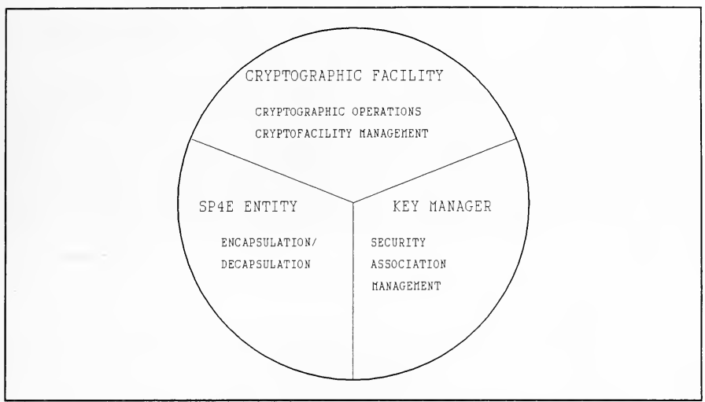
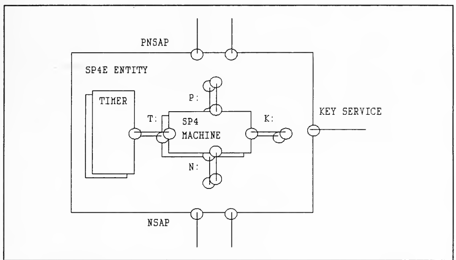
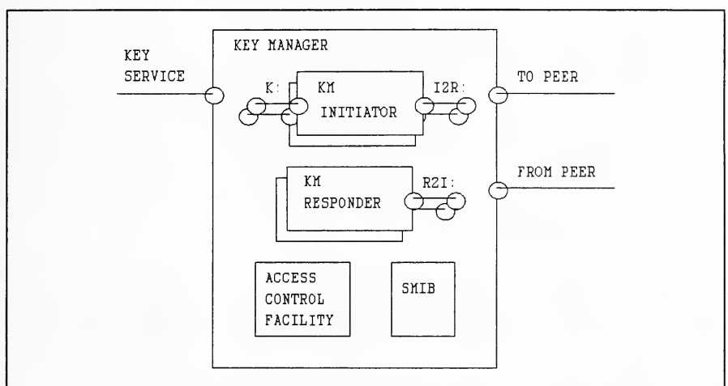
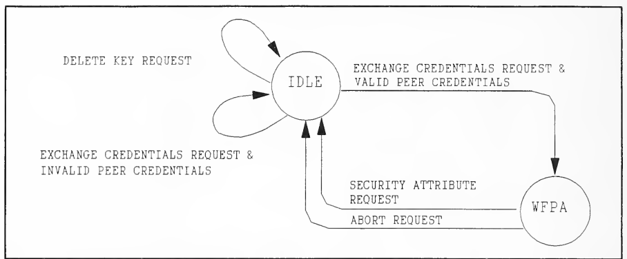

NIST IR 4792 日本語訳
英語タイトル : A Formal Description of the SDNS Security Protocol at Layer 4 (SP4)日本語タイトル : 第 4 層における SDNS セキュリティプロトコル（SP4）の形式記述
公開日 : 1992-03-01
原文URL : https://csrc.nist.gov/pubs/ir/4792/final
原本 PDF : https://doi.org/10.6028/NIST.IR.4792
訳文 : 有志による非公式の日本語訳（AI による翻訳とレビュー）。全 404 段落のうち 334 段落を翻訳済み（原文取得日 : 2026-10-31）
[要約] NIST IR 4792 は、第 4 層における SDNS セキュリティプロトコル（SP4）の形式記述を収めた報告書です。SDNS は国家安全保障局が 1986 年に開始したプロジェクトで、SP4 は、そのセキュリティアーキテクチャ全体の構成要素の一つとして、OSI 参照モデルのトランスポート層でセキュリティサービスを提供します。SP4 の仕様記述には、Pascal 言語の言語要素を持つ拡張状態遷移モデルに基づき、階層構造をなすモジュールのシステムを記述する、OSI の形式記述技法（FDT）である Estelle が使われています。形式記述の設計は、最上位とその次の段階のモジュール分解を通じて説明されており、基礎となるセキュリティ管理情報ベースの記述も含まれています。
NISTIR 4792
NISTIR 4792
A Formal Description of the SDNS Security Protocol at Layer 4 (SP4)
第 4 層における SDNS セキュリティプロトコル（SP4）の形式記述
Wayne A. Jansen
Wayne A. Jansen
U.S. DEPARTMENT OF COMMERCE
Technology Administration
National Institute of Standards and Technology
Computer Systems Laboratory
Computer Security Division
Gaithersburg, MD 20899
米国商務省
技術庁
米国国立標準技術研究所（National Institute of Standards and Technology）
コンピュータシステム研究所
コンピュータセキュリティ部門
Gaithersburg, MD 20899
U.S. DEPARTMENT OF COMMERCE
Barbara Hackman Franklin, Secretary
米国商務省
Barbara Hackman Franklin 長官
NATIONAL INSTITUTE OF STANDARDS AND TECHNOLOGY
John W. Lyons, Director
米国国立標準技術研究所
John W. Lyons 所長
NISTIR 4792
NISTIR 4792
A Formal Description of the SDNS Security Protocol at Layer 4 (SP4)
第 4 層における SDNS セキュリティプロトコル（SP4）の形式記述
Wayne A. Jansen
Wayne A. Jansen
U.S. DEPARTMENT OF COMMERCE
Technology Administration
National Institute of Standards and Technology
Computer Systems Laboratory
Computer Security Division
Gaithersburg, MD 20899
米国商務省
技術庁
米国国立標準技術研究所（National Institute of Standards and Technology）
コンピュータシステム研究所
コンピュータセキュリティ部門
Gaithersburg, MD 20899
March 1992
1992年3月
U.S. DEPARTMENT OF COMMERCE
Barbara Hackman Franklin, Secretary
米国商務省
Barbara Hackman Franklin 長官
NATIONAL INSTITUTE OF STANDARDS AND TECHNOLOGY
John W. Lyons, Director
米国国立標準技術研究所
John W. Lyons 所長
TABLE OF CONTENTS
目次
TABLE OF CONTENTS (continued)
目次（続き）
APPENDIX A: ESTELLE SPECIFICATION OF SP4E MODULES — 33
付録 A: SP4E モジュールの ESTELLE 仕様 — 33
APPENDIX B: SPECIFICATION OF SP4E ENTITY SUBMODULES — 47
付録 B: SP4E エンティティのサブモジュールの仕様 — 47
APPENDIX C: SPECIFICATION OF KEY MANAGER SUBMODULES — 77
付録 C: 鍵管理器のサブモジュールの仕様 — 77
APPENDIX D: ATTRIBUTE DEFINITIONS FOR SMIB OBJECTS — 105
付録 D: SMIB オブジェクトの属性定義 — 105
D.1. Authentication Objects — 105
D.1. 認証オブジェクト — 105
D.2. Authorization Objects — 105
D.2. 認可オブジェクト — 105
D.3. Access Control Objects — 106
D.3. アクセス制御オブジェクト — 106
ABSTRACT
要旨
The Secure Data Network System (SDNS) project, initiated by the National Security Agency in 1986, produced a computer network security architecture within the framework of the International Organization for Standardization (ISO) reference model for Open Systems Interconnection (OSI). This report contains a formal description of the SDNS security protocol at layer four (SP4), one component of the overall security architecture. Estelle is the OSI formal description technique (FDT) used for the SP4 specification. Estelle is based on an extended state transition model with language elements from the Pascal language. An Estelle specification describes a hierarchically structured system of modules. The design of the formal description is explained through a top level and subsequent level of module decomposition. A description of the underlying security management information base is also included.
国家安全保障局が 1986 年に開始したセキュアデータネットワークシステム（Secure Data Network System、SDNS）プロジェクトは、国際標準化機構（ISO）の開放型システム間相互接続（OSI）参照モデルの枠組みの中で、コンピュータネットワークのセキュリティアーキテクチャを生み出しました。本報告書は、そのセキュリティアーキテクチャ全体の一つの構成要素である、第 4 層における SDNS セキュリティプロトコル（SP4）の形式記述を収めています。Estelle は、SP4 の仕様記述に使われる OSI の形式記述技法（FDT）です。Estelle は、Pascal 言語の言語要素を持つ、拡張状態遷移モデルに基づいています。Estelle の仕様は、階層構造をなすモジュールのシステムを記述します。形式記述の設計は、最上位と、それに続く階層のモジュール分解を通じて説明します。基盤となるセキュリティ管理情報ベースの記述も含みます。
Key Words: Secure Data Network System; Computer Network Security; Open Systems Interconnection; Security Protocol; Formal Description Technique
キーワード: Secure Data Network System; Computer Network Security; Open Systems Interconnection; Security Protocol; Formal Description Technique
1. INTRODUCTION
1. はじめに
1.1 Background
1.1 背景
The National Institute of Standards and Technology (NIST) and the National Security Agency (NSA) initiated a joint project in Computer Network Security in 1984. The project was based on the recognition that a comprehensive set of security mechanisms is needed to provide cost effective access control to data in geographically distributed computer networks. While the detailed security mechanisms can differ between the classified and unclassified communities requiring security, both communities benefit when commercial computer networks are developed with a common security architecture. The NSA initiated the Secure Data Network System (SDNS) program in 1986 as a result, at least partially, of this joint project.
米国国立標準技術研究所（NIST）と国家安全保障局（NSA）は、1984 年にコンピュータネットワークセキュリティに関する共同プロジェクトを開始しました。このプロジェクトは、地理的に分散したコンピュータネットワークにおいて、データへの費用対効果の高いアクセス制御を提供するには、包括的なセキュリティ機構一式が必要であるという認識に基づいていました。セキュリティを必要とする機密扱いのコミュニティと非機密扱いのコミュニティとでは、詳細なセキュリティ機構が異なる場合がありますが、共通のセキュリティアーキテクチャに基づいて商用コンピュータネットワークが開発されれば、どちらのコミュニティにも利益があります。NSA は、少なくとも一部はこの共同プロジェクトの結果として、1986 年にセキュアデータネットワークシステム（SDNS）計画を開始しました。
Security Protocol 4 (SP4) [ref. 3,4] is one element of the SDNS architecture [ref. 5], used to provide security services at the Transport Layer of the International Organization for Standardization (ISO) Basic Reference Model (BRM) for Open System Interconnection (OSI) [ref. 1]. SP4 is compliant with the security addendum to the OSI BRM [ref. 2], and forms the basis of the emerging ISO standard for a Transport Layer Security Protocol [ref. 6]. SP4 extends the OSI Transport connectionless and connection oriented services to provide or support the following security services defined in the security addendum:
セキュリティプロトコル 4（SP4）[ref. 3,4] は、SDNS アーキテクチャ [ref. 5] の構成要素の一つで、開放型システム間相互接続（OSI）の国際標準化機構（ISO）基本参照モデル（BRM）[ref. 1] のトランスポート層でセキュリティサービスを提供するために使われます。SP4 は、OSI BRM のセキュリティ付録 [ref. 2] に準拠しており、トランスポート層セキュリティプロトコルの ISO 標準として策定中のものの基礎となっています [ref. 6]。SP4 は、OSI トランスポートのコネクションレス型およびコネクション型のサービスを拡張して、セキュリティ付録で定義された次のセキュリティサービスを提供または支援します。
(1)Data Integrity,
(1)データの完全性、
(2)Data Confidentiality,
(2)データの機密性、
(3)Data Origination Authentication, and
(3)データ出所認証、
(4)Access Control.
(4)アクセス制御。
SP4 functionality is logically situated at the bottom of the Transport Layer. It consists of a simple encapsulation/decapsulation protocol that protects normal Transport Protocol data units within a cryptographically secure envelope. SP4 is appropriate for security domains that are end-system oriented in their administration of security mechanisms such as encipherment, and require accountability and protection of data on a Transport connection basis. SP4 may be especially relevant to agencies and organizations who have determined that the required means of providing reliable end-to-end communications is through the class 4 Transport Protocol (e.g., the United States Government OSI Profile [ref. 12]). This is due to the tendency to administer such systems from a Transport standpoint, and the likelihood of extending this perspective to incorporate security services.
SP4 の機能は、論理的にはトランスポート層の最下部に位置します。これは単純なカプセル化／脱カプセル化プロトコルで構成され、通常のトランスポートプロトコルのデータユニットを、暗号技術により安全な封筒の中に保護します。SP4 は、暗号化などのセキュリティ機構の管理がエンドシステム指向であり、トランスポートコネクション単位でのデータの説明責任と保護を必要とするセキュリティドメインに適しています。SP4 は、信頼できるエンドツーエンド通信を提供するために必要な手段がクラス 4 のトランスポートプロトコル（たとえば米国政府 OSI プロファイル [ref. 12]）であると判断した機関や組織に、特に関連が深い場合があります。これは、そのようなシステムをトランスポートの観点から管理する傾向があり、この観点をセキュリティサービスにまで広げる可能性が高いためです。
This document presents the design specifications for the formal description of SP4, as the initial step in the production of a reference implementation. The rationale for producing an SP4 reference implementation is to promote general understanding and acceptance of the standard, to remove errors and inconsistencies that may be present in its definition, and to encourage development of commercial product implementations. A reference implementation may be manually or automatically derived from the formal specification.
本書は、リファレンス実装を作成するための最初の段階として、SP4 の形式記述の設計仕様を示します。SP4 のリファレンス実装を作成する理由は、標準への一般的な理解と受容を促進すること、標準の定義に存在し得る誤りや不整合を取り除くこと、商用製品の実装の開発を促すことです。リファレンス実装は、形式仕様から手作業または自動で導出できます。
1.2 Approach
1.2 アプローチ
Estelle [ref. 7] is the formal description technique selected to specify the behavior of SP4 and model its operating environment. Compared with other formal description techniques, Estelle is more implementation oriented. Various tools have been developed at NIST, including the NIST Estelle specification compiler [ref. 8] and the Prototyping Environment for Distributed Systems (PEDS) preprocessor and runtime library [ref. 9]. They may be used to produce an implementation from an Estelle formal description, and provide a test and demonstration vehicle within the modeled environment. Key portions of the implementation can be used to produce a prototype implementation by replacing modeled components such as the communications network, by actual components within an end-system. The resulting prototype constitutes the reference implementation.
Estelle [ref. 7] は、SP4 の振る舞いを仕様化し、その動作環境をモデル化するために選ばれた形式記述技法です。他の形式記述技法と比べて、Estelle は実装指向です。NIST では、NIST Estelle 仕様コンパイラ [ref. 8] や、Prototyping Environment for Distributed Systems（PEDS）のプリプロセッサおよび実行時ライブラリ [ref. 9] など、さまざまなツールが開発されています。これらを使って Estelle の形式記述から実装を作成でき、モデル化された環境の中で、試験およびデモンストレーションの手段も得られます。実装の主要部分は、通信ネットワークなどのモデル化された構成要素を、エンドシステム内の実際の構成要素に置き換えることで、プロトタイプ実装を作成するために使えます。その結果得られるプロトタイプが、リファレンス実装となります。
The design for the SP4 formal description concentrates on the SP4E subset of security services. SP4E provides security services for individual connections between end-systems on a collective basis, and has the advantage that it may be modeled as an independent protocol entity. The SP4E subset may be contrasted to the full functionality of SP4C that can provide security services individually to end-system connections but is dependent on mechanisms within the Transport Layer to provide those services. Although the full SP4C functionality is formally described, its use is constrained to the SP4E subset to avoid having to include a Transport Layer Protocol within the formal description. Therefore, the design and formal description given in this document emphasizes the SP4E subset.
SP4 形式記述の設計は、セキュリティサービスの SP4E サブセットに集中しています。SP4E は、エンドシステム間の個々のコネクションに対するセキュリティサービスを集合的に提供し、独立したプロトコルエンティティとしてモデル化できる利点があります。SP4E サブセットは、エンドシステムのコネクションに個別にセキュリティサービスを提供できるものの、そのサービスの提供をトランスポート層内の機構に依存する SP4C の完全な機能と対比できます。SP4C の完全な機能も形式記述されていますが、形式記述にトランスポート層プロトコルを含めなくて済むよう、その利用は SP4E サブセットに限定されています。したがって、本書で示す設計と形式記述は、SP4E サブセットを重視しています。
The remainder of the document discusses the structure of the SP4E specification in terms of its top level modules (chapter 2), and reviews implications of the design choices made (chapter 3). Further decomposition of the top level modules is presented for the SP4 Machine (chapter 4) and its associated Key Manager (chapter 5). The organization of the underlying Security Management Information Base (chapter 6) is presented in terms of component objects and relationships.
本書の残りの部分では、SP4E 仕様の構造を最上位のモジュールの観点から論じ（第 2 章）、行われた設計上の選択の意味合いを検討します（第 3 章）。最上位モジュールのさらなる分解を、SP4 マシン（第 4 章）とそれに関連する鍵管理器（第 5 章）について示します。基盤となるセキュリティ管理情報ベース（第 6 章）の構成を、構成要素となるオブジェクトとその関係の観点から示します。
The Estelle specification representing the top level design is provided in Appendix A. Appendices B and C contain further decompositions of top level modules. The detailed descriptions of attributes of modeled objects in the Security Management Information Base appear in Appendix D. The reader is assumed to be familiar with the SP4 standard and have a reading knowledge of the Pascal programming language.
最上位の設計を表す Estelle 仕様は、付録 A に示します。付録 B と C には、最上位モジュールのさらなる分解を収めています。セキュリティ管理情報ベースにおけるモデル化されたオブジェクトの属性の詳細な記述は、付録 D に示します。読者は、SP4 標準に精通し、Pascal プログラミング言語を読める知識があることを前提としています。
2. SPECIFICATION FRAMEWORK
2. 仕様の枠組み
Estelle can be regarded as Pascal extended with constructs for specifying communications protocol descriptions, such as those associated with the representation and operation of finite state machines. The module is the principal means to refine or decompose a protocol description in Estelle. An Estelle specification describes a hierarchically structured system of modules. Modules are normally used to model a class of system process, and can be instantiated and coupled through available language constructs. Functions and procedures are supported as alternative means of functional decomposition and are typically used to hide implementation details. Asynchronous exchanges between modules are modelled by the interaction point construct. Interaction points are divided into roles (e.g., user, provider) that delineate the responsibilities of exchanged services within a dialogue.
Estelle は、有限状態機械の表現や動作に関するものなど、通信プロトコルの記述を仕様化するための構文要素で拡張された Pascal と見なせます。モジュールは、Estelle でプロトコルの記述を詳細化または分解するための主要な手段です。Estelle の仕様は、階層構造をなすモジュールのシステムを記述します。モジュールは通常、システムプロセスのクラスをモデル化するために使われ、利用可能な言語構文によってインスタンス化および結合できます。関数と手続きは、機能分解の代替手段としてサポートされており、通常は実装の詳細を隠すために使われます。モジュール間の非同期のやりとりは、インタラクションポイント構文でモデル化されます。インタラクションポイントは、対話の中でやりとりされるサービスの責務を区分する役割（たとえば、利用者、プロバイダー）に分けられます。
The selection and organization of modules for the specification was a compromise among many conflicting objectives. The following objectives were key considerations:
仕様のためのモジュールの選択と構成は、相反する多くの目的の間の妥協でした。次の目的が主要な考慮事項でした。
(1)to illustrate SP4 in as clear and understandable a fashion as possible, maintaining established software engineering principles;
(1)確立されたソフトウェア工学の原則を保ちながら、SP4 をできる限り明確で理解しやすい形で示すこと。
(2)to express the full generality and implications of the SP4E subset, in an implementation independent manner;
(2)SP4E サブセットの完全な一般性とその意味合いを、実装に依存しない形で表現すること。
(3)to isolate and limit the modules that require a high level of trust in a secure application;
(3)セキュアなアプリケーションの中で高いレベルの信頼を必要とするモジュールを、分離して限定すること。
(4)to make the specification as realistic as possible, while avoiding placing limitations on future enhancements; and
(4)将来の機能強化に制約を課すことを避けつつ、仕様をできる限り現実的なものにすること。
(5)to keep the specification aligned with the SDNS architectural principles; in particular:
(5)仕様を SDNS アーキテクチャの原則に沿ったものに保つこと。特に次の点。
(a)to rely on key management to provide authentication and access control for SP4 entities,
(a)SP4 エンティティの認証とアクセス制御を提供するために、鍵管理に依拠すること。
(b)to allow different key management schemes and allied protocols to be used, and
(b)異なる鍵管理方式と関連プロトコルを使えるようにすること、
(c)to maintain the independence of security services from any underlying cryptographic security mechanisms.
(c)セキュリティサービスを、基盤となる暗号セキュリティ機構から独立に保つこと。
At the highest module level, the SP4E specification contains common facilities shared by modules formed by its refinement. These facilities include a Cryptographic Facility where the cryptographic security mechanisms reside, and a Man-Machine Interface Facility that contains machine dependent mechanisms supporting user interaction. Both facilities are represented as sets of primitive routines and therefore only their interface description is considered part of the formal description.
最上位のモジュールレベルでは、SP4E 仕様は、その詳細化によって形成されるモジュールが共有する共通の機能を含みます。これらの機能には、暗号セキュリティ機構が存在する暗号機能（Cryptographic Facility）と、利用者との対話を支援する機械依存の機構を含むマンマシンインタフェース機能（Man-Machine Interface Facility）があります。どちらの機能も基本ルーチンの集合として表されるため、それらのインタフェースの記述のみが形式記述の一部と見なされます。
Refinement of the SP4E specification module produces the top level design, consisting of the following Estelle modules:
SP4E 仕様モジュールを詳細化すると、次の Estelle モジュールからなる最上位の設計ができます。
(1)the Transport User,
(1)トランスポート利用者（Transport User）、
(2)the SP4E Entity,
(2)SP4E エンティティ（SP4E Entity）、
(3)the Key Manager, and
(3)鍵管理器（Key Manager）、および
(4)the Communications Network.
(4)通信ネットワーク（Communications Network）。
Figure 1 illustrates these modules in a typical test configuration, along with the group of functions and procedures that collectively make up the Cryptographic Facility (Cryptofacility).
図 1 は、これらのモジュールを典型的な試験構成の中で、暗号機能（Cryptofacility）を集合的に構成する関数と手続きの群とともに示しています。
![Block diagram inside a rectangular frame. A TRANSPORT USER box at top left connects downward through two pairs of interaction points, labeled PNSAP, to an SP4E ENTITY box. An arrow runs from the top of the SP4E ENTITY up to a CRYPTO FACILITY box (octagonal) at top center. The SP4E ENTITY connects to the right through interaction points labeled KEY SERVICE to a KEY MANAGER box; an arrow runs from the KEY MANAGER up to the CRYPTO FACILITY. The KEY MANAGER has two interaction points on its right side with lines labeled TO PEER and FROM PEER. Below, the SP4E ENTITY connects downward through two pairs of interaction points, labeled NSAP, to a wide COMMUNICATIONS NETWORK box; inside it a dashed line runs from the left interaction point and is labeled TO PEER SP4E ENTITY.](assets/ir-4792/p0012-figure-01.png)
枠で囲んだブロック図です。左上の TRANSPORT USER（トランスポート利用者）の箱が、PNSAP と記した 2 組の相互作用点を通じて下の SP4E ENTITY の箱につながっています。SP4E ENTITY の上端から中央上部の八角形の CRYPTO FACILITY（暗号機能）の箱へ矢印が出ています。SP4E ENTITY は右側で KEY SERVICE と記した相互作用点を通じて KEY MANAGER（鍵管理者）の箱につながり、KEY MANAGER からも CRYPTO FACILITY へ矢印が出ています。KEY MANAGER の右側には 2 つの相互作用点があり、それぞれ TO PEER、FROM PEER と記した線が出ています。下では、SP4E ENTITY が NSAP と記した 2 組の相互作用点を通じて横長の COMMUNICATIONS NETWORK（通信網）の箱につながり、その中で左の相互作用点から出る破線に TO PEER SP4E ENTITY と記されています。
Figure 1: SP4E Simulated Environment
図 1: SP4E シミュレーション環境
The SP4E Entity module is the cornerstone of the specification and forms the basis for the reference implementation. The remaining modules are included in the specification to provide a context and/or test harness for the SP4E Entity module. The SP4E Entity uses the Key Manager and the Cryptographic Facility shared with the Key Manager to provide security services for the Transport User over the Communications Network. The sections that follow describe each module in further detail. Appendix A gives the corresponding Estelle specification.
SP4E エンティティモジュールは仕様の要であり、リファレンス実装の基礎となります。残りのモジュールは、SP4E エンティティモジュールの文脈や試験用ハーネスを提供するために仕様に含まれています。SP4E エンティティは、鍵管理器と、鍵管理器と共有する暗号機能とを使って、通信ネットワーク経由でトランスポート利用者にセキュリティサービスを提供します。以降の節で、各モジュールをさらに詳しく説明します。対応する Estelle 仕様は付録 A に示します。
2.1 The Transport User
2.1 トランスポート利用者
The Transport User module simulates one or more Transport Protocol entities. The module provides a demonstration capability that allows the selection and processing of test scenarios through the Man-Machine Interface Facility. It may be initialized to either an initiator or responder role corresponding to the desired handling and treatment of test scenario exchanges. The Transport User module employs the pseudo connectionless Network interface provided by the SP4E Entity to drive the simulated environment. The pseudo connectionless Network interface is an artifact provided by the SP4E Entity. The interface is an exact duplicate of that offered by the Communications Network, which it, in turn, employs.
トランスポート利用者モジュールは、1 つ以上のトランスポートプロトコルエンティティをシミュレートします。このモジュールは、マンマシンインタフェース機能を通じて試験シナリオを選択して処理できるデモンストレーション機能を提供します。試験シナリオのやりとりの望ましい取り扱いと処理に応じて、イニシエーターまたはレスポンダーのどちらの役割にも初期化できます。トランスポート利用者モジュールは、模擬環境を駆動するために、SP4E エンティティが提供する擬似コネクションレス型ネットワークインタフェースを使います。擬似コネクションレス型ネットワークインタフェースは、SP4E エンティティが作り出したものです。このインタフェースは、通信ネットワークが提供するインタフェースの完全な複製であり、SP4E エンティティ自身は、その通信ネットワークのインタフェースを使います。
2.2 The SP4E Entity
2.2 SP4E エンティティ
SP4E Entity modules communicate with one another through a connectionless Network interface offered by the Communications Network. The SP4E Entity module also provides a pseudo connectionless Network interface to the Transport User as mentioned previously. For each pseudo Network service access point (PNSAP) offered, there is an identical Network service access point (NSAP) utilized and vice versa. The pairing of service access points in this manner allows the SP4E security mechanisms to be isolated from both the Transport and Network Protocol entities, within a module. The SP4E Entity module also employs an asynchronous interface to the Key Manager. The PNSAP, the NSAP, and the interface to the Key Manager are modeled in Estelle as interaction points.
SP4E エンティティモジュールは、通信ネットワークが提供するコネクションレス型ネットワークインタフェースを通じて、互いに通信します。SP4E エンティティモジュールは、前述のとおり、トランスポート利用者に対して擬似コネクションレス型ネットワークインタフェースも提供します。提供される擬似ネットワークサービスアクセスポイント（PNSAP）ごとに、使用される同一のネットワークサービスアクセスポイント（NSAP）があり、その逆も同様です。このようにサービスアクセスポイントを対にすることで、SP4E のセキュリティ機構を、モジュール内でトランスポートプロトコルエンティティとネットワークプロトコルエンティティの両方から分離できます。SP4E エンティティモジュールは、鍵管理器との非同期インタフェースも使います。PNSAP、NSAP、鍵管理器へのインタフェースは、Estelle ではインタラクションポイントとしてモデル化されます。
The SP4E Entity is composed of two types of submodules: the SP4 Machine and the Timer Facility. The SP4 Machine submodule encapsulates and decapsulates Transport Protocol data units within a security envelope for protection. It can provide the full functionality of SP4, although not fully utilized by the SP4E Entity. The SP4 Machine submodule uses the interface to the Key Manager module to request, replace, return, and verify traffic key assignment. Assigned keys are used, in turn, through the interface to the Cryptographic Facility to encipher/decipher information and compute integrity check values. The Timer Facility submodule provides the SP4 Machine with a mechanism for determining protracted delays with the Key Manager. The two submodules communicate with each other through an internal interaction point.
SP4E エンティティは、SP4 マシンとタイマー機能の 2 種類のサブモジュールで構成されます。SP4 マシンサブモジュールは、トランスポートプロトコルのデータユニットを、保護のためのセキュリティ封筒の中にカプセル化し、また脱カプセル化します。SP4 の完全な機能を提供できますが、SP4E エンティティはそれを完全には利用しません。SP4 マシンサブモジュールは、鍵管理器モジュールへのインタフェースを使って、トラフィック鍵の割り当てを要求、置換、返却、検証します。割り当てられた鍵は、次に、暗号機能へのインタフェースを通じて、情報の暗号化／復号と完全性検査値の計算に使われます。タイマー機能サブモジュールは、SP4 マシンに、鍵管理器との間の長引く遅延を判定するための機構を提供します。2 つのサブモジュールは、内部のインタラクションポイントを通じて互いに通信します。
When either an incoming request from the user or an incoming indication from the network occurs respectively at a PNSAP or NSAP, the SP4E Entity instantiates both a SP4 Machine submodule and a supporting timer submodule, connecting them together through the "T" interaction point. The parent SP4E Entity must multiplex subsequent events that occur at either the PNSAP or matching NSAP, to and from the corresponding "P" and "N" interaction points of the child SP4 Machine, to allow the child to assume responsibility for these interactions. Similarly, the SP4E Entity also multiplexes events for the child SP4 Machine’s "K" interaction point over the "key service" interaction point with the Key Manager. After dealing with the triggering event, the submodules remain in place to service future events that occur at the PNSAP and NSAP pair. Figure 2 illustrates an instance of two, peer SP4E Entities and their submodules.
利用者からの着信要求がある PNSAP で発生する場合、またはネットワークからの着信指示が NSAP で発生する場合に、SP4E エンティティは、SP4 マシンサブモジュールと、それを支えるタイマーサブモジュールの両方をインスタンス化し、「T」インタラクションポイントを通じて両者を接続します。親の SP4E エンティティは、PNSAP または対応する NSAP で以後に発生するイベントを、子の SP4 マシンの対応する「P」および「N」インタラクションポイントとの間で多重化し、子がこれらのやりとりの責務を引き受けられるようにしなければなりません。同様に、SP4E エンティティは、子の SP4 マシンの「K」インタラクションポイントのイベントも、鍵管理器との「key service」インタラクションポイント経由で多重化します。きっかけとなったイベントを処理した後も、サブモジュールはそのまま残り、PNSAP と NSAP の対で発生する将来のイベントに対応します。図 2 は、対等な 2 つの SP4E エンティティとそのサブモジュールのインスタンスを示しています。
![Two SP4E ENTITY boxes side by side above a wide COMMUNICATIONS NETWORK box, all inside a frame. Each SP4E ENTITY has two interaction points labeled PNSAP on its top edge with lines running upward, two interaction points labeled NSAP on its bottom edge connected down to the COMMUNICATIONS NETWORK, and a KEY SERVICE interaction point on its inner side (the two KEY SERVICE lines face each other but are not joined). Inside each entity is a stacked (multiple-instance) SP4 MACHINE submodule with interaction points labeled P: (top), N: (bottom), K: (toward the key service side) and T: (toward the outer side), where T: connects to a stacked TIMER submodule.](assets/ir-4792/p0014-figure-01.png)
枠の中に、2 つの SP4E ENTITY の箱が左右に並び、その下に横長の COMMUNICATIONS NETWORK（通信網）の箱があります。各 SP4E ENTITY は、上辺に PNSAP と記した 2 つの相互作用点（上へ線が出ています）、下辺に NSAP と記した 2 つの相互作用点（下の COMMUNICATIONS NETWORK につながります）、内側の辺に KEY SERVICE の相互作用点を持ちます（左右の KEY SERVICE の線は向き合っていますが、つながってはいません）。各エンティティの中には重ねて描かれた（複数インスタンスの）SP4 MACHINE サブモジュールがあり、P:（上）、N:（下）、K:（KEY SERVICE 側）、T:（外側）の相互作用点を持ちます。T: は重ねて描かれた TIMER（タイマー）サブモジュールにつながっています。
Figure 2: Peer SP4E Entity Modules
図 2: 対等な SP4E エンティティモジュール
2.3 The Key Manager
2.3 鍵管理器
The Key Manager module retains responsibility for establishing security associations for the SP4E Entity module, as mandated by the security policy parameters and access control restrictions contained within a Security Management Information Base (SMIB). It provides a key service interface corresponding to that used by the SP4E Entity module. The Key Manager uses its interface to the Cryptographic Facility to establish and manage traffic encryption keys. It exchanges key management information directly with its peer through a pair of initiator/responder interaction points.
鍵管理器モジュールは、セキュリティ管理情報ベース（SMIB）に含まれるセキュリティポリシーパラメータとアクセス制御制限によって義務付けられるとおりに、SP4E エンティティモジュールのためのセキュリティアソシエーションを確立する責務を引き続き負います。SP4E エンティティモジュールが使うものに対応する鍵サービスインタフェースを提供します。鍵管理器は、暗号機能へのインタフェースを使って、トラフィック暗号化鍵を確立し管理します。イニシエーター／レスポンダーのインタラクションポイントの対を通じて、対等な相手と直接、鍵管理情報を交換します。
The Key Manager module is composed of a pair of submodules that conduct the activities of either an initiator or responder key management agent. The Key Manager instantiates a KM_Initiator submodule for each service request received from an SP4E Entity. It instantiates a KM_Responder submodule when a key management primitive is received from an KM_Initiator submodule of a peer Key Manager. Once a submodule is instantiated it assumes responsibility for the triggering event and any subsequent event interactions. Subsequent interactions between communicating peer KM_Initiator and KM_Responder submodules are multiplexed, from either the "I2R" (initiator-to-responder) or "R2I" (responder-to-initiator) interaction points over the corresponding "to peer" and "from peer" interaction points, by the respective parent Key Manager modules. Similarly, the parent Key Manager also multiplexes events for the child’s "K" interaction point over the "key service" interaction point with the SP4E Entity. Figure 3 illustrates an instance of two, peer Key Manager entities and their submodules.
鍵管理器モジュールは、イニシエーターまたはレスポンダーのどちらかの鍵管理エージェントの活動を実行する、1 対のサブモジュールで構成されます。鍵管理器は、SP4E エンティティから受け取るサービス要求ごとに、KM_Initiator サブモジュールをインスタンス化します。対等な鍵管理器の KM_Initiator サブモジュールから鍵管理プリミティブを受け取ると、KM_Responder サブモジュールをインスタンス化します。サブモジュールがインスタンス化されると、きっかけとなったイベントと、その後のイベントのやりとりの責務を引き受けます。通信する対等な KM_Initiator サブモジュールと KM_Responder サブモジュールの間のその後のやりとりは、「I2R」（イニシエーターからレスポンダーへ）または「R2I」（レスポンダーからイニシエーターへ）のインタラクションポイントから、それぞれの親の鍵管理器モジュールによって、対応する「to peer」および「from peer」インタラクションポイント経由で多重化されます。同様に、親の鍵管理器は、子の「K」インタラクションポイントのイベントも、SP4E エンティティとの「key service」インタラクションポイント経由で多重化します。図 3 は、対等な 2 つの鍵管理器エンティティとそのサブモジュールのインスタンスを示しています。
![Two KEY MANAGER boxes side by side inside a frame, mirror images of each other. Each has a KEY SERVICE interaction point on its outer side with a line running outward. Inside each are a stacked KM INITIATOR submodule with interaction points K: (toward the key service) and I2R:, a KM RESPONDER submodule (stacked in the right-hand Key Manager) with interaction point R2I:, an ACCESS CONTROL FACILITY box and an SMIB box. Each KEY MANAGER has two interaction points on its inner side, labeled TO PEER (upper) and FROM PEER (lower); two lines cross between the Key Managers, joining each one's upper (TO PEER) point to the other's lower (FROM PEER) point.](assets/ir-4792/p0015-figure-01.png)
枠の中に、2 つの KEY MANAGER（鍵管理者）の箱が左右対称に並んでいます。それぞれ外側の辺に KEY SERVICE の相互作用点があり、外へ線が出ています。各箱の中には、K:（KEY SERVICE 側）と I2R: の相互作用点を持つ重ねて描かれた KM INITIATOR（開始側）サブモジュール、R2I: の相互作用点を持つ KM RESPONDER（応答側）サブモジュール（右の鍵管理者では重ねて描かれています）、ACCESS CONTROL FACILITY（アクセス制御機能）の箱、SMIB の箱があります。各 KEY MANAGER の内側の辺には TO PEER（上）と FROM PEER（下）と記した 2 つの相互作用点があり、2 本の線が交差して、一方の上の点（TO PEER）を他方の下の点（FROM PEER）に結んでいます。
Figure 3: Peer Key Manager Entity Modules
図 3: 対等な鍵管理器エンティティモジュール
A KM_Initiator submodule must originate the dialogue to establish and manage a security association, while a KM_Responder submodule residing in a peer Key Manager merely reacts to the KM_Initiator’s requests. Since communicating KM_Initiator and KM_Responder submodules reside within different Key Managers, each may be representing end-systems with different security policies. Each would employ a potentially different SMIB, and must therefore be capable of negotiating a common security position. To aid in the negotiation, an Access Control Facility is defined. The Access Control Facility consists of a group of functions and procedures that collectively determine access control permissions.
KM_Initiator サブモジュールは、セキュリティアソシエーションを確立し管理するための対話を開始しなければなりません。一方、対等な鍵管理器にある KM_Responder サブモジュールは、KM_Initiator の要求に反応するだけです。通信する KM_Initiator サブモジュールと KM_Responder サブモジュールは異なる鍵管理器にあるため、それぞれが、異なるセキュリティポリシーを持つエンドシステムを代表している場合があります。それぞれが、潜在的に異なる SMIB を使うことになり、したがって、共通のセキュリティ上の立場を交渉できなければなりません。この交渉を支援するために、アクセス制御機能が定義されています。アクセス制御機能は、アクセス制御の許可を集合的に決定する関数と手続きの群で構成されます。
Like the Access Control Facility, a group of function and procedure definitions makes up the interface to the SMIB. Collectively they provide the capability to create new objects, to manipulate existing objects that populate the SMIB, to enter, access, or modify information stored as attributes of those objects, and to destroy objects no longer needed. The interface operates at the object level. It is used exclusively by the Key Manager and its submodules, who are relied upon to maintain the integrity of the SMIB.
アクセス制御機能と同様に、SMIB へのインタフェースも、関数と手続きの定義の群で構成されます。これらは集合的に、新しいオブジェクトを作成する機能、SMIB に存在する既存のオブジェクトを操作する機能、それらのオブジェクトの属性として保存された情報を入力、アクセス、または変更する機能、不要になったオブジェクトを破棄する機能を提供します。このインタフェースはオブジェクトレベルで動作します。SMIB の完全性を維持することを期待される鍵管理器とそのサブモジュールだけが使用します。
2.4 The Communications Network
2.4 通信ネットワーク
The Communications Network module represents the lower three layers of the ISO reference model for OSI. It provides a connectionless Network service that supports the exchange of data between peer SP4E entities. The Communications Network module also displays network traffic as part of the demonstration capability, using the Man-Machine Interface Facility.
通信ネットワークモジュールは、ISO の OSI 参照モデルの下位 3 層を表します。対等な SP4E エンティティ間のデータ交換を支援する、コネクションレス型ネットワークサービスを提供します。通信ネットワークモジュールは、デモンストレーション機能の一部として、マンマシンインタフェース機能を使ってネットワークトラフィックも表示します。
2.5 The Cryptographic Facility
2.5 暗号機能
The Cryptographic Facility houses the cryptographic algorithms needed by the security protocol entities to provide security services. It is intended to isolate the cryptographic algorithms from the protocol machines that employ them. To function properly for the security protocol entities, the Cryptographic Facility must contain appropriate keying material, established by the Key Manager. Therefore, the facility supports a bipartite interface: one portion for the SP4E Entity and the other for the Key Manager. Figure 4 gives an illustration of the Cryptographic Facility.
暗号機能は、セキュリティプロトコルエンティティがセキュリティサービスを提供するために必要な暗号アルゴリズムを収容します。暗号アルゴリズムを、それを使うプロトコルマシンから分離することを意図しています。セキュリティプロトコルエンティティのために適切に機能するには、暗号機能は、鍵管理器が確立した適切な鍵素材を含んでいなければなりません。そのため、この機能は 2 部構成のインタフェースをサポートします。一方は SP4E エンティティ用、もう一方は鍵管理器用です。図 4 に、暗号機能の図を示します。
![Block diagram inside a frame; an inner box is split by a dashed vertical line into a left half under the heading KEY MANAGER INTERFACE and a right half under the heading SP4E ENTITY INTERFACE. Left half: an arrow enters a CONTROL box from above, and a DATA box has one arrow entering and one leaving at the top; CONTROL has an arrow down to a CRYPTOGRAPHIC ENGINE box, and DATA exchanges arrows in both directions with it. Below the engine, an arrow runs down from the engine to a SYSTEM CERTIFICATE box and another runs up from SYSTEM CERTIFICATE to the engine; an arrow runs up from a MASTER KEY STORE box to the engine. A line leaves the right side of the left CRYPTOGRAPHIC ENGINE, crosses the dashed line and ends in an arrow into a TRAFFIC KEY MATERIAL STORE box in the right half. Right half: the same CONTROL and DATA boxes with the same arrows above a second CRYPTOGRAPHIC ENGINE box, and an arrow runs up from the TRAFFIC KEY MATERIAL STORE to this engine.](assets/ir-4792/p0016-figure-01.png)
枠の中のブロック図です。内側の箱は縦の破線で左右に分かれ、左半分の上に KEY MANAGER INTERFACE（鍵管理者インタフェース）、右半分の上に SP4E ENTITY INTERFACE（SP4E エンティティインタフェース）と見出しがあります。左半分では、CONTROL（制御）の箱に上から矢印が入り、DATA（データ）の箱には上で入る矢印と出る矢印が 1 本ずつあります。CONTROL から下の CRYPTOGRAPHIC ENGINE（暗号エンジン）の箱へ矢印が出ており、DATA とエンジンの間には双方向の矢印があります。エンジンの下では、エンジンから SYSTEM CERTIFICATE（システム証明書）の箱へ下向きの矢印、SYSTEM CERTIFICATE からエンジンへ上向きの矢印があり、MASTER KEY STORE（マスター鍵格納部）の箱からエンジンへ上向きの矢印があります。左の CRYPTOGRAPHIC ENGINE の右側から出た線が破線を越え、右半分の TRAFFIC KEY MATERIAL STORE（トラフィック鍵素材格納部）の箱に矢印で入ります。右半分には同じ矢印を持つ CONTROL と DATA の箱、その下に 2 つめの CRYPTOGRAPHIC ENGINE の箱があり、TRAFFIC KEY MATERIAL STORE からこのエンジンへ上向きの矢印があります。
Figure 4: The Cryptographic Facility
図 4: 暗号機能
The SP4E Entity portion of the interface provides for the generation of message authentication and manipulation detection codes, encryption/decryption of protocol data units, and status checking of keying material. This portion of the interface is relatively independent of the class of cryptographic system in which the underlying algorithms fall. The Key Manager portion of the interface, however, is dependent on both the cryptosystem and key management scheme employed. For this specification, the interface supports a symmetric cryptosystem with an asymmetric, credential based key management scheme. The Key Manager portion of the interface provides for the initialization of the Cryptographic Facility, the loading of system certificates, the generation of traffic keys and system credentials, the loading of traffic keys, and the release of established traffic keys.
インタフェースの SP4E エンティティ側の部分は、メッセージ認証コードと操作検出コードの生成、プロトコルデータユニットの暗号化／復号、鍵素材の状態確認を提供します。インタフェースのこの部分は、基盤となるアルゴリズムが属する暗号システムのクラスから比較的独立しています。しかし、インタフェースの鍵管理器側の部分は、使われる暗号システムと鍵管理方式の両方に依存します。この仕様では、インタフェースは、公開鍵方式でクレデンシャルに基づく鍵管理方式を備えた共通鍵暗号システムをサポートします。インタフェースの鍵管理器側の部分は、暗号機能の初期化、システム証明書の読み込み、トラフィック鍵とシステムクレデンシャルの生成、トラフィック鍵の読み込み、確立されたトラフィック鍵の解放を提供します。
3. DESIGN COMMENTS AND HIGHLIGHTS
3. 設計に関する注記と要点
The sections that follow highlight implications of the design choices made and indicate potentially troublesome areas in the interpretation of the SP4 standard. The discussion is wide ranging and includes topics concerning service and protocol functionality, the formal description technique, and the structure of the design.
以降の節では、行われた設計上の選択の意味合いを強調し、SP4 標準の解釈で問題となる可能性のある領域を示します。議論は広範囲に及び、サービスとプロトコルの機能、形式記述技法、設計の構造に関する話題を含みます。
3.1 SP4E Profile
3.1 SP4E プロファイル
Table 1 summarizes the capabilities of the SP4E subset in comparison with the full range of security mechanisms employed by SP4. The table shows the name of the security mechanism, the paragraph reference to the SP4 standard [11], and whether the mechanism is mandatory (M), optional (O), or not applicable (NA) from the point of view of both an initiator (I) and responder (R). The table is divided into two categories of mechanisms, basic and optional, that respectively indicate if the security mechanism is inherent to SP4 or can be negotiated.
表 1 は、SP4 が使うセキュリティ機構の全範囲と比較して、SP4E サブセットの能力をまとめたものです。この表は、セキュリティ機構の名称、SP4 標準 [11] の段落参照、およびその機構が、イニシエーター（I）とレスポンダー（R）の双方の観点から、必須（M）、任意（O）、または適用外（NA）のいずれであるかを示しています。表は、基本と任意の 2 つの機構の区分に分けられ、それぞれ、そのセキュリティ機構が SP4 に固有のものか、交渉できるものかを示しています。
TABLE 1: SP4E Capability Profile
表 1: SP4E 能力プロファイル
| MECHANISM | REF | I | R | CMTS |
|---|---|---|---|---|
| Basic Mechanisms: | ||||
| Padding | 6.6 | M | M | |
| Concatenation/Separation | 6.1 | M | M | |
| Encapsulation/ | 5.5 | M | M | |
| Address Verification | 6.4 | M | M | |
| Connection Integrity | 5.5.2 | |||
| direction ind | 6.3.2 | M | M | |
| transport s/n | 5.5.2 | M | M | 1 |
| Optional Mechanisms: | ||||
| Encipherment | 6.2 | O | M | 2 |
| Data Integrity Check | 6.3.1 | O | M | 2 |
| Key Granularity | 5.1 | O | M | 3 |
| Connection Integrity | 5.5.2 | |||
| per tc granularity | 5.1 | NA | NA | 3,4 |
| unique s/n | 6.3.3.1 | NA | NA | 1,5 |
| final s/n | 6.3.3.1 | NA | NA | 1,5 |
| connection release | 6.7 | NA | NA | 5 |
| Security Labels | 6.5 | O | M | |
| 機構 | 参照 | I | R | CMTS |
|---|---|---|---|---|
| 基本機構: | ||||
| パディング | 6.6 | M | M | |
| 連結／分離 | 6.1 | M | M | |
| カプセル化／脱カプセル化 | 5.5 | M | M | |
| アドレス検証 | 6.4 | M | M | |
| コネクションの完全性 | 5.5.2 | |||
| direction ind | 6.3.2 | M | M | |
| transport s/n | 5.5.2 | M | M | 1 |
| 任意機構: | ||||
| 暗号化 | 6.2 | O | M | 2 |
| データ完全性検査 | 6.3.1 | O | M | 2 |
| 鍵粒度 | 5.1 | O | M | 3 |
| コネクションの完全性 | 5.5.2 | |||
| per tc granularity | 5.1 | NA | NA | 3,4 |
| unique s/n | 6.3.3.1 | NA | NA | 1,5 |
| final s/n | 6.3.3.1 | NA | NA | 1,5 |
| connection release | 6.7 | NA | NA | 5 |
| セキュリティラベル | 6.5 | O | M | |
(1) Only mandatory for class 2, 3, or 4 Transport Protocol; otherwise, not applicable.
(1) クラス 2、3、または 4 のトランスポートプロトコルでのみ必須。それ以外では適用外。
(2) At least one of these mechanisms must be negotiated for an association.
(2) アソシエーションについて、これらの機構の少なくとも 1 つを交渉しなければなりません。
(3) SP4E cannot provide protection on a "per Transport connection" basis.
(3) SP4E は、「トランスポートコネクション単位」の保護を提供できません。
(4) Not a negotiable SP4E service.
(4) 交渉可能な SP4E サービスではありません。
(5) Service provided only when individual, "per Transport connection" key granularity negotiated.
(5) 個別の「トランスポートコネクション単位」の鍵粒度が交渉された場合にのみ提供されるサービス。
From the table entries, the limitations of SP4E versus SP4C functionality are clearly visible. The SP4E limitations lie directly with the connection integrity mechanisms not applicable to SP4E due to the key granularity choices available. That is, several of the listed security mechanisms are applicable only to individually protected Transport connections and are therefore not supportable by SP4E.
表の各項目から、SP4E と SP4C の機能の制約の違いがはっきりとわかります。SP4E の制約は、利用可能な鍵粒度の選択肢のために SP4E に適用できないコネクション完全性機構に直接起因します。つまり、挙げられたセキュリティ機構のいくつかは、個別に保護されるトランスポートコネクションにのみ適用でき、したがって SP4E ではサポートできません。
3.2 Design Limitations
3.2 設計上の制約
3.2.1 SP4E External to Transport
3.2.1 トランスポートの外部にある SP4E
The choice of modeling SP4E external to and independent from Transport introduces some limitations on the protection operations performed. The problem lies with the inability of the Transport entity operating through the standard Network service interface offered by the SP4E Entity, to convey the proper security context for its operations. The interface parameters it lacks include the type of Transport Protocol data unit (TPDU) submitted, the desired security protection, the associated security label, and for connection oriented Transport, the connection identifier. Even if the service interface is extended to include such parameters, it is doubtful that a typical Transport entity would be capable of supplying them, since the standard Transport service interface itself does not include such detailed, upper level, quality of service (QOS) information.
SP4E をトランスポートの外部に、またトランスポートから独立してモデル化するという選択は、実行される保護動作にいくつかの制約をもたらします。問題は、SP4E エンティティが提供する標準のネットワークサービスインタフェースを通じて動作するトランスポートエンティティが、その動作に適したセキュリティコンテキストを伝えられないことにあります。これに必要なインタフェースパラメータには、渡されたトランスポートプロトコルデータユニット（TPDU）の種類、望ましいセキュリティ保護、関連するセキュリティラベル、そしてコネクション型トランスポートの場合はコネクション識別子が含まれます。サービスインタフェースを拡張してそのようなパラメータを含めたとしても、標準のトランスポートサービスインタフェース自体に、このような詳細な上位レベルのサービス品質（QOS）情報が含まれていないため、一般的なトランスポートエンティティがそれらを提供できるかは疑問です。
The SP4E specification sidesteps this issue somewhat, by obtaining the security context information directly through its interface to the Key Manager, as part of the negotiated attributes for a security association. This approach has the flexibility to accommodate protection QOS parameters when available at the standard Network service interface, since this information is passed along to the Key Manager in a request. Should protection QOS parameters not be available, the Key Manager may be able to determine the appropriate security context from other sources, such as the SMIB or the security service interface of the operating system. In either circumstance, the same security mechanisms are applied uniformly to all traffic between a source/destination address pair at a specific security level.
SP4E 仕様は、この問題を多少回避しています。セキュリティコンテキストの情報を、セキュリティアソシエーションの交渉された属性の一部として、鍵管理器へのインタフェースから直接得るのです。この方法は、標準のネットワークサービスインタフェースで保護の QOS パラメータが利用できる場合には、その情報が要求で鍵管理器に渡されるため、それを受け入れる柔軟性を持ちます。保護の QOS パラメータが利用できない場合、鍵管理器は、SMIB やオペレーティングシステムのセキュリティサービスインタフェースなど、他の情報源から適切なセキュリティコンテキストを判断できる場合があります。どちらの状況でも、特定のセキュリティレベルにおける送信元／宛先アドレスの対の間のすべてのトラフィックに、同じセキュリティ機構が一律に適用されます。
3.2.2 Connectionless Network Interface
3.2.2 コネクションレス型ネットワークインタフェース
The use of the connectionless Network service interface for the SP4E Entity poses an additional challenge for the specification. The connectionless service constrains how the duration of an instance of communications at a specific security level, for a source/destination address pair, is determined, since the opening and closing are not explicit at the service interface. The SP4E Entity must indirectly determine utilization by noting when activity begins and when any significant lulls in activity occur. A connection oriented interface would simplify this task, since the opening and closing of a connection explicitly indicate the beginning and end of the utilization period.
SP4E エンティティにコネクションレス型ネットワークサービスインタフェースを使うことは、仕様にさらなる課題をもたらします。コネクションレス型サービスでは、サービスインタフェースで開始と終了が明示されないため、送信元／宛先アドレスの対について、特定のセキュリティレベルでの通信インスタンスの継続時間を判定する方法が制約されます。SP4E エンティティは、活動が始まるときと、活動に顕著な途絶が生じるときに注目することで、利用状況を間接的に判定しなければなりません。コネクション型インタフェースであれば、コネクションの開始と終了が利用期間の始まりと終わりを明示するため、この作業は簡単になります。
For the specification, the SP4E Entity is required to maintain a list of source/destination address pairs and security level designator for management of SP4 Machine instances and their associated traffic key utilization. The SP4 Machines are responsible for interacting with the Key Manager to obtain and relinquish traffic keys. The final decision whether to release a security association or maintain it for possible reuse on a subsequent key request is left to the Key Manager.
仕様では、SP4 マシンのインスタンスと、それに関連するトラフィック鍵の利用を管理するために、SP4E エンティティが、送信元／宛先アドレスの対とセキュリティレベル指定子の一覧を保持することが求められます。SP4 マシンは、鍵管理器とやりとりして、トラフィック鍵を取得し、解放する責務を負います。セキュリティアソシエーションを解放するか、後続の鍵要求での再利用の可能性に備えて維持するかの最終的な判断は、鍵管理器に委ねられます。
3.2.3 Directly Connected Key Managers
3.2.3 直接接続された鍵管理器
The SDNS architecture requires key management functionality to be collocated with other applications within an end-system, whenever a lower layer security protocol is employed [ref. 13]. Although logically collocated, the communication services afforded it are distinct to allow implementation in physically separate hardware for high security environments. In such arrangements, key management may be considered as a hidden internal host. For SP4, the network selector (NSEL) portion of the Network address is intended to be used to locate the appropriate communications protocol stack. Figure 5 illustrates a dual stack model used to represent the partitioning of key management communication services from normal user communication services.
SDNS アーキテクチャでは、下位層のセキュリティプロトコルを使う場合は常に、鍵管理機能をエンドシステム内で他のアプリケーションと共置することが求められます [ref. 13]。論理的には共置されますが、高セキュリティ環境で物理的に別のハードウェアに実装できるよう、鍵管理機能に提供される通信サービスは分離されています。そのような構成では、鍵管理は隠れた内部ホストと見なすことができます。SP4 では、ネットワークアドレスのネットワークセレクタ（NSEL）部分が、適切な通信プロトコルスタックを特定するために使われることが意図されています。図 5 は、鍵管理の通信サービスを通常の利用者の通信サービスから分割して表すために使うデュアルスタックモデルを示しています。
![Layered diagram inside a frame, with horizontal dashed lines separating four rows whose labels at the left are APPLICATION PROCESSES; OSI LAYERS 7, 6, 5, AND 4; AT BOTTOM OF LAYER 4; and OSI LAYERS 3, 2, AND 1. Middle column (user side), from top: an oval USER APPLICATIONS, a tall box USER UPPER LAYER PROTOCOLS, a box SECURITY PROTOCOL. Right column (key management side), from top: an oval KEY MANAGEMENT, a box KEY MANAGEMENT PROTOCOL above a box MANAGEMENT PROTOCOL STACK, a box SECURITY PROTOCOL. In the bottom row a single wide box SHARED LOWER LAYER PROTOCOLS spans both columns.](assets/ir-4792/p0019-figure-01.png)
枠の中の階層図で、水平の破線で 4 段に区切られ、左端に各段のラベル APPLICATION PROCESSES（アプリケーションプロセス）、OSI LAYERS 7, 6, 5, AND 4、AT BOTTOM OF LAYER 4（第 4 層の底部）、OSI LAYERS 3, 2, AND 1 が書かれています。中央の列（利用者側）は上から、楕円の USER APPLICATIONS（利用者アプリケーション）、縦長の箱 USER UPPER LAYER PROTOCOLS（利用者上位層プロトコル）、箱 SECURITY PROTOCOL（セキュリティプロトコル）です。右の列（鍵管理側）は上から、楕円の KEY MANAGEMENT（鍵管理）、箱 KEY MANAGEMENT PROTOCOL（鍵管理プロトコル）、その下の箱 MANAGEMENT PROTOCOL STACK（管理プロトコルスタック）、箱 SECURITY PROTOCOL です。最下段では、1 つの横長の箱 SHARED LOWER LAYER PROTOCOLS（共有下位層プロトコル）が両方の列にまたがっています。
Figure 5: Dual Stack Model
図 5: デュアルスタックモデル
The specification represents the two distinct communications services in different ways. SP4E Entity modules communicate with one another through the interface offered by the Communications Network. Key Manager modules communicate directly through a pair of peer interaction points, rather than use the Communications Network module as might be expected. Since the focus of the specification is the security protocol, key management functionality is treated as part of the test harness, and therefore not specified to its full extent. As an Application Layer Protocol, complete specification of key management would require modeling a full upper layer protocol stack, as well as defining the interface to the support tools of an abstract syntax notation (ASN.1) parser for encoding/decoding operations. In their current form, the Key Manager modules depend on only the Estelle specification, and are easily modified to accommodate changes or enhancement.
仕様は、この 2 つの別個の通信サービスを異なる方法で表しています。SP4E エンティティモジュールは、通信ネットワークが提供するインタフェースを通じて互いに通信します。鍵管理器モジュールは、予想されるように通信ネットワークモジュールを使うのではなく、対等なインタラクションポイントの対を通じて直接通信します。仕様の焦点がセキュリティプロトコルであるため、鍵管理機能は試験用ハーネスの一部として扱われ、したがってその全範囲は仕様化されていません。アプリケーション層プロトコルとして、鍵管理を完全に仕様化するには、上位層のプロトコルスタック全体をモデル化するだけでなく、符号化／復号の操作のための抽象構文記法（ASN.1）パーサーの支援ツールへのインタフェースも定義する必要があります。現在の形では、鍵管理器モジュールは Estelle 仕様のみに依存しており、変更や機能強化に合わせて容易に修正できます。
3.2.4 Estelle Idiosyncrasies
3.2.4 Estelle の特異性
There are a couple of peculiarities in Estelle that should be noted since they affect the form of the specification. As mentioned earlier, Estelle uses interaction points to model the interactions between modules. Interactions operate asynchronously and are well suited to the modeling of communications protocols. Unfortunately, there is no counterpart in the language for modeling synchronous operations between modules. Although functions and procedures allow for modelling of synchronous operations, their scope is limited to that of the defining module. Furthermore, there is no mechanism for packaging a collection of related functions, procedures, and data types to be collected into a module for export to other modules that require them.
Estelle には、仕様の形式に影響するため留意すべきいくつかの特異な点があります。前述のとおり、Estelle はモジュール間のやりとりをモデル化するために、インタラクションポイントを使います。やりとりは非同期に動作し、通信プロトコルのモデル化に適しています。残念ながら、この言語には、モジュール間の同期動作をモデル化するための対応物がありません。関数と手続きは同期動作のモデル化を可能にしますが、その範囲は、定義したモジュールの範囲に限られます。さらに、関連する関数、手続き、データ型の集まりを、それらを必要とする他のモジュールにエクスポートするために、1 つのモジュールにまとめてパッケージ化する機構もありません。
This limitation affected the modeling of the Cryptographic Facility and the Access Control Facility. For the Cryptographic Facility, all associated functions and procedures are defined as primitive routines, and located at the lowest level in the specification where they are referenced by the Key Manager and SP4E Entity modules that use them. Similarly, the functions and procedures of the Access Control Facility are defined as primitive and split between the Key Manager submodules that employ them. Although a module definition would give a better conceptual picture of the facility, the method used is typical of facilities described in Estelle.
この制約は、暗号機能とアクセス制御機能のモデル化に影響しました。暗号機能については、関連するすべての関数と手続きが基本ルーチンとして定義され、それらを使う鍵管理器モジュールと SP4E エンティティモジュールから参照される仕様の最下位に配置されています。同様に、アクセス制御機能の関数と手続きも基本ルーチンとして定義され、それらを使う鍵管理器のサブモジュールの間で分割されています。モジュール定義のほうが暗号機能の概念的な全体像をよく示しますが、用いられた方法は、Estelle で記述される機能に典型的なものです。
3.3 Security Troika Responsibilities
3.3 セキュリティトロイカの責任
It is important to recognize that the SP4E Entity is one member of a troika responsible for security, illustrated in Figure 6. The other members shown are the Key Manager and the Cryptographic Facility. Delegation of responsibilities between members of the troika is pivotal to the expression of the specification. For example, a lessening in services offered by the Cryptographic Facility to the SP4E Entity could require enhancement of the service interface to SP4E, offered by the Key Manager. Since the SP4 standard does not define its external interfaces in precise detail, expressions of SP4 are expected to differ in this area.
SP4E エンティティは、図 6 に示す、セキュリティに責任を負うトロイカ（三者体制）の一員であることを認識することが重要です。図に示された他の構成員は、鍵管理器と暗号機能です。トロイカの構成員の間での責務の委任は、仕様の表現にとって極めて重要です。たとえば、暗号機能が SP4E エンティティに提供するサービスが減ると、鍵管理器が提供する SP4E へのサービスインタフェースの強化が必要になる場合があります。SP4 標準は外部インタフェースを精密に定義していないため、SP4 の表現はこの領域で異なることが予想されます。

枠の中の円が、中心から出る 3 本の線で 3 つの扇形に分けられています。上の扇形は CRYPTOGRAPHIC FACILITY（暗号機能）で、CRYPTOGRAPHIC OPERATIONS（暗号処理）と CRYPTOFACILITY MANAGEMENT（暗号機能の管理）と書かれています。左下の扇形は SP4E ENTITY（SP4E エンティティ）で、ENCAPSULATION/ DECAPSULATION（カプセル化／カプセル解除）と書かれています。右下の扇形は KEY MANAGER（鍵管理器）で、SECURITY ASSOCIATION MANAGEMENT（セキュリティアソシエーションの管理）と書かれています。
Figure 6: Security Troika
図 6: セキュリティトロイカ
3.4 Key Management Scheme
3.4 鍵管理方式
A credential based key management scheme is used, based on a subset of the SDNS key management protocols. The primitives supported allow for exchange of credentials, negotiation of security attributes for a traffic key, and replacement of an expired traffic key by another. The specification assumes manual distribution of the device authentication certificates used to form credentials, that are subsequently used within traffic key establishment protocol exchanges.
SDNS の鍵管理プロトコルのサブセットに基づく、クレデンシャルに基づく鍵管理方式が使われます。サポートされるプリミティブは、クレデンシャルの交換、トラフィック鍵のセキュリティ属性の交渉、有効期限が切れたトラフィック鍵の別の鍵への置換を可能にします。仕様は、クレデンシャルを形成するために使われ、その後トラフィック鍵確立プロトコルのやりとりの中で使われる、装置認証証明書を、手動で配布することを前提としています。
The key management scheme is bound closely with its interface to the Cryptographic Facility, and at least one object in the SMIB, the system certificate. Another choice of key management scheme would require changes to these areas, and perhaps the Access Control Facility interface. However, the interface to the SP4E Entity would most likely not be affected by such a change.
鍵管理方式は、暗号機能へのインタフェースと、SMIB の少なくとも 1 つのオブジェクトであるシステム証明書と密接に結び付いています。別の鍵管理方式を選択すれば、これらの領域と、場合によってはアクセス制御機能のインタフェースにも変更が必要になるでしょう。ただし、そのような変更があっても、SP4E エンティティへのインタフェースはおそらく影響を受けません。
3.5 Access Control Facility
3.5 アクセス制御機能
Access Control Facility is modeled as a component internal to the Key Manager. It localizes access to the SMIB for information related to the security associations permitted and to any further restrictions that may apply. The Access Control Facility stipulates the envelope of operations for a newly created key. It is the responsibility of the Key Manager to enforce those boundaries during the negotiation of the traffic key security attributes. The operation of the Access Control Facility is closely associated with the key management scheme utilized as well as the data objects modeled within the SMIB.
アクセス制御機能は、鍵管理器の内部構成要素としてモデル化されます。この機能は、許可されるセキュリティアソシエーションと適用される可能性のある追加制限に関する情報への SMIB アクセスを一元化します。アクセス制御機能は、新しく作成される鍵に対して許可される操作の範囲を規定します。トラフィック鍵のセキュリティ属性を交渉する際に、それらの境界を適用するのは鍵管理器の責任です。アクセス制御機能の動作は、使用する鍵管理方式と、SMIB 内でモデル化されるデータオブジェクトの両方と密接に関連しています。
The interface to the Access Control Facility is modeled as a set of routines that convey security attribute information associated with a proposed security association. The SP4E Entity does not directly use the Access Control Facility, but receives its information indirectly through the Key Manager. Access control decisions for the specification are based primarily on the information contained in the SMIB. As noted earlier, the specification allows an SP4E Entity to pass security options accepted from the Transport entity onto the Key Manager, and to have those options considered by the Access Control Facility. However, since the Network quality of service parameter for protection is currently limited in scope to the use of integrity and confidentiality security services, the consideration that the facility can give to the Transport entity’s request is restricted to those areas.
アクセス制御機能へのインタフェースは、提案されたセキュリティアソシエーションに関連するセキュリティ属性情報を伝えるルーチンの集合としてモデル化されます。SP4E エンティティはアクセス制御機能を直接使わず、鍵管理器を通じて間接的にその情報を受け取ります。仕様でのアクセス制御の判断は、主に SMIB に含まれる情報に基づきます。前述のとおり、仕様は、SP4E エンティティがトランスポートエンティティから受け取ったセキュリティオプションを鍵管理器に渡し、それらのオプションをアクセス制御機能に考慮させることを可能にしています。ただし、保護に関するネットワークサービス品質パラメータは、現在のところ、完全性と機密性のセキュリティサービスの使用に限られているため、この機能がトランスポートエンティティの要求について考慮できる範囲もそれらの領域に限られます。
3.6 Cryptographic Facility
3.6 暗号機能
The Cryptographic Facility provides an interface based on the use of an algorithm identifier to select a choice of cryptographic algorithm from the set supported by the facility. This feature allows the cryptographic algorithms to be independent of the security protocols that employ them, consistent with the SDNS architectural principles. Similarly, a key identifier, rather than a location identifier, is used to reference key material within the Cryptographic Facility.
暗号機能は、アルゴリズム識別子を使って、その機能がサポートする集合から暗号アルゴリズムを選択するインタフェースを提供します。この特徴により、SDNS アーキテクチャの原則と整合して、暗号アルゴリズムを、それを使うセキュリティプロトコルから独立させられます。同様に、暗号機能内で鍵素材を参照するためには、場所の識別子ではなく鍵識別子が使われます。
The specification gives the responsibility of maintaining the cryptographic period for all loaded key material to the Cryptographic Facility. This allows inappropriate operations to be blocked whenever the cryptographic period expires. For example, decryptions may be performed, but encryptions are not allowed. The status of the cryptographic period for key material with a given key identifier can be obtained through the interface.
仕様は、読み込まれたすべての鍵素材の暗号期間を維持する責務を、暗号機能に与えています。これにより、暗号期間が終了するたびに、不適切な操作を阻止できます。たとえば、復号は実行できますが、暗号化は許可されません。特定の鍵識別子を持つ鍵素材の暗号期間の状態は、インタフェースを通じて取得できます。
3.7 Alarms and Event Reporting
3.7 アラームとイベントの報告
The top level of the design does not include a mechanism to log security events or raise security alarms. Modeling of these areas is postponed to a lower level of detail, in the specification of the individual protocol machines. These areas are considered part of systems management, and intended to comply with the draft ISO network management document on the security alarm reporting function [ref. 10]. This function supports the indication of several security alarm types and associated severity levels.
最上位の設計には、セキュリティイベントを記録したり、セキュリティアラームを発したりする機構は含まれていません。これらの領域のモデル化は、個々のプロトコルマシンの仕様における、より詳細な水準に先送りされます。これらの領域はシステム管理の一部と見なされ、セキュリティアラーム報告機能に関する ISO ネットワーク管理文書の草案 [ref. 10] に準拠することが意図されています。この機能は、いくつかのセキュリティアラームの種類と、関連する重大度レベルの表示をサポートします。
3.8 Trust
3.8 信頼
The SP4E specification by its very nature attempts to be free from any specific hardware/software implementation restrictions. Although concerned with correctness of operation, the specification itself does not provide any guarantee that a system implemented accordingly would be secure. That assurance can be gained only by analyzing the actual implementation and evaluating it according to an established criterion.
SP4E 仕様は、その性質上、特定のハードウェアやソフトウェアの実装上の制約に縛られないようにしています。動作の正しさを重視していますが、仕様自体は、それに従って実装されたシステムがセキュアであることを何ら保証しません。その保証は、実際の実装を分析し、確立された評価基準に従って評価することによってのみ得られます。
3.9 Administration
3.9 管理
Throughout the specification and in particular with the SMIB, the aspect of system administration is ignored. It is assumed that at the beginning of execution the SMIB contains the correctly represented values of intended configuration and policy attributes of objects within it. The maintenance of SMIB objects and attribute values is outside the scope of the specification, as is the modeling of network management entities. In practice, the SMIB may be implemented using a database management system and administered through the data definition and data manipulation facilities provided.
仕様全体、特に SMIB では、システム管理の側面は無視されています。実行の開始時に、SMIB が、その中のオブジェクトの意図された構成およびポリシー属性の正しく表現された値を含んでいることが前提です。SMIB のオブジェクトと属性値の維持は、ネットワーク管理エンティティのモデル化と同様に、仕様の範囲外です。実際には、SMIB はデータベース管理システムを使って実装し、提供されるデータ定義機能とデータ操作機能を通じて管理できます。
4. SP4E ENTITY SUBMODULES
4. SP4E エンティティのサブモジュール
The submodules of the SP4E Entity identified in the top level design are the SP4 Machine and the Timer Facility. They are illustrated in Figure 7 below. The sections that follow review each submodule in detail. The corresponding Estelle specification appears in Appendix B.
最上位の設計で特定された SP4E エンティティのサブモジュールは、SP4 マシンとタイマー機能です。これらを下の図 7 に示します。以降の節では、各サブモジュールを詳しく検討します。対応する Estelle 仕様は付録 B に示します。

枠の中に SP4E ENTITY の箱があります。上辺には PNSAP と記した 2 つの相互作用点があって上へ線が出ており、下辺には NSAP と記した 2 つの相互作用点があって下へ線が出ており、右辺には KEY SERVICE の相互作用点があって外へ線が出ています。中には重ねて描かれた（複数インスタンスの）SP4 MACHINE サブモジュールがあり、P:（上）、N:（下）、K:（右、KEY SERVICE 側）、T:（左）の相互作用点を持ちます。T: は左にある重ねて描かれた TIMER（タイマー）サブモジュールにつながっています。
Figure 7: SP4 Entity Submodules
図 7: SP4 エンティティのサブモジュール
4.1 The Timer Facility
4.1 タイマー機能
The Timer Facility is a simple mechanism to keep track of elapsed time. It supports two distinct timers: the key_manager and the inactivity timers. A timer may be set or cancelled, and when it expires, outputs an alarm. Each operation pertains to an individual timer, except cancellation, which effects both timers.
タイマー機能は、経過時間を追跡する単純な機構です。key_manager タイマーと inactivity タイマーの 2 つの別個のタイマーをサポートします。タイマーは設定または取り消しができ、満了するとアラームを出力します。各操作は個々のタイマーに対するものですが、取り消しは両方のタイマーに作用します。
The SP4 Machine uses the key_manager timer to track the progress of the Key Manager and take action whenever an unreasonably long period of time elapses without response to a request. Similarly, the SP4 Machine uses the inactivity timer to decide when to request termination and release of a security association. The Timer Facility is easily modelled with the Estelle language constructs that support the semantics for delay representation.
SP4 マシンは、key_manager タイマーを使って鍵管理器の進捗を追跡し、要求に対する応答がないまま不当に長い時間が経過したときに措置を講じます。同様に、inactivity タイマーを使って、セキュリティアソシエーションの終了と解放を要求する時期を決めます。タイマー機能は、遅延の表現の意味論をサポートする Estelle の言語構文で容易にモデル化できます。
4.2 The SP4 Machine
4.2 SP4 マシン
The SP4 Machine module is the cornerstone of the formal description. It encompasses the entire set of security mechanisms mandated by SP4. It could therefore be directly used as a child module from within another parent module, such as the Transport or Network entity, to bind the security mechanisms it offers more closely to the resources it protects. By integrating a SP4 Machine module internally, finer degrees of control over its mechanisms can be applied by the parent.
SP4 マシンモジュールは、形式記述の要です。SP4 が定める一連のセキュリティ機構全体を包含しています。したがって、トランスポートエンティティやネットワークエンティティなど、別の親モジュールの内部から子モジュールとして直接使うことで、その提供するセキュリティ機構を、保護する資源により密接に結び付けることができます。SP4 マシンモジュールを内部に統合することで、親は、その機構に対して、より細かい程度の制御を適用できます。
From within the SP4E Entity, a SP4 Machine module is instantiated at a given security level for each pair of active source and destination addresses. Activity is indicated by events that occur at either a pseudo Network service access point or a Network service access point, respectively through either a Transport User unit_data request or a Communications Network unit_data indication. The SP4 Machine is instantiated in either an initiator or responder mode, corresponding to whether a Transport or Network event triggered the action. When activity ceases, the SP4 Machine is terminated. The finite state machine for the SP4 Machine module is illustrated in Figure 8.
SP4E エンティティの内部では、アクティブな送信元アドレスと宛先アドレスの対ごとに、与えられたセキュリティレベルで SP4 マシンモジュールがインスタンス化されます。活動は、擬似ネットワークサービスアクセスポイントまたはネットワークサービスアクセスポイントで発生するイベントによって示され、それぞれトランスポート利用者の unit_data 要求または通信ネットワークの unit_data 指示を通じて発生します。SP4 マシンは、その動作のきっかけがトランスポートのイベントかネットワークのイベントかに応じて、イニシエーターモードまたはレスポンダーモードのどちらかでインスタンス化されます。活動が止まると、SP4 マシンは終了します。SP4 マシンモジュールの有限状態機械を図 8 に示します。
![State transition diagram inside a frame with five circular states: IDLE at the top, WFKV at the left, WFKE at the right, WFKR at lower right and ACTIVE at the bottom. Arrows run from IDLE to WFKV and from IDLE to WFKE. WFKV, WFKE and WFKR each have arrows back to IDLE labeled TIMER EXPIRES and KEY SERVICE FAILURE. An arrow from ACTIVE up to IDLE is labeled INACTIVITY TIMER EXPIRES. Arrows labeled KEY SERVICE SUCCESS run from WFKV, from WFKE and from WFKR to ACTIVE. An arrow from ACTIVE to WFKR is labeled UNIT_DATA REQ/IND & KEY REPLACEMENT. A loop from ACTIVE back to itself is labeled UNIT_DATA REQ/IND.](assets/ir-4792/p0026-figure-01.png)
枠の中の状態遷移図で、円で描いた 5 つの状態があります。上に IDLE、左に WFKV、右に WFKE、右下に WFKR、下に ACTIVE があります。IDLE から WFKV へ、IDLE から WFKE へ矢印が出ています。WFKV、WFKE、WFKR からはそれぞれ IDLE へ戻る矢印があり、TIMER EXPIRES（タイマー満了）と KEY SERVICE FAILURE（鍵サービス失敗）と記されています。ACTIVE から IDLE への矢印には INACTIVITY TIMER EXPIRES（無活動タイマー満了）と記されています。WFKV、WFKE、WFKR から ACTIVE への矢印には KEY SERVICE SUCCESS（鍵サービス成功）と記されています。ACTIVE から WFKR への矢印には UNIT_DATA REQ/IND & KEY REPLACEMENT と記されています。ACTIVE から自身へ戻るループには UNIT_DATA REQ/IND と記されています。
Figure 8: Finite State Machine for SP4_Machine Module
図 8: SP4_Machine モジュールの有限状態機械
The following items are either assumed or committed in the SP4 Machine submodule specification:
SP4 マシンサブモジュールの仕様では、次の項目が想定または確約されています。
(1)Incoming Network service data units (NSDUs) from outside the SP4 Machine may contain only a single Transport Protocol data unit (TPDU). No concatenated TPDUs are expected.
(1)SP4 マシンの外部から着信するネットワークサービスデータユニット（NSDU）は、単一のトランスポートプロトコルデータユニット（TPDU）のみを含む場合があります。連結された TPDU は想定されません。
(2)Outgoing NPDUs from inside the SP4 Machine contain only a single TPDU. Concatenation of encapsulated TPDUs is not performed.
(2)SP4 マシンの内部から発信する NPDU は、単一の TPDU のみを含みます。カプセル化された TPDU の連結は行いません。
(3)Determination of whether key replacement is required, does not take place in any transition immediately following that in which a key is either established or verified with the Key Manager. It is assumed that the Key Manager would not offer or accept a key that is about to expire.
(3)鍵の置換が必要かどうかの判定は、鍵管理器との間で鍵が確立または検証された遷移の直後の遷移では行いません。鍵管理器は、まもなく期限切れになる鍵を提供も受け入れもしないことを前提とします。
(4)The SP4 Machine applies layer flow control to incoming SDUs from both the Network and Transport entities, when awaiting a response from the Key Manager.
(4)SP4 マシンは、鍵管理器からの応答を待っているとき、ネットワークエンティティとトランスポートエンティティの両方から着信する SDU に層のフロー制御を適用します。
(5)A SP4 Machine maintains only a single level of labeling based on the quality of service request of the user, the constraints imposed by the Access Control Facility, and the Key Manager negotiation with its peer.
(5)SP4 マシンは、利用者のサービス品質要求、アクセス制御機能が課す制約、鍵管理器の対等な相手との交渉に基づく、単一レベルのラベル付けのみを維持します。
(6)Security associations may be established prior to and persist beyond the lifetime of a SP4 Machine, and in the most general case be simultaneously shared by several SP4 Machines.
(6)セキュリティアソシエーションは、SP4 マシンの存続期間より前に確立され、その後も存続する場合があり、最も一般的な場合には、複数の SP4 マシンによって同時に共有されます。
(7)After the establishment of a security association, the Key Manager will interpret all subsequent SP4 Machine interactions according to the key granularity initially negotiated with the peer Key Manager.
(7)セキュリティアソシエーションの確立後、鍵管理器は、その後の SP4 マシンのやりとりすべてを、対等な鍵管理器と最初に交渉した鍵粒度に従って解釈します。
(8)The SP4 Machine uses a common routine to log and report security events. Five security alarm types and four severity levels may be indicated following the draft ISO network management document on the security alarm reporting function [ref. 10].
(8)SP4 マシンは、セキュリティイベントを記録し報告するために、共通のルーチンを使います。セキュリティアラーム報告機能に関する ISO ネットワーク管理文書案 [ref. 10] に従って、5 種類のセキュリティアラームと 4 つの重大度レベルを示すことができます。
(9)The following conditions detected by the SP4 Machine are assigned the security event severity levels and alarm types indicated:
(9)SP4 マシンが検出する次の状況には、示されたセキュリティイベントの重大度レベルとアラームの種類が割り当てられます。
(a)timeout of the Key Manager - critical time domain violation;
(a)鍵管理器のタイムアウト — 重大な時間領域の違反。
(b)failures of key service request - major security domain violation; and
(b)鍵サービス要求の失敗 — 主要なセキュリティ領域の違反。
(c)failures encountered wrapping/unwrapping Transport Protocol data units - major security domain violation, time domain violation, or integrity violation.
(c)トランスポートプロトコルデータユニットのラッピング／アンラッピングで生じた失敗 — 主要なセキュリティ領域の違反、時間領域の違反、または完全性の違反。
4.2.1 Initiator Mode
4.2.1 イニシエーターモード
The finite state machine is initialized to the IDLE state. If instantiated in the initiator mode the first transition is to the wait for key establishment (WFKE) state. During the transition, the key_manager timer is set and a request for establishment of a key issued to the Key Manager. If the timer expires before a response is returned from the Key Manager, a key_manager timeout is reported, the input data discarded, and a request for termination issued during the transition back to the IDLE state. Similar actions are taken when in the IDLE state and a negative response is received from the Key Manager. If however, a positive response is received from the Key Manager, the SP4 Machine proceeds to encrypt the Transport Protocol data unit (TPDU), encode the SE TPDU envelope, submit the result to the Communications Network, and set its inactivity timer during the transition to the ACTIVE state.
有限状態機械は、IDLE 状態に初期化されます。イニシエーターモードでインスタンス化された場合、最初の遷移は、鍵確立待ち（WFKE）状態への遷移です。この遷移の間に、key_manager タイマーが設定され、鍵の確立の要求が鍵管理器に出されます。鍵管理器から応答が返される前にタイマーが満了した場合は、key_manager のタイムアウトが報告され、入力データは破棄され、IDLE 状態への遷移の間に終了の要求が出されます。IDLE 状態にあって鍵管理器から否定応答を受け取った場合にも、同様の措置が取られます。しかし、鍵管理器から肯定応答を受け取った場合、SP4 マシンは、トランスポートプロトコルデータユニット（TPDU）を暗号化し、SE TPDU の封筒を符号化し、その結果を通信ネットワークに渡し、ACTIVE 状態への遷移の間に inactivity タイマーを設定する処理に進みます。
Once in the ACTIVE state, the SP4 Machine handles all incoming requests from the user and indications from the network, while remaining in this state. Transition out of the ACTIVE state may occur if the cryptographic period elapses and key replacement must occur, or if no activity on the source/destination address pair occurs and the machine spontaneously requests termination of itself. (Note that for an embedded SP4 entity, transition out of the ACTIVE state would occur upon receipt of a disconnect request.) During the transition from the ACTIVE state to the wait for key replacement (WFKR) state, key replacement actions are taken similar to those made during the transition from the IDLE to the WFKE state. That is, the key_manager timer is set and a request for key replacement issued to the Key Manager.
ACTIVE 状態に入ると、SP4 マシンは、この状態にとどまったまま、利用者からのすべての着信要求とネットワークからの着信指示を処理します。ACTIVE 状態からの遷移は、暗号期間が経過して鍵の置換を行わなければならない場合、または、送信元／宛先アドレスの対で活動がなく、マシンが自らの終了を自発的に要求する場合に起こり得ます。（組み込みの SP4 エンティティでは、ACTIVE 状態からの遷移は、切断要求の受信時に起こることに注意してください。）ACTIVE 状態から鍵置換待ち（WFKR）状態への遷移の間に、IDLE 状態から WFKE 状態への遷移の間に行われたものと同様の鍵置換の措置が取られます。すなわち、key_manager タイマーが設定され、鍵置換の要求が鍵管理器に出されます。
4.2.2 Responder Mode
4.2.2 レスポンダーモード
The actions of the SP4 Machine parallel those described above, when it is instantiated in the responder mode. The transition from the IDLE state to the wait for key verification (WFKV) state occurs spontaneously. During the transition, the key_manager timer is set and a request for verification of the received key identifier is issued to the Key Manager.
SP4 マシンがレスポンダーモードでインスタンス化された場合、その動作は上述のものと並行します。IDLE 状態から鍵検証待ち（WFKV）状態への遷移は、自発的に起こります。この遷移の間に、key_manager タイマーが設定され、受信した鍵識別子の検証の要求が鍵管理器に出されます。
Once in the WFKV state three events may occur, two bad and one good. If the key_manager timer expires before a response is returned from it, a key_manager timeout is reported, the input data discarded, and self termination requested during a transition back to the IDLE state. Similar actions are taken during the transition to the IDLE state, if a negative response is received from the Key Manager. If a positive response is received from the Key Manager, the SP4 Machine can proceed to decode the SE TPDU, decrypt the enclosed TPDU, and deliver the result to the Transport User, during the transition to the ACTIVE state. Once in the ACTIVE state processing occurs as described earlier for the initiator mode.
WFKV 状態に入ると、好ましくないもの 2 つと好ましいもの 1 つの、3 つのイベントが起こり得ます。鍵管理器から応答が返される前に key_manager タイマーが満了した場合は、key_manager のタイムアウトが報告され、入力データは破棄され、IDLE 状態への遷移の間に自己終了が要求されます。鍵管理器から否定応答を受け取った場合も、IDLE 状態への遷移の間に同様の措置が取られます。鍵管理器から肯定応答を受け取った場合、SP4 マシンは、ACTIVE 状態への遷移の間に、SE TPDU を復号し、内包された TPDU を復号して、結果をトランスポート利用者に配送する処理に進めます。ACTIVE 状態に入ると、イニシエーターモードについて前述したとおりに処理が行われます。
5. KEY MANAGER SUBMODULES
5. 鍵管理器のサブモジュール
The submodules of the Key Manager identified in the top level design are the KM_Initiator, the KM_Responder, the Access Control Facility and the Security Management Information Base (SMIB). They are illustrated in Figure 9. The sections that follow review each submodule in detail. The corresponding Estelle specification appears in Appendix C. Note however, the formal specification contains only a subset of the transitions described in this chapter. Only those transitions that are not dependent on exchanges between peer manager entities to establish and manage keys, are included. The specification relies totally on pre-established information being available within the SMIB.
最上位の設計で特定された鍵管理器のサブモジュールは、KM_Initiator、KM_Responder、アクセス制御機能、セキュリティ管理情報ベース（SMIB）です。これらを図 9 に示します。以降の節では、各サブモジュールを詳しく検討します。対応する Estelle 仕様は付録 C に示します。ただし、形式仕様には、この章で説明する遷移の一部のみが含まれることに注意してください。鍵を確立し管理するための対等な管理器エンティティ間のやりとりに依存しない遷移のみを含んでいます。仕様は、SMIB 内に事前に確立された情報が利用できることに全面的に依拠しています。

枠の中に KEY MANAGER（鍵管理者）の箱があります。左辺に KEY SERVICE の相互作用点があって外へ線が出ており、右辺の 2 つの相互作用点からは TO PEER（上）と FROM PEER（下）と記した線が出ています。中には、K:（左）と I2R:（右）の相互作用点を持つ重ねて描かれた KM INITIATOR（開始側）サブモジュール、R2I:（右）の相互作用点を持つ重ねて描かれた KM RESPONDER（応答側）サブモジュール、ACCESS CONTROL FACILITY（アクセス制御機能）の箱、SMIB の箱があります。
Figure 9: Key Manager Submodules
図 9: 鍵管理器のサブモジュール
The following items are either assumed or committed in the specification of the Key Manager submodules:
鍵管理器のサブモジュールの仕様では、次の項目が想定または確約されています。
(1)Error free exchanges are assumed between peer, Key Manager submodule entities, and between corresponding SP4 entity and Key Manager submodules.
(1)対等な鍵管理器サブモジュールエンティティ間、および対応する SP4 エンティティと鍵管理器サブモジュールの間では、誤りのないやりとりを想定します。
(2)All security associations represented within the SMIB are assumed to be at a single security level.
(2)SMIB 内に表現されるすべてのセキュリティアソシエーションは、単一のセキュリティレベルにあることを想定します。
(3)A pair of Key Managers corresponding to two individual end-systems is modelled. Therefore, only a single key management stream is utilized. However, the specification may be configured to permit multiple Key Managers corresponding to multiple end-systems.
(3)2 つの個別のエンドシステムに対応する 1 対の鍵管理器をモデル化します。したがって、単一の鍵管理ストリームのみを使います。ただし、仕様は、複数のエンドシステムに対応する複数の鍵管理器を許容するように構成できます。
5.1 KM_Initiator
5.1 KM_Initiator
The KM_Initiator is instantiated by its parent to handle a request from the corresponding SP4 Machine. There is, at most, one KM_Initiator module active for each SP4 Machine. As mentioned previously, error free exchanges between peer Key Manager entities (and with its corresponding KM_Responder submodule) are assumed. Therefore, no timeouts are set or any unexpected or abnormal conditions accommodated in the specification. For simplicity, a KM_Initiator module is instantiated for each key service request and is terminated upon the issuing of a corresponding response. Figure 10 illustrates the finite state machine for the KM_Initiator module.
KM_Initiator は、対応する SP4 マシンからの要求を処理するために、親によってインスタンス化されます。SP4 マシンごとに、アクティブな KM_Initiator モジュールは最大 1 つです。前述のとおり、対等な鍵管理器エンティティ間（および対応する KM_Responder サブモジュールとの間）の交換ではエラーが発生しないことを想定しています。したがって、タイムアウトは設定されず、予期しない状態や異常な状態への対処も仕様に含まれていません。簡略化のため、KM_Initiator モジュールは鍵サービス要求ごとにインスタンス化され、対応する応答の発行時に終了します。KM_Initiator モジュールの有限状態機械を図 10 に示します。
The KM_Initiator is initialized to the IDLE state. Upon receipt of a request for key establishment from a SP4 Machine it transitions to either the IDLE or wait for peer authentication (WFPA) state depending respectively on whether an appropriate key exists in the SMIB, or needs to be established. In the former case, a positive key service response is issued to the SP4 Machine, the Cryptographic Facility initialized with the appropriate key material, the SMIB updated accordingly, and a request for termination made during the transition. In the latter case, the transition to the WFKA state is taken, whereby a request to exchange credentials is sent out to a peer KM_Responder entity, as described in the next section.
KM_Initiator は、IDLE 状態に初期化されます。SP4 マシンから鍵確立の要求を受け取ると、SMIB に適切な鍵が存在するか、確立する必要があるかに応じて、それぞれ IDLE 状態または相手認証待ち（WFPA）状態に遷移します。前者の場合、肯定の鍵サービス応答が SP4 マシンに発行され、暗号機能が適切な鍵素材で初期化され、SMIB がそれに応じて更新され、遷移中に終了が要求されます。後者の場合は WFKA 状態への遷移が行われ、次節で説明するように、クレデンシャルを交換する要求が対等な KM_Responder エンティティに送信されます。
Once in the WFPA state, if a negative response is received from the corresponding KM_Responder, a negative key service response is issued to the SP4 Machine, termination requested, and a transition taken to the idle state. If, on the other hand, a positive response is received, the KM_Initiator obtains the proposed attributes from the Access Control Facility, sends them out in a request for security attributes, and transitions to the wait for access control (WFAC) state to await the response.
WFPA 状態に入ってから、対応する KM_Responder から否定応答を受け取った場合は、否定の鍵サービス応答が SP4 マシンに出され、終了が要求され、アイドル状態への遷移が行われます。一方、肯定応答を受け取った場合、KM_Initiator はアクセス制御機能から提案された属性を取得し、それらをセキュリティ属性の要求に載せて送り出し、応答を待つためにアクセス制御待ち（WFAC）状態に遷移します。
Upon receipt of the response to the security attributes request, a transition is made from the WFAC to the IDLE state. During the transition a positive key service response is issued to the SP4 Machine, the Cryptographic Facility initialized with the appropriate key material, the SMIB updated accordingly, and a request for termination made.
セキュリティ属性要求への応答を受け取ると、WFAC 状態から IDLE 状態への遷移が行われます。この遷移の間に、肯定の鍵サービス応答が SP4 マシンに出され、暗号機能が適切な鍵素材で初期化され、SMIB がそれに応じて更新され、終了の要求が行われます。
The handling of the SP4 Machine request for key replacement occurs from the IDLE state and parallels that of the request for key establishment. The main differences are in the checking and actions that occur during the transition from the idle state. That is, a local key must already exist for key replacement, the SMIB and Cryptofacility updated if appropriate, and a request for key deletion sent out to the peer Key Manager entity if appropriate.
SP4 マシンからの鍵置換要求は IDLE 状態で処理され、鍵確立要求の処理と同様です。主な違いは、IDLE 状態からの遷移中に行われる確認と動作です。つまり、鍵置換ではローカル鍵がすでに存在していなければなりません。適切な場合は SMIB と暗号機能を更新し、適切な場合は鍵削除要求を対等な鍵管理器エンティティに送信します。
The key service request for verification is handled during a single transition from the IDLE state to itself. During the transition the SMIB is checked, response information retrieved and issued to the requesting SP4 Machine, and termination requested. The key service request for release is also a single transition from the IDLE state to itself that merely updates the SMIB and possibly the Cryptographic Facility.
検証の鍵サービス要求は、IDLE 状態からそれ自身への単一の遷移の間に処理されます。この遷移の間に、SMIB が確認され、応答情報が取得されて要求元の SP4 マシンに出され、終了が要求されます。解放の鍵サービス要求も、IDLE 状態からそれ自身への単一の遷移であり、SMIB と、場合によっては暗号機能を更新するだけです。
![State transition diagram inside a frame with three circular states: IDLE at upper center, WFPA at the right and WFAC at lower center. IDLE has three loops back to itself, labeled KEY VERIFY REQUEST, KEY RELEASE REQUEST, and KEY ESTABLISH REQUEST & ASSOCIATION IN SMIB. Two arrows run from IDLE to WFPA, labeled KEY ESTABLISH REQUEST & ASSOCIATION NOT IN SMIB and KEY REPLACE REQUEST. An arrow from WFPA back to IDLE is labeled EXCHANGE CREDENTIALS NEGATIVE RESPONSE. An arrow from WFPA to WFAC is labeled EXCHANGE CREDENTIALS POSITIVE RESPONSE. An arrow from WFAC up to IDLE is labeled SECURITY ATTRIBUTE RESPONSE.](assets/ir-4792/p0031-figure-01.png)
枠の中の状態遷移図で、円で描いた 3 つの状態があります。中央上に IDLE、右に WFPA、中央下に WFAC があります。IDLE には自身へ戻るループが 3 つあり、KEY VERIFY REQUEST（鍵検証要求）、KEY RELEASE REQUEST（鍵解放要求）、KEY ESTABLISH REQUEST & ASSOCIATION IN SMIB（鍵確立要求および関連付けがSMIB内にある場合）と記されています。IDLE から WFPA へ 2 本の矢印があり、KEY ESTABLISH REQUEST & ASSOCIATION NOT IN SMIB（鍵確立要求および関連付けがSMIB内にない場合）と KEY REPLACE REQUEST（鍵置換要求）と記されています。WFPA から IDLE へ戻る矢印には EXCHANGE CREDENTIALS NEGATIVE RESPONSE（クレデンシャル交換の否定応答）、WFPA から WFAC への矢印には EXCHANGE CREDENTIALS POSITIVE RESPONSE（クレデンシャル交換の肯定応答）、WFAC から IDLE への矢印には SECURITY ATTRIBUTE RESPONSE（セキュリティ属性応答）と記されています。
Figure 10: Finite State Machine for KM_Initiator Submodule
図 10: KM_Initiator サブモジュールの有限状態機械
5.2 KM_Responder
5.2 KM_Responder
The KM_Responder is the peer entity of the KM_Initiator. It is instantiated by its parent whenever an appropriate key management request is received from the corresponding KM_Initiator, and remains until the entire security association negotiation is complete. The two state, finite state machine for the KM_Responder is illustrated in Figure 11 that follows.
KM_Responder は、KM_Initiator の対等なエンティティです。対応する KM_Initiator から適切な鍵管理要求を受け取るたびに親によってインスタンス化され、セキュリティアソシエーションの交渉全体が完了するまで存続します。KM_Responder の 2 状態の有限状態機械を、次の図 11 に示します。
The KM_Responder is initialized to the IDLE state to handle a request to exchange credentials. There are three transitions that can occur from the IDLE state. The first and simplest transition is when the credentials received from the peer are invalid. Here a negative response can be sent out and termination requested during the transition back to the IDLE state. The second case is also simple and occurs when a request for key deletion is received from the peer. During the transition back to the IDLE state both the SMIB and Cryptofacility are updated accordingly and termination requested. The final case occurs if the peer credentials are valid. In this situation a response to exchange credentials is issued and a transition is taken to the wait for peer authentication (WFPA) state to await a follow on request.
KM_Responder は、クレデンシャルを交換する要求を処理するために、IDLE 状態に初期化されます。IDLE 状態からは 3 つの遷移が起こり得ます。最初の最も単純な遷移は、対等な相手から受け取ったクレデンシャルが無効な場合です。この場合、否定応答を送り出し、IDLE 状態への遷移の間に終了を要求できます。2 つ目の場合も単純で、対等な相手から鍵削除の要求を受け取ったときに起こります。IDLE 状態への遷移の間に、SMIB と暗号機能の両方がそれに応じて更新され、終了が要求されます。最後の場合は、対等な相手のクレデンシャルが有効な場合に起こります。この状況では、クレデンシャル交換への応答が出され、後続の要求を待つために、相手認証待ち（WFPA）状態への遷移が行われます。

枠の中の状態遷移図で、円で描いた 2 つの状態、中央上の IDLE と右下の WFPA があります。IDLE には自身へ戻るループが 2 つあり、DELETE KEY REQUEST（鍵削除要求）と EXCHANGE CREDENTIALS REQUEST & INVALID PEER CREDENTIALS（クレデンシャル交換要求および対等相手のクレデンシャルが無効）と記されています。IDLE から WFPA への矢印には EXCHANGE CREDENTIALS REQUEST & VALID PEER CREDENTIALS（クレデンシャル交換要求および対等相手のクレデンシャルが有効）と記されています。WFPA から IDLE へ戻る 2 本の矢印には SECURITY ATTRIBUTE REQUEST（セキュリティ属性要求）と ABORT REQUEST（中止要求）と記されています。
Figure 11: Finite State Machine for KM_Responder
図 11: KM_Responder の有限状態機械
The follow on request expected is either a request for security attributes, or an abort request. The former occurs if the local credentials were valid at the peer, and the latter if they were invalid. A response for security attributes is generated using the Access Control Facility and issued in reply to a request for security attributes, during the transition to the IDLE state. The response may be positive or negative depending on the results obtained from the Access Control Facility. An abort request is handled simply by requesting termination during the transition back to the idle state. Note the abort request is used to model the A-Abort access control service primitive that would normally be used by a layered entity.
予期される後続の要求は、セキュリティ属性要求または中止要求のいずれかです。前者は、対等な相手側でローカルのクレデンシャルが有効だった場合に起こり、後者は無効だった場合に起こります。セキュリティ属性応答は、アクセス制御機能を使って生成され、IDLE 状態への遷移中にセキュリティ属性要求への応答として発行されます。応答は、アクセス制御機能から得られる結果に応じて、肯定または否定となる場合があります。中止要求は、アイドル状態へ戻る遷移中に終了を要求するだけで処理されます。中止要求は、階層化されたエンティティが通常使用する A-Abort アクセス制御サービスプリミティブをモデル化するために使われる点に注意してください。
5.3 Access Control Facility
5.3 アクセス制御機能
The Access Control Facility is represented as a collection of Estelle functions and procedures, intended to localize the authorization and access control determination process. The routines follow the guidelines given in the SDNS access control concept document [ref. 11]. The Access Control Facility routines make direct use of the SMIB interface to carry out their actions. Although collectively they form a facility, they are not represented as a module nor bound together in any way, due to limitations in Estelle to support this type of modelling. The routines are independent of any interaction point events and therefore not described in terms of a finite state machine.
アクセス制御機能は、認可とアクセス制御の判定の過程を局所化することを意図した、Estelle の関数と手続きの集合として表されます。ルーチンは、SDNS アクセス制御概念文書 [ref. 11] に示された指針に従います。アクセス制御機能のルーチンは、その動作を実行するために、SMIB インタフェースを直接使います。集合的には 1 つの機能を形成しますが、この種のモデル化を支援する Estelle の制約のため、モジュールとして表されたり、何らかの方法で結び付けられたりはしていません。ルーチンはインタラクションポイントのイベントとは無関係であり、したがって有限状態機械の観点では記述されません。
5.4 Security Management Information Base (SMIB)
5.4 セキュリティ管理情報ベース（SMIB）
Like the Access Control Facility the SMIB is also a collection of related functions and procedures, whose actions are modelled independent of any interaction point events. The SMIB localizes the handling of requests for management information related to security. The contents of the SMIB are retained between incarnations of the system specification. The Key Manager must maintain the integrity of the information throughout its operation.
アクセス制御機能と同様に、SMIB も関連する関数と手続きの集合であり、その動作はインタラクションポイントのイベントとは無関係にモデル化されます。SMIB は、セキュリティに関連する管理情報の要求の処理を局所化します。SMIB の内容は、システム仕様の実体化と実体化の間で保持されます。鍵管理器は、その動作の全期間を通じて、その情報の完全性を維持しなければなりません。
6. SMIB DATA MODEL
6. SMIB データモデル
The SMIB contains the set of security management information needed for SP4E operation. Security management information is specified in terms of object classes. An object class represents a view of the required security information for modelling purposes. An object is defined to be an instance of an object class. The characteristics of an object class are defined by its attributes that form the template for object instances. For simplicity, the term "object" is used synonymously for "object class" throughout this chapter.
SMIB は、SP4E の動作に必要な一連のセキュリティ管理情報を含みます。セキュリティ管理情報は、オブジェクトクラスの観点で規定されます。オブジェクトクラスは、モデル化の目的で、必要なセキュリティ情報の見方を表します。オブジェクトは、オブジェクトクラスのインスタンスと定義されます。オブジェクトクラスの特性は、オブジェクトのインスタンスのテンプレートを構成する属性によって定義されます。簡略化のため、この章を通じて、「オブジェクト」という語を「オブジェクトクラス」と同義に使います。
The SMIB is conceptually organized into three portions: authentication, authorization, and access control. The authentication portion contains information that may be used to establish the identity of the system. The authorization portion includes information concerning the granting of access permissions between authenticated end-systems. The access control portion of the SMIB contains information concerning the enforcement of access control between end-systems.
SMIB は、概念的に、認証、認可、アクセス制御の 3 つの部分に構成されます。認証の部分は、システムの識別情報を確立するために使える情報を含みます。認可の部分は、認証されたエンドシステム間のアクセス許可の付与に関する情報を含みます。SMIB のアクセス制御の部分は、エンドシステム間のアクセス制御の実施に関する情報を含みます。
Figure 12 gives an overview of the data model for the SMIB that illustrates the relationships between security objects. It is expected that these objects would be related to other objects within the more general management information base. Within the figure, a single headed arrow is used to indicate a one-to-many relationship between objects, and a line indicates a one-to-one relationship. The SMIB security objects are elaborated further in the sections that follow. Attributes of all objects are given in Appendix D.
図 12 は、セキュリティオブジェクト間の関係を示す SMIB データモデルの概要を示しています。これらのオブジェクトは、より一般的な管理情報ベース内の他のオブジェクトと関連付けられるものと想定されています。図中では、矢頭が 1 つの矢印がオブジェクト間の 1 対多の関係を示し、線が 1 対 1 の関係を示します。SMIB のセキュリティオブジェクトについては、以降の節で詳しく説明します。すべてのオブジェクトの属性は付録 D に示します。
![Data model diagram inside a frame, with three regions. The top box, AUTHENTICATION INFORMATION, contains ovals SYSTEM and CERTIFICATE joined by a plain line. The lower left region, AUTHORIZATION INFORMATION, contains ovals PERMITTED ASSOCIATION and CONSTRAINT; an arrow runs from SYSTEM down to PERMITTED ASSOCIATION, and an arrow from PERMITTED ASSOCIATION to CONSTRAINT. The lower right region, ACCESS CONTROL INFORMATION, contains ovals ACTIVE ASSOCIATION, RESTRAINT and KEY; arrows run from CERTIFICATE down to ACTIVE ASSOCIATION and from PERMITTED ASSOCIATION across to ACTIVE ASSOCIATION; ACTIVE ASSOCIATION is joined to RESTRAINT by a plain line and has an arrow to KEY.](assets/ir-4792/p0035-figure-01.png)
枠の中のデータモデル図で、3 つの領域があります。上の箱 AUTHENTICATION INFORMATION（認証情報）には楕円の SYSTEM と CERTIFICATE があり、矢印のない線で結ばれています。左下の領域 AUTHORIZATION INFORMATION（認可情報）には楕円の PERMITTED ASSOCIATION（許可されたアソシエーション）と CONSTRAINT（制約）があり、SYSTEM から PERMITTED ASSOCIATION へ下向きの矢印、PERMITTED ASSOCIATION から CONSTRAINT へ矢印があります。右下の領域 ACCESS CONTROL INFORMATION（アクセス制御情報）には楕円の ACTIVE ASSOCIATION（アクティブなアソシエーション）、RESTRAINT（制約）、KEY（鍵）があり、CERTIFICATE から ACTIVE ASSOCIATION へ下向きの矢印、PERMITTED ASSOCIATION から ACTIVE ASSOCIATION へ横向きの矢印があります。ACTIVE ASSOCIATION は RESTRAINT と矢印のない線で結ばれ、KEY へ矢印が出ています。
Figure 12: Top Level Data Model
図 12: 最上位のデータモデル
6.1 Authentication Objects
6.1 認証オブジェクト
The objects maintained in the Security Management Information Base for authentication purposes are:
セキュリティ管理情報ベースで認証の目的で維持されるオブジェクトは、次のとおりです。
(1)the system object, and
(1)システムオブジェクト、
(2)the certificate object.
(2)証明書オブジェクト。
The system object identifies the system and security policy in effect. A common security policy must be established before a collection of open systems may intercommunicate. The policy is a set of rules that mandate whether end-systems may communicate with one another, the criteria for peer authentication, the security mechanisms to be applied to information exchanges, et cetera. The policy itself is reflected in the values of the attributes of objects within other portions of the SMIB, that control the nature and quality of the security associations that can be established.
システムオブジェクトは、システムと、有効なセキュリティポリシーを識別します。開放型システムの集まりが相互に通信する前に、共通のセキュリティポリシーが確立されていなければなりません。このポリシーは、エンドシステム同士が通信してよいか、対等な相手の認証の基準、情報交換に適用するセキュリティ機構などを定める一連の規則です。ポリシー自体は、確立できるセキュリティアソシエーションの性質と品質を制御する、SMIB の他の部分のオブジェクトの属性値に反映されます。
The certificate object is defined as the basis for peer entity authentication. It is assumed that certificates are distributed by a mutually trusted party for those end-systems wishing to intercommunicate. The data model allows for only a single certificate to be associated with the defined security policy.
証明書オブジェクトは、対等なエンティティの認証の基礎として定義されます。証明書は、相互に通信しようとするエンドシステムのために、相互に信頼される第三者が配布することを前提としています。データモデルでは、定義されたセキュリティポリシーに関連付けられる証明書は 1 つだけです。
6.2 Authorization Objects
6.2 認可オブジェクト
The objects maintained in the Security Management Information Base for authorization purposes are:
セキュリティ管理情報ベースで認可の目的で維持されるオブジェクトは、次のとおりです。
(1)the permitted association object, and
(1)許可アソシエーションオブジェクト、
(2)constraint object.
(2)制約オブジェクト。
The permitted association object and constraint object define the envelope of permitted interoperation by indicating respectively which systems may intercommunicate and what security mechanisms must be in effect to comply with the security policy. The constraint object in particular, provides all the information needed to negotiate access control permissions. The attributes of authorization objects pertain exclusively to information required for SP4E interoperation.
許可アソシエーションオブジェクトと制約オブジェクトは、それぞれ、どのシステムが相互に通信してよいか、およびセキュリティポリシーに適合するためにどのセキュリティ機構が有効でなければならないかを示すことで、許可される相互運用の範囲を定義します。特に制約オブジェクトは、アクセス制御の許可を交渉するために必要なすべての情報を提供します。認可オブジェクトの属性は、SP4E の相互運用に必要な情報にのみ関係します。
6.3 Access Control Objects
6.3 アクセス制御オブジェクト
The access control objects maintained in the Security Management Information Base are:
セキュリティ管理情報ベースで維持されるアクセス制御オブジェクトは、次のとおりです。
(1)the active association object,
(1)アクティブアソシエーションオブジェクト、
(2)the restraint object, and
(2)抑制オブジェクト、
(3)the key object.
(3)鍵オブジェクト。
The active association object is central to the dynamic portion of the SMIB. It represents all active security associations that are established and retains the security protection parameters negotiated for the association. It is closely related to the permitted association object and should be maintained in a logically consistent fashion with that representation.
アクティブアソシエーションオブジェクトは、SMIB の動的な部分の中心です。確立されたすべてのアクティブなセキュリティアソシエーションを表し、そのアソシエーションについて交渉されたセキュリティ保護パラメータを保持します。許可アソシエーションオブジェクトと密接に関連しており、その表現と論理的に一貫した形で維持すべきです。
The restraint object provides the information needed for enforcement of the access control restrictions negotiated for an association. It retains the security protection parameters corresponding to an active association object.
抑制オブジェクトは、アソシエーションについて交渉されたアクセス制御の制限を実施するために必要な情報を提供します。アクティブアソシエーションオブジェクトに対応するセキュリティ保護パラメータを保持します。
The key object contains the keying material used in the cryptographic operations for an active association, and related information regarding the appropriate application of keying material. Note that a single active association may use multiple keys (e.g., during key rollover).
鍵オブジェクトは、アクティブなアソシエーションの暗号操作で使われる鍵素材と、鍵素材の適切な適用に関する関連情報を含みます。1 つのアクティブなアソシエーションが、複数の鍵を使う場合があります（たとえば、鍵のロールオーバー中）。
REFERENCES
参考文献
1.ISO IS 7498, Open systems Interconnection - Basic Reference Model, 1984.
1.ISO IS 7498, Open systems Interconnection - Basic Reference Model, 1984.
2.ISO IS 7498/2, Open Systems Interconnection Reference Model - Security Architecture, 1988.
2.ISO IS 7498/2, Open Systems Interconnection Reference Model - Security Architecture, 1988.
3.Specification SND.401, Secure Data Network Systems (SDNS) Security Protocol 4 (SP4), revision 1.3, National Security Agency, May 1989.
3.Specification SND.401, Secure Data Network Systems (SDNS) Security Protocol 4 (SP4), revision 1.3, National Security Agency, May 1989.
4.D. Branstad and others, SP4: A Transport Encapsulation Security Protocol, Proceedings National Computer Security Conference, Sept. 1987.
4.D. Branstad ほか, SP4: A Transport Encapsulation Security Protocol, Proceedings National Computer Security Conference, Sept. 1987.
5.R. Nelson, SDNS Services and Architecture, Proceedings National Computer Security Conference, Sept. 1987.
5.R. Nelson, SDNS Services and Architecture, Proceedings National Computer Security Conference, Sept. 1987.
6.ISO/IEC JTC 1/SC6 N6285, Committee Draft OSI Transport Layer Security Protocol, November 15, 1990
6.ISO/IEC JTC 1/SC6 N6285, Committee Draft OSI Transport Layer Security Protocol, November 15, 1990
7.ISO/TC 97/SC 21 9074, Estelle: A Formal Description Technique Based on an Extended State Transition Model, June 1988.
7.ISO/TC 97/SC 21 9074, Estelle: A Formal Description Technique Based on an Extended State Transition Model, June 1988.
8.J.P. Favreau and others, User Guide for the NBS Prototype Compiler for Estelle, Technical Report ICST/SNA - 87/3, NIST, February 1989.
8.J.P. Favreau ほか, User Guide for the NBS Prototype Compiler for Estelle, Technical Report ICST/SNA - 87/3, NIST, February 1989.
9.W. Majurski, PEDS Reference Manual, Draft Technical Report, NIST, February 1990.
9.W. Majurski, PEDS Reference Manual, Draft Technical Report, NIST, February 1990.
10.ISO/IEC JTC1/SC21 N-4064, Systems Management - Part 7: Security Alarm Reporting Function, 20 November 1989.
10.ISO/IEC JTC1/SC21 N-4064, Systems Management - Part 7: Security Alarm Reporting Function, 20 November 1989.
11.Specification SND.801, Access Control Concept Document, revision 1.3, National Security Agency, 26 July 1989.
11.Specification SND.801, Access Control Concept Document, revision 1.3, National Security Agency, 26 July 1989.
12.U.S. Government Open Systems Interconnection Profile (GOSIP), version 2.0, Federal Information Processing Standard (FIPS) 146-1, April 1991.
12.U.S. Government Open Systems Interconnection Profile (GOSIP), version 2.0, Federal Information Processing Standard (FIPS) 146-1, April 1991.
13.Paul Lambert, Architectural Model of the SDNS Key Management Protocol, Proceedings of the 11th National Computer Security Conference, October 1988.
13.Paul Lambert, Architectural Model of the SDNS Key Management Protocol, Proceedings of the 11th National Computer Security Conference, October 1988.
APPENDIX A: ESTELLE SPECIFICATION OF SP4E MODULES
付録 A: SP4E モジュールの ESTELLE 仕様
This appendix contains the Estelle specification of the SP4E Entity and supporting modules. At this top level of the design, emphasis is placed on the definition of module headers that describe the interfaces between modules, rather than on the definition of the module bodies. The diagram below gives a general overview of the specification that follows.
この付録は、SP4E エンティティと、それを支えるモジュールの Estelle 仕様を収めています。設計のこの最上位では、モジュール本体の定義よりも、モジュール間のインタフェースを記述するモジュールヘッダーの定義に重点が置かれています。下の図は、以降の仕様の全体像を示しています。
+----Specification------------------------------------------------
|
| +----Transport User module header-------------------
| | PseudoNSAP:
| +-----------------------------------------------
|
| +----SP4E Entity module header----------------------
| | PseudoNSAP: NSAP: KEYservice:
| +-----------------------------------------------
|
| +----Communications Network module header-------
| | NSAP:
| +-----------------------------------------------
|
| +----Key Manager module header----------------------
| | KEYservice: TOpeer: FROMpeer:
| +-----------------------------------------------
|
| +----Transport User module body---------------------
|
| +==SP4E Entity module body===========
|
| +----Communications Network module body----------
|
| +==Key Manager module body==========
|
+-----------------------------------------------------------Interaction point definitions are listed in the diagram for each module header and/or body definition where they appear. The convention of one body definition per module header definition applies throughout the specification. A double line in the diagram indicates that further specification of the module body occurs externally, in either Appendix B or C.
インタラクションポイントの定義は、図中で、それが現れる各モジュールヘッダーまたは本体の定義について示されています。モジュールヘッダー定義 1 つにつき本体定義 1 つという慣例が、仕様全体を通じて適用されます。図中の二重線は、モジュール本体のさらなる仕様が、付録 B または C のいずれかで外部に示されていることを示します。
Throughout the specification comments, indicated by enclosing parenthesis-asterisk pairs (i.e., "(* comment *)" ) or pairs of braces (i.e., { comment } ), are used to assist the reader. Several mechanisms are employed to express the specification at a level of abstraction somewhat free from implementation concerns. First, the "..." notation is used to indicate an open data type declaration. Second, the term "primitive" is applied to those functions and procedures, whose details are not expressed as part of the specification.
仕様全体を通じて、読者を助けるために、丸括弧とアスタリスクの組（すなわち「(* comment *)」）または波括弧の組（すなわち「{ comment }」）で囲まれたコメント文が使われています。実装上の懸念からある程度自由な抽象度で仕様を表現するため、いくつかの機構が使われています。第一に、「...」という表記は、開いたデータ型宣言を示すために使われます。第二に、「primitive」という語は、詳細が仕様の一部として表現されていない関数および手続きに用いられます。
specification TLD systemprocess;
default individual queue;
timescale milliseconds;
(* Global Declarations *)
type
data_type = ...; { uninterpreted string of octets }
const
MAX_NSAP = any integer;
MAX_K_STREAM = MAX_NSAP; { one key stream allocated per NSAP }
MAX_N_ADDRESS = any integer; { must be >= 2*MAX_NSAP for simulation }
type
octet = 0..255; { one byte }
name_type = (sp4eentity, sp4machine, keymanager, kminitiator,
kmresponder);
role_type = (stimulate, respond, report);
phase_type = (start, shutdown, finish);
smib_id_type = ...;
cf_id_type = ...;
vpid_type = ...;
(* connectionless network related *)
NSAP_type = 1..MAX_NSAP;
N_address_type = ...;
N_QOS_value_type = ...;
N_QOS_parameter_type = (transit_delay, protection_security,
cost_determinants, residual_error_probability,
relative_priority, route_selection);
N_QOS_parameter_set_type = array[N_QOS_parameter_type] of N_QOS_value_type;
(* key manager related *)
K_STREAM_type = 1..MAX_K_STREAM;
kmgr_response_type = (assoc_ok, assoc_failed);
kmgt_status_type = (trans_ok, trans_failed);
date_type = record
month: 1..12;
day: 1..31;
year: 0..99;
end;
request_identifier_type = ...; key_identifier_type = ...;
security_label_type = ...;
key_attributes_type = ...;
security_attributes_type = ...;
algorithm_id_type = ...;
(* cryptographic facility related *)
certificate_type = ...;
credentials_type = ...;
crypto_status_type = (LOAD_OK, FREE, KEY_IN_PROGRESS, COMPLETE_KEY,
BAD_KEY_ID, NO_SPACE);
cipher_status_type = (MAC_COMPUTED, MDC_COMPUTED,
DATA_ENCRYPTED, DATA_DECRYPTED,
WRONG_KEY_ID, IMPROPER_DATA_LENGTH,
CRYPTO_PERIOD_EXPIRED,
CRYPTO_PERIOD_NOT_EXPIRED, BAD_ALGORITHM);
icv_length_type = ...;
mac_type = ...;
mdc_type = ...;
(* Service Interaction Point - Type Definitions *)
channel CLNS_primitives (user, provider);
(* This defines the interface between sp4e and its transport user,
and also the interface between sp4e and its network service provider.
The service defined is simply the connectionless unit data service.
*)
by user:
NUDATAreq (source_address : N_address_type;
destination_address : N_address_type;
QOS_parameter_set : N_QOS_parameter_set_type;
NS_user_data : data_type);
by provider:
NUDATAind (source_address : N_address_type;
destination_address : N_address_type;
QOS_parameter_set : N_QOS_parameter_set_type;
NS_user_data : data_type);channel KMGR_service (user, provider);
(* This defines the interface between sp4e and the key manager.
The services defined are:
- to establish a cryptographic association for an NSAP pair
- to replace an existing cryptographic association for an NSAP pair
- to release a cryptographic association for an NSAP pair
- to verify that a valid cryptographic association exists
*)
by user:
ESTABreq (request_id : request_identifier_type;
local_address : N_address_type;
peer_address : N_address_type;
qos : N_QOS_parameter_set_type);
RELEASEreq (request_id : request_identifier_type;
local_key_id : key_identifier_type);
REPLACEreq (request_id : request_identifier_type;
local_key_id : key_identifier_type);
VERIFYreq (request_id : request_identifier_type;
local_key_id : key_identifier_type;
local_address : N_address_type;
peer_address : N_address_type;
qos : N_QOS_parameter_set_type);
by provider:
ESTABresp (request_id : request_identifier_type;
local_key_id : key_identifier_type;
peer_key_id : key_identifier_type;
security_attributes : security_attributes_type;
status : kmgr_response_type);
REPLACEresp (request_id : request_identifier_type;
local_key_id : key_identifier_type;
peer_key_id : key_identifier_type;
security_attributes : security_attributes_type;
status : kmgr_response_type);
VERIFYresp (request_id : request_identifier_type;
peer_key_id : key_identifier_type;
security_attributes : security_attributes_type;
status : kmgr_response_type);channel KMGT_transactions (initiator, responder);
(* This defines the interface between peer key manager entities.
It defines a subset of the SDNS key management primitives which
allow credentials to be exchanged, key attributes to be negotiated,
and key replacement to occur.
*)
by initiator:
EXCHCREDreq (request_id : request_identifier_type;
univ_id : key_identifier_type;
init_key_id : key_identifier_type;
init_credentials : credentials_type);
ABORTreq (request_id : request_identifier_type;
init_key_id: key_identifier_type);
SECATTRreq (request_id : request_identifier_type;
resp_key_id : key_identifier_type;
source_address : N_address_type;
destination_address : N_address_type;
proposed_options : security_attributes_type;
resp_obsolete_key_id : key_identifier_type);
DELKEYreq (request_id : request_identifier_type;
init_key_id: key_identifier_type);
by responder:
EXCHCREDresp (request_id : request_identifier_type;
init_key_id : key_identifier_type;
resp_key_id : key_identifier_type;
resp_credentials : credentials_type;
result : kmgt_status_type);
SECATTRresp (request_id : request_identifier_type;
init_key_id : key_identifier_type;
selected_options : security_attributes_type;
result : kmgt_status_type);(* Module Headers *)
module Transport_User process(role : role_type);
ip PseudoNSAP : array[NSAP_type] of CLNS_primitives (user);
(* This interaction point is used by the transport user to exchange
information with a peer.
*)
export phase : phase_type;
end;
module SP4E_Entity process(cf_id: cf_id_type);
ip PseudoNSAP: array[NSAP_type] of CLNS_primitives (provider);
(* This interaction point models the pseudo connectionless network
service access points offered to the transport user.
*)
NSAP: array[NSAP_type] of CLNS_primitives (user);
(* This interaction point models the connectionless network service
access points utilized by the sp4e entity.
*)
KEYservice: KMGR_service (user) common queue;
(* This interaction point models the interface to the key manager
utilized for establishing cryptographic associations.
*)
end;
module Comm_Network process;
ip NSAP: array[1..MAX_N_address] of CLNS_primitives (provider);
(* This interaction point models the connectionless network service
access points provided by the communications network.
*)
end;module Key_Manager process(role: role_type; cf_id: cf_id_type);
ip KEYservice : KMGR_service (provider) common queue;
(* This interaction point models the interface offered by the key
manager to the sp4e entity.
*)
TOpeer : array[K_STREAM_type] of KMGT_transactions (initiator);
(* This interaction point is used by the key manager to communicate
directly with a peer key manager for simulation purposes.
*)
FROMpeer : array[K_STREAM_type] of KMGT_transactions (responder);
(* This interaction point is used by the key manager to communicate
directly with a peer key manager for simulation purposes.
*)
export system_id : integer;
end;
(* Functions and Procedures *)
procedure init_cf(var cf_id: cf_id_type);
(* Initialize the indicated cryptographic facility.
*)
primitive;
procedure shutdown_spec;
(* Terminate the operation of this specification.
*)
primitive;
(* Bodies of Modules *)
body user_body for Transport_User;
type
mode_type = (ping_pong, twa, tws);
mmi_status_type = (no_input, input_ok, input_failed, input_terminated);
var
mode : mode_type;
mmi_status : mmi_status_type;
outstanding_responses : integer; vpid : vpid_type;
(* Functions and Procedures *)
function determine_NSAP( address : N_address_type) : NSAP_type;
(* This function maps network addresses to service
access points.
*)
primitive;
(* The following set of functions make up the initialization and display
functions for the man-machine interface. The indicated input functions
are reserved exclusively for the transport user module.
*)
function event_available( vpid : vpid_type;
mode : mode_type;
mmi_status : mmi_status_type;
outstanding_responses : integer) : boolean;
(* Determine whether a new transport event is available to be issued.
*)
primitive;
procedure read_next_event (vpid : vpid_type;
var source : N_address_type;
var destination : N_address_type;
var QOS : N_QOS_parameter_set_type;
var data : data_type;
var mmi_status : mmi_status_type);
(* Get the next available transport event via the man-machine
interface queue.
*)
primitive;
procedure write_last_event(vpid : vpid_type;
index : NSAP_type;
source : N_address_type;
destination : N_address_type;
QOS : N_QOS_parameter_set_type;
data : data_type);
(* Display event information to the man-machine interface.
*)
primitive;procedure open_viewport( role : role_type;
var vpid : vpid_type );
(* Activate a man-machine interface window for this role.
*)
primitive;
(* end of mmi facility *)
state Active;
initialize
to Active
begin
open_viewport (role, vpid);
phase := start;
outstanding_responses := 0;
mmi_status := no_input;
mode := ping_pong;
end;
trans
from Active to Active
provided event_available(vpid, mode, mmi_status, outstanding_responses)
and (role = stimulate)
(* In a stimulating role, the next user selected event must be
issued whenever it becomes available.
*)
var
index : NSAP_type;
source : N_address_type;
destination: N_address_type;
QOS : N_QOS_parameter_set_type;
data : data_type;
begin
read_next_event ( vpid, source, destination, QOS, data, mmi_status);
if (mmi_status = input_ok) then
begin
index := determine_NSAP(destination);
write_last_event( vpid, index, source, destination, QOS, data);
output PseudoNSAP[index].NUDATAreq( source, destination,
QOS, data);
outstanding_responses := outstanding_responses + 1;
end else
phase := finish;
end;
from Active to Active
any index: NSAP_type do
when PseudoNSAP[index].NUDATAind
provided (role = stimulate)
(* In a stimulating role, report the event and update the
outstanding number of responder replies.
*)
begin
write_last_event( vpid, index, source_address, destination_address,
QOS_parameter_set, NS_user_data);
outstanding_responses := outstanding_responses - 1;
end;
provided (role = respond)
(* In a responding role, report the event and echo incoming
network data back to the stimulator.
*)
begin
write_last_event( vpid, index, source_address, destination_address,
QOS_parameter_set, NS_user_data);
output PseudoNSAP[index].NUDATAreq(destination_address,
source_address, QOS_parameter_set, NS_user_data);
write_last_event( vpid, index, destination_address, source_address,
QOS_parameter_set, NS_user_data);
end;
provided (role = report)
(* In a reporting role, merely report the event.
*)
begin
write_last_event( vpid, index, source_address, destination_address,
QOS_parameter_set, NS_user_data);
end;
end; { end of transport user module body }
body sp4e_body for SP4E_Entity;
external; { see Appendix B }body network_body for Comm_Network;
var
vpid : vpid_type;
procedure write_last_event(vpid : vpid_type;
index : NSAP_type;
source : N_address_type;
destination : N_address_type;
QOS : N_QOS_parameter_set_type;
data : data_type);
(* Display event information to the man-machine interface.
*)
primitive;
procedure open_viewport( role : role_type;
var vpid : vpid_type );
(* Activate a man-machine interface window for this role.
*)
primitive;
state Active;
initialize
to Active
begin
open_viewport (report, vpid);
end;
trans
(* The following transition maps requests from NSAP i to indications
on a complementary NSAP as computed by MAX_N_ADDRESS-i+1.
*)
any index:1..MAX_N_ADDRESS do
when NSAP[index].NUDATAreq
from Active to Active
begin
output NSAP[MAX_N_ADDRESS-index+1].NUDATAind(source_address,
destination_address, QOS_parameter_set, NS_user_data);
write_last_event( vpid, index, source_address, destination_address,
QOS_parameter_set, NS_user_data);
end;
end; { end of network module body }body kmgr_body for Key_Manager;
external; { see Appendix C }
(* declaration and initialization of simulated environment *)
modvar
User1, User2 : Transport_User;
SP4E1, SP4E2 : SP4E_Entity;
KMGR1, KMGR2 : Key_Manager;
Network : Comm_Network;
var
cf_id1, cf_id2: cf_id_type;
state Active;
initialize
to Active
{ instantiate modules with appropriate body specifications }
begin
init_cf(cf_id1);
init_cf(cf_id2);
init User1 with user_body(stimulate);
init User2 with user_body(respond);
init KMGR1 with kmgr_body(stimulate, cf_id1);
init SP4E1 with sp4e_body(cf_id1);
init KMGR2 with kmgr_body(respond, cf_id2);
init SP4E2 with sp4e_body(cf_id2);
KMGR1.system_id := 1;
KMGR2.system_id := 2;
init Network with network_body;
{ connect modules together in desired configuration }
all i : 1..MAX_K_STREAM do
begin
connect KMGR1.TOpeer[i] to KMGR2.FROMpeer[i];
connect KMGR2.TOpeer[i] to KMGR1.FROMpeer[i];
end;
connect SP4E1.KEYservice to KMGR1.KEYservice;
connect SP4E2.KEYservice to KMGR2.KEYservice;
all i : 1..MAX_NSAP do
begin
connect User1.PseudoNSAP[i] to SP4E1.PseudoNSAP[i];
connect User2.PseudoNSAP[i] to SP4E2.PseudoNSAP[i]; connect SP4E1.NSAP[i] to Network.NSAP[i];
connect SP4E2.NSAP[i] to Network.NSAP[MAX_N_ADDRESS-i+1];
end;
end; { end of initialization }
trans
from Active to Active
provided User1.phase = finish
begin
all i : 1..MAX_NSAP do
begin
disconnect SP4E2.NSAP[i];
disconnect SP4E1.NSAP[i];
disconnect User2.PseudoNSAP[i];
disconnect User1.PseudoNSAP[i];
end;
disconnect SP4E2.KEYservice;
disconnect SP4E1.KEYservice;
all i : 1..MAX_K_STREAM do
begin
disconnect KMGR2.TOpeer[i];
disconnect KMGR1.TOpeer[i];
end;
release Network;
release SP4E2;
release KMGR2;
release SP4E1;
release KMGR1;
release User2;
release User1;
shutdown_spec;
User1.phase := shutdown;
end;
end. { end of specification }APPENDIX B: SPECIFICATION OF SP4E ENTITY SUBMODULES
付録 B: SP4E エンティティのサブモジュールの仕様
This appendix contains the Estelle specification of the SP4E Entity submodules. The diagram below gives a general overview of the specification following the conventions of Appendix A.
この付録は、SP4E エンティティのサブモジュールの Estelle 仕様を収めています。下の図は、付録 A の慣例に従った、仕様の全体像を示しています。
+----SP4E Entity module body----------------------------
|
| +----timer facility module header---------
| | T:
| +-------------------------------------
|
| +----timer facility module body-----------
|
| +----sp4e machine module header-------
| | P: N: K: T:
| +-------------------------------------
|
| +----sp4e machine module body----------
|
+-----------------------------------------------body sp4e_body for SP4E_Entity;
const
my_identifier = sp4eentity;
MAX_SP4_INSTANCES = any integer;
type
sp4_occurrence_type = 1..MAX_SP4_INSTANCES;
direction_type = (up_stack, down_stack);
request_type = (none, kill_me);
flow_control_type = (off, on);
pdu_sequence_type = 0..2147483647; { 0 to 2**31-1 }
fsn_type = record
last_DT_sent : pdu_sequence_type;
last_DT_received : pdu_sequence_type;
last_ED_sent : pdu_sequence_type;
last_ED_received : pdu_sequence_type;
end;
timer_id_type = (key_manager, inactivity);
severity_type = (INDETERMINATE, CRITICAL, MAJOR, MINOR);
security_alarm_type = (INTEGRITY_VIOLATION, OPERATIONAL_VIOLATION,
PHYSICAL_VIOLATION, SECURITY_DOMAIN_VIOLATION,
TIME_DOMAIN_VIOLATION);
alarm_cause_type = (KEY_MANAGEMENT_FAILURE,
KEY_MANAGER_TIME_OUT,
UNENCAPSULATED_TPDU_RECEIVED,
ADDRESS_CHECK_FAILURE,
CRYPTO_FACILITY_FAILURE, INTEGRITY_CHECK_FAILURE,
MAX_SP4_INSTANCES_EXCEEDED, LABEL_CHECK_FAILURE,
REFLECTION_CHECK_FAILURE, FSN_FAILURE,
OTHER_FAILURE,
TRAFFIC_KEY_EXPIRED);
var
sp4_free : array [1..MAX_SP4_INSTANCES] of boolean;
state Active;channel KMGR_primitives (user, provider);
(* This defines the interface the between sp4_machine and the SP4E_Entity
who multiplexes the transactions to the key manager.
The services defined are:
- to establish a cryptographic association for an NSAP pair
- to replace a cryptographic association for an NSAP pair
- to release a cryptographic association for an NSAP pair
- to verify that a valid cryptographic association exists
*)
by user:
ESTABreq (local_address : N_address_type;
peer_address : N_address_type;
qos : N_QOS_parameter_set_type);
REPLACEreq (local_key_id : key_identifier_type);
RELEASEreq (local_key_id : key_identifier_type);
VERIFYreq (local_key_id : key_identifier_type;
local_address : N_address_type;
peer_address : N_address_type;
qos : N_QOS_parameter_set_type);
by provider:
ESTABresp (local_key_id : key_identifier_type;
peer_key_id : key_identifier_type;
security_attributes : security_attributes_type;
status : kmgr_response_type);
REPLACEresp (local_key_id : key_identifier_type;
peer_key_id : key_identifier_type;
security_attributes : security_attributes_type;
status : kmgr_response_type);
VERIFYresp (peer_key_id : key_identifier_type;
security_attributes : security_attributes_type;
status : kmgr_response_type);channel TIMER_primitives(user, provider);
(* This defines the interface between the sp4_machine and the timer
facility. The set event enables an individual timer, while the cancel
event disables all timers. The expiration of a timer is indicated
with an alarm event.
*)
by user:
start (timer_id : timer_id_type);
cancel;
by provider:
alarm (timer_id : timer_id_type);
(* Functions and Procedures *)
procedure determine_label(qos: N_QOS_parameter_set_type;
var d_label: security_label_type);
(* Determine the label conveyed or implied by the quality of service
parameters and system environment.
*)
primitive;
function label_match( lbl: security_label_type;
qos: N_QOS_parameter_set_type) : boolean;
(* Compare a security label with that which may be conveyed by a set of
QOS parameters and return the status.
*)
primitive;
procedure report_security_event( identifier : name_type;
severity : severity_type;
class : security_alarm_type;
reason : alarm_cause_type;
local_address : N_address_type;
peer_address : N_address_type);
(* Report security errors to a system facility for management handling
and processing.
*)
primitive;function address_equal( a,b: N_address_type) : boolean;
(* Compare two addresses and return the status.
*)
primitive;
function determine_origin( request_identifier : request_identifier_type) :
sp4_occurrence_type;
(* Map a request identifier back to the sp4 machine that issued it.
*)
primitive;
function construct_id( index : sp4_occurrence_type) :
request_identifier_type;
(* Construct a request identifier from an sp4 machine index.
*)
primitive;
(* SP4E Submodules *)
module timer_facility process;
ip T : TIMER_primitives (provider);
end; { end of timer_facility module header }
body timer_body for timer_facility;
const
MAX_KMGR_DELAY = any integer;
MAX_INACT_DELAY = any integer;
var
kmgr_timer_on : boolean;
inact_timer_on : boolean;
state Active;
initialize
to Active
begin
kmgr_timer_on := false;
inact_timer_on := false;
end;trans
(* key manager timer processing *)
from Active to Active
provided kmgr_timer_on
delay (MAX_KMGR_DELAY)
begin
kmgr_timer_on := false;
output T.alarm( key_manager);
end;
when T.start
provided (timer_id=key_manager)
begin
kmgr_timer_on := true;
end;
(* inactivity timer processing *)
from Active to Active
provided inact_timer_on
delay (MAX_INACT_DELAY)
begin
inact_timer_on := false;
output T.alarm( inactivity);
end;
when T.start
provided (timer_id=inactivity)
begin
inact_timer_on := true;
end;
(* processing of all timers *)
from Active to Active
when T.cancel
begin
kmgr_timer_on := false;
inact_timer_on := false;
end;
end; { end of timer body }module sp4_machine process(cf_id: cf_id_type);
ip P : CLNS_primitives (provider);
N : CLNS_primitives (user);
K : KMGR_primitives (user);
T : TIMER_primitives (user);
export request : request_type;
index : NSAP_type;
hold_local_address : N_address_type;
hold_peer_address : N_address_type;
hold_label : security_label_type;
fsn : fsn_type;
flow_control : flow_control_type;
end; { end of sp4_machine module header }
body sp4_body for sp4_machine;
const
my_identifier = sp4machine;
type
build_status_type = (BUILD_OK, MAC_ERROR, MDC_ERROR,
ENCIPHER_MECH_ERROR, KEY_EXPIRED);
decode_status_type = (DECODE_OK, DECIPHER_MECH_ERROR,
INVALID_FLAG, INVALID_LABEL,
INVALID_FSN, INVALID_ICV, EXPIRED_KEY);
TPDU_code_type = (CR, CC, DR, DC, DT, AK, ED, EA, RJ, ER, SE, invalid);
sp4_occurrence_type = 1..MAX_SP4_INSTANCES;
var
first_transition: boolean;
direction : direction_type;
key_replacement_required : boolean;
(* hold area variables *)
hold_local_key_id : key_identifier_type;
hold_peer_key_id : key_identifier_type;
hold_security_attributes : security_attributes_type; hold_QOS_parameter_set : N_QOS_parameter_set_type;
hold_user_data : data_type;
hold_encapsulated_data : data_type;
hold_protected_data : data_type;
state IDLE, WFKE, WFKV, WFKR, ACTIVE;
(* Functions and Procedures *)
procedure init_label_table;
(* Initialize tables associated with label processing.
*)
primitive;
procedure get_date(var today_date : date_type);
(* Get today's date from the system.
*)
primitive;
function determine_kind(data : data_type) : TPDU_code_type;
(* Determine the type of TPDU.
*)
primitive;
procedure report_security_event( identifier : name_type;
severity : severity_type;
class : security_alarm_type;
reason : alarm_cause_type;
local_address : N_address_type;
peer_address : N_address_type);
(* Report security errors that are encountered during the execution of
the security protocol.
*)
primitive;
(* This set of functions is used by sp4 machine to encipher and
decipher pdu information and generally speaking are independent of the
cryptographic algorithms implemented.
*)
function CHECKtraffickey (cf_id: cf_id_type;
key_id: key_identifier_type) :
cipher_status_type ; primitive;procedure COMPUTEmac ( cf_id: cf_id_type;
key_id : key_identifier_type;
integ_alg: algorithm_id_type;
data : data_type;
icv_len : icv_length_type;
var mac : mac_type;
var status : cipher_status_type); primitive;
procedure COMPUTEmdc ( cf_id: cf_id_type;
integ_alg: algorithm_id_type;
data : data_type;
icv_len : icv_length_type;
var mdc : mdc_type;
var status : cipher_status_type); primitive;
procedure ENCRYPT ( cf_id: cf_id_type;
key_id : key_identifier_type;
conf_alg: algorithm_id_type;
data : data_type;
var cipher_data : data_type;
var status : cipher_status_type); primitive;
procedure DECRYPT ( cf_id: cf_id_type;
key_id : key_identifier_type;
conf_alg: algorithm_id_type;
var data : data_type;
cipher_data : data_type;
var status : cipher_status_type); primitive;
(* end of cryptofacility definitions *)
procedure build_SE ( protected_data : data_type;
kind : TPDU_code_type;{}
fsn : fsn_type;
local_key_id : key_identifier_type;
peer_key_id : key_identifier_type;
security_attributes : security_attributes_type;
var encapsulated_data : data_type;
var build_status: build_status_type );
(* Encapsulate "protected_data" applying the protection mechanisms
indicated, and encode into an SE TPDU.
*)
primitive;procedure decode_header ( user_data : data_type;
var kind : TPDU_code_type;
var local_key_id : key_identifier_type;
var encapsulated_data : data_type);
(* Get header portion of TPDU and determine its type.
*)
primitive;
procedure decode_SE(encapsulated_data: data_type;
fsn: fsn_type;
local_key_id: key_identifier_type;
sec_att: security_attributes_type;
var protected_data: data_type;
var decode_status: decode_status_type);
(* Decode the received SE TPDU, decapsulate the data, and verify
that the indicated protection mechanisms are in effect.
*)
primitive;
initialize
to IDLE
begin
init_label_table;
first_transition := true;
request := none;
flow_control := off;
end;(* Transitions *)
trans
(* key establishment *)
from IDLE
to WFKE
when P.NUDATAreq
provided first_transition and (flow_control = off)
(* Module instantiated through user event; retain event
information, and obtain a key and associated information
from the key manager.
*)
begin
first_transition := false;
key_replacement_required := false;
flow_control := on;
hold_local_address := source_address;
hold_peer_address := destination_address;
hold_QOS_parameter_set := QOS_parameter_set;
hold_user_data := NS_user_data;
output T.start (key_manager);
output K.ESTABreq (hold_local_address, hold_peer_address,
hold_QOS_parameter_set);
end;
from WFKE
to IDLE
when K.ESTABresp
provided (status <> assoc_ok)
(* Key manager responds negatively; discard input, report
errors, and request termination.
*)
begin
output T.cancel;
{ discard input data }
report_security_event( my_identifier, MAJOR,
SECURITY_DOMAIN_VIOLATION,
KEY_MANAGEMENT_FAILURE,
hold_local_address, hold_peer_address);
flow_control := off;
request := kill_me;
end; from WFKE
to IDLE
when T.alarm
provided (timer_id = key_manager)
(* Key manager does not respond in time, discard input,
report errors, and request termination.
*)
begin
{ discard input data }
report_security_event( my_identifier, CRITICAL,
TIME_DOMAIN_VIOLATION,
KEY_MANAGER_TIME_OUT,
hold_local_address, hold_peer_address);
flow_control := off;
request := kill_me;
end;
from WFKE
to ACTIVE
when K.ESTABresp
provided (status = assoc_ok)
{ no key_replacement_required is assumed }
(* Key manager responds positively to an earlier request;
save security association information, and protect user
TPDU in accordance with negotiated security attributes.
*)
var encapsulated_data : data_type;
build_status : build_status_type;
begin
output T.cancel;
flow_control := off;
hold_local_key_id := local_key_id;
hold_peer_key_id := peer_key_id;
hold_security_attributes := security_attributes;
build_SE ( hold_user_data, determine_kind(hold_user_data), fsn,
local_key_id, peer_key_id, security_attributes,
encapsulated_data, build_status);
if (build_status = BUILD_OK) then
begin
output T.start(inactivity);
output N.NUDATAreq( hold_local_address, hold_peer_address,
hold_QOS_parameter_set, encapsulated_data);
end { otherwise discard problem tpdu }
else if (build_status = MAC_ERROR) or
(build_status = MDC_ERROR) then
report_security_event(my_identifier, MAJOR,
INTEGRITY_VIOLATION,
INTEGRITY_CHECK_FAILURE,
hold_local_address, hold_peer_address)
else if (build_status = ENCIPHER_MECH_ERROR) then
report_security_event(my_identifier, MAJOR,
SECURITY_DOMAIN_VIOLATION,
CRYPTO_FACILITY_FAILURE,
hold_local_address, hold_peer_address)
else if (build_status = KEY_EXPIRED) then
report_security_event(my_identifier, MAJOR,
TIME_DOMAIN_VIOLATION,
TRAFFIC_KEY_EXPIRED,
hold_local_address, hold_peer_address)
else
report_security_event(my_identifier, MINOR,
OPERATIONAL_VIOLATION,
OTHER_FAILURE,
hold_local_address, hold_peer_address);
end;
(* key verification *)
from IDLE
to WFKV
when N.NUDATAind
provided first_transition and (flow_control = off)
(* Module is instantiated through network event; must
decode the header, check the type, and verify the key
needed to unwrap the encapsulated data.
*)
var
tpdu_id : TPDU_code_type;
begin
first_transition := false;
key_replacement_required := false;
flow_control := on;
hold_local_address := destination_address;
hold_peer_address := source_address;
hold_QOS_parameter_set := QOS_parameter_set;
hold_user_data := NS_user_data; decode_header( hold_user_data, tpdu_id, hold_local_key_id,
hold_encapsulated_data);
if (tpdu_id = SE) then
begin
output T.start( key_manager);
output K.VERIFYreq( hold_local_key_id,
hold_local_address, hold_peer_address,
hold_QOS_parameter_set);
end
else if (tpdu_id = invalid) then
report_security_event( my_identifier, MINOR,
SECURITY_DOMAIN_VIOLATION,
OTHER_FAILURE,
hold_local_address, hold_peer_address)
else
{ discard problem tpdu }
report_security_event( my_identifier, MAJOR,
SECURITY_DOMAIN_VIOLATION,
UNENCAPSULATED_TPDU_RECEIVED,
hold_local_address, hold_peer_address);
end;
from WFKV
to IDLE
when K.VERIFYresp
provided (status <> assoc_ok)
(* Key manager unable to verify local key identifier
conveyed by peer; must discard TPDU and report
security event.
*)
begin
output T.cancel;
{ discard input data }
report_security_event( my_identifier, MAJOR,
SECURITY_DOMAIN_VIOLATION,
KEY_MANAGEMENT_FAILURE,
hold_local_address, hold_peer_address);
flow_control := off;
request := kill_me;
end; from WFKV
to IDLE
when T.alarm
provided (timer_id = key_manager)
(* Key manager unable to respond in time; must report security
event and request termination.
*)
begin
{ discard input data }
report_security_event( my_identifier, CRITICAL,
TIME_DOMAIN_VIOLATION,
KEY_MANAGER_TIME_OUT,
hold_local_address, hold_peer_address);
flow_control := off;
request := kill_me;
end;
from WFKV
to ACTIVE
when K.VERIFYresp
provided (status = assoc_ok)
{ no key_replacement_required is assumed }
(* Key manager responds with a valid peer key identifier;
the incoming TPDU must be unwrapped, decoded, and
output to the transport user.
*)
var
protected_data : data_type;
decode_status : decode_status_type;
begin
output T.cancel;
flow_control := off;
hold_security_attributes := security_attributes;
hold_peer_key_id := peer_key_id;
decode_SE ( hold_encapsulated_data, fsn,
hold_local_key_id, security_attributes,
protected_data, decode_status );
if (decode_status = DECODE_OK) then
begin
output T.start(inactivity);
output P.NUDATAind( hold_peer_address, hold_local_address,
hold_QOS_parameter_set, protected_data);
end { otherwise discard problem tpdu }
else if (decode_status = INVALID_ICV) then
report_security_event(my_identifier, MAJOR,
INTEGRITY_VIOLATION,
INTEGRITY_CHECK_FAILURE,
hold_local_address, hold_peer_address)
else if (decode_status = INVALID_FLAG) then
report_security_event(my_identifier, MAJOR,
INTEGRITY_VIOLATION,
REFLECTION_CHECK_FAILURE,
hold_local_address, hold_peer_address)
else if (decode_status = INVALID_FSN) then
report_security_event(my_identifier, MINOR,
INTEGRITY_VIOLATION,
FSN_FAILURE,
hold_local_address, hold_peer_address)
else if (decode_status = INVALID_LABEL) then
report_security_event(my_identifier, MAJOR,
SECURITY_DOMAIN_VIOLATION,
LABEL_CHECK_FAILURE,
hold_local_address, hold_peer_address)
else if (decode_status = DECIPHER_MECH_ERROR) then
report_security_event(my_identifier, MAJOR,
SECURITY_DOMAIN_VIOLATION,
CRYPTO_FACILITY_FAILURE,
hold_local_address, hold_peer_address)
else if (decode_status = EXPIRED_KEY) then
report_security_event(my_identifier, MAJOR,
TIME_DOMAIN_VIOLATION,
TRAFFIC_KEY_EXPIRED,
hold_local_address, hold_peer_address)
else
report_security_event(my_identifier, MINOR,
OPERATIONAL_VIOLATION,
OTHER_FAILURE,
hold_local_address, hold_peer_address);
end;(* encapsulation *)
from ACTIVE
to ACTIVE
when N.NUDATAind
provided (not key_replacement_required) and (flow_control = off)
(* The TPDU received from network must be unwrapped, decoded,
and output to the transport user.
*)
var
tpdu_id : TPDU_code_type;
protected_data : data_type;
local_key_id : key_identifier_type;
decode_status : decode_status_type;
begin
output T.cancel;
decode_header( NS_user_data, tpdu_id, local_key_id,
hold_encapsulated_data);
if (tpdu_id <> SE) then
begin
if (tpdu_id = invalid) then
report_security_event( my_identifier, MINOR,
SECURITY_DOMAIN_VIOLATION,
OTHER_FAILURE,
hold_local_address, hold_peer_address)
else
report_security_event( my_identifier, MAJOR,
SECURITY_DOMAIN_VIOLATION,
UNENCAPSULATED_TPDU_RECEIVED,
hold_local_address, hold_peer_address);
end
{ otherwise discard problem tpdu, unless key expired }
else if (local_key_id <> hold_local_key_id) then
if (CHECKtraffickey( cf_id, hold_local_key_id) =
CRYPTO_PERIOD_EXPIRED) then
begin
flow_control := on;
{ trigger spontaneous replacement event }
key_replacement_required := true;
hold_user_data := NS_user_data;
hold_QOS_parameter_set := QOS_parameter_set;
direction := up_stack;
end else
begin
report_security_event( my_identifier, MAJOR,
SECURITY_DOMAIN_VIOLATION,
ADDRESS_CHECK_FAILURE,
hold_local_address, hold_peer_address);
end
else
begin
decode_SE ( hold_encapsulated_data, fsn, hold_local_key_id,
hold_security_attributes, protected_data, decode_status );
if (decode_status = DECODE_OK) then
begin
output T.start(inactivity);
output P.NUDATAind( hold_peer_address, hold_local_address,
QOS_parameter_set, protected_data);
end
{ otherwise discard problem tpdu, unless key expired }
else if (decode_status = INVALID_ICV) then
report_security_event(my_identifier, MAJOR,
INTEGRITY_VIOLATION,
INTEGRITY_CHECK_FAILURE,
hold_local_address, hold_peer_address)
else if (decode_status = INVALID_FLAG) then
report_security_event(my_identifier, MAJOR,
INTEGRITY_VIOLATION,
REFLECTION_CHECK_FAILURE,
hold_local_address, hold_peer_address)
else if (decode_status = INVALID_FSN) then
report_security_event(my_identifier, MINOR,
INTEGRITY_VIOLATION,
FSN_FAILURE,
hold_local_address, hold_peer_address)
else if (decode_status = INVALID_LABEL) then
report_security_event(my_identifier, MAJOR,
SECURITY_DOMAIN_VIOLATION,
LABEL_CHECK_FAILURE,
hold_local_address, hold_peer_address)
else if (decode_status = DECIPHER_MECH_ERROR) then
report_security_event(my_identifier, MAJOR,
SECURITY_DOMAIN_VIOLATION,
CRYPTO_FACILITY_FAILURE,
hold_local_address, hold_peer_address) else if (decode_status = EXPIRED_KEY) then
begin
report_security_event(my_identifier, MINOR,
TIME_DOMAIN_VIOLATION,
TRAFFIC_KEY_EXPIRED,
hold_local_address, hold_peer_address);
flow_control := on;
{ trigger spontaneous replacement event}
key_replacement_required := true;
hold_user_data := NS_user_data;
hold_QOS_parameter_set := QOS_parameter_set;
direction := up_stack;
end
else
report_security_event(my_identifier, MINOR,
OPERATIONAL_VIOLATION,
OTHER_FAILURE,
hold_local_address, hold_peer_address);
end;
end;
from ACTIVE
to ACTIVE
when P.NUDATAreq
provided (not key_replacement_required) and (flow_control = off)
(* TSDU received from user must be protected according
to negotiated security mechanisms.
*)
var
encapsulated_data : data_type;
build_status : build_status_type;
begin
output T.cancel;
build_SE ( NS_user_data, determine_kind(NS_user_data), fsn,
hold_local_key_id, hold_peer_key_id, hold_security_attributes,
encapsulated_data, build_status);
if (build_status = BUILD_OK) then
begin
output T.start(inactivity);
output N.NUDATAreq( hold_local_address, hold_peer_address,
QOS_parameter_set, encapsulated_data);
end { otherwise discard problem tpdu, unless key expired }
else if (build_status = MAC_ERROR) or
(build_status = MDC_ERROR) then
report_security_event(my_identifier, MAJOR,
INTEGRITY_VIOLATION,
INTEGRITY_CHECK_FAILURE,
hold_local_address, hold_peer_address)
else if (build_status = ENCIPHER_MECH_ERROR) then
report_security_event(my_identifier, MAJOR,
SECURITY_DOMAIN_VIOLATION,
CRYPTO_FACILITY_FAILURE,
hold_local_address, hold_peer_address)
else if (build_status = KEY_EXPIRED) then
begin
report_security_event(my_identifier, MINOR,
TIME_DOMAIN_VIOLATION,
TRAFFIC_KEY_EXPIRED,
hold_local_address, hold_peer_address);
flow_control := on;
{ trigger spontaneous replacement event }
key_replacement_required := true;
hold_user_data := NS_user_data;
hold_QOS_parameter_set := QOS_parameter_set;
direction := down_stack;
end
else
report_security_event(my_identifier, MINOR,
OPERATIONAL_VIOLATION,
OTHER_FAILURE,
hold_local_address, hold_peer_address);
end;
(* key replacement *)
from ACTIVE
to WFKR
provided key_replacement_required
(* Key replacement necessary; invoke key manager to
update key.
*)
begin
output T.start (key_manager);
output K.REPLACEreq (hold_local_key_id);
end; from WFKR
to IDLE
when K.REPLACEresp
provided (status <> assoc_ok)
(* Key manager unable to replace key; must report event and
request termination.
*)
begin
output T.cancel;
{ discard input data }
report_security_event( my_identifier, MAJOR,
SECURITY_DOMAIN_VIOLATION,
KEY_MANAGEMENT_FAILURE,
hold_local_address, hold_peer_address);
flow_control := off;
request := kill_me;
end;
from WFKR
to IDLE
when T.alarm
provided (timer_id=key_manager)
(* Key manager unable to respond in time; must report security
event and request termination.
*)
begin
{ discard input data }
report_security_event( my_identifier, CRITICAL,
TIME_DOMAIN_VIOLATION,
KEY_MANAGER_TIME_OUT,
hold_local_address, hold_peer_address);
flow_control := off;
request := kill_me;
end; from WFKR
to ACTIVE
when K.REPLACEresp
provided (direction=down_stack) and (status=assoc_ok)
(* Key replacement complete; continue building SE TPDU for
output to network.
*)
var
encapsulated_data : data_type;
build_status : build_status_type;
begin
output T.cancel;
key_replacement_required := false;
flow_control := off;
hold_local_key_id := local_key_id;
hold_peer_key_id := peer_key_id;
hold_security_attributes := security_attributes;
build_SE ( hold_user_data, determine_kind(hold_user_data), fsn,
hold_local_key_id, hold_peer_key_id, hold_security_attributes,
encapsulated_data, build_status);
if (build_status = BUILD_OK) then
begin
output T.start(inactivity);
output N.NUDATAreq( hold_local_address, hold_peer_address,
hold_QOS_parameter_set, encapsulated_data);
end
{ otherwise discard problem tpdu }
else if (build_status = MAC_ERROR) or
(build_status = MDC_ERROR) then
report_security_event(my_identifier, MAJOR,
INTEGRITY_VIOLATION,
INTEGRITY_CHECK_FAILURE,
hold_local_address, hold_peer_address)
else if (build_status = ENCIPHER_MECH_ERROR) then
report_security_event(my_identifier, MAJOR,
SECURITY_DOMAIN_VIOLATION,
CRYPTO_FACILITY_FAILURE,
hold_local_address, hold_peer_address)
else if (build_status = KEY_EXPIRED) then
report_security_event(my_identifier, MAJOR,
SECURITY_DOMAIN_VIOLATION,
KEY_MANAGEMENT_FAILURE,
hold_local_address, hold_peer_address)
else report_security_event(my_identifier, MINOR,
OPERATIONAL_VIOLATION,
OTHER_FAILURE,
hold_local_address, hold_peer_address);
end;
from WFKR
to ACTIVE
when K.REPLACEresp
provided (direction=up_stack) and (status=assoc_ok)
(* Key replacement complete; continue decoding/decapsulation
of SE TPDU for output to user.
*)
var
protected_data : data_type;
tpdu_id : TPDU_code_type;
decode_status : decode_status_type;
begin
output T.cancel;
key_replacement_required := false;
flow_control := off;
hold_local_key_id := local_key_id;
hold_peer_key_id := peer_key_id;
hold_security_attributes := security_attributes;
decode_header(hold_user_data, tpdu_id, local_key_id,
hold_encapsulated_data);
{ already know tpdu is SE }
if (local_key_id <> hold_local_key_id) then
begin
report_security_event( my_identifier, MAJOR,
SECURITY_DOMAIN_VIOLATION,
ADDRESS_CHECK_FAILURE,
hold_local_address, hold_peer_address);
end
else
begin
decode_SE ( hold_encapsulated_data, fsn, hold_local_key_id,
hold_security_attributes, protected_data, decode_status );
if (decode_status = DECODE_OK) then
begin
output T.start(inactivity);
output P.NUDATAind( hold_peer_address, hold_local_address,
hold_QOS_parameter_set, protected_data);
end { otherwise discard problem tpdu }
else if (decode_status = INVALID_ICV) then
report_security_event(my_identifier, MAJOR,
INTEGRITY_VIOLATION,
INTEGRITY_CHECK_FAILURE,
hold_local_address, hold_peer_address)
else if (decode_status = INVALID_FLAG) then
report_security_event(my_identifier, MAJOR,
INTEGRITY_VIOLATION,
REFLECTION_CHECK_FAILURE,
hold_local_address, hold_peer_address)
else if (decode_status = INVALID_FSN) then
report_security_event(my_identifier, MINOR,
INTEGRITY_VIOLATION,
FSN_FAILURE,
hold_local_address, hold_peer_address)
else if (decode_status = INVALID_LABEL) then
report_security_event(my_identifier, MAJOR,
SECURITY_DOMAIN_VIOLATION,
LABEL_CHECK_FAILURE,
hold_local_address, hold_peer_address)
else if (decode_status = DECIPHER_MECH_ERROR)then
report_security_event(my_identifier, MAJOR,
SECURITY_DOMAIN_VIOLATION,
CRYPTO_FACILITY_FAILURE,
hold_local_address, hold_peer_address)
else if (decode_status = EXPIRED_KEY) then
report_security_event(my_identifier, MAJOR,
TIME_DOMAIN_VIOLATION,
TRAFFIC_KEY_EXPIRED,
hold_local_address, hold_peer_address)
else
report_security_event(my_identifier, MINOR,
OPERATIONAL_VIOLATION,
OTHER_FAILURE,
hold_local_address, hold_peer_address);
end;
end;(* inactivity *)
from ACTIVE
to IDLE
when T.alarm
provided (timer_id=inactivity)
(* No activity for a long time; must release key and
request termination.
*)
begin
output K.RELEASEreq( hold_local_key_id);
request := kill_me;
end;
end; { end of sp4m body }
ip P : array [sp4_occurrence_type] of CLNS_primitives (user);
N : array [sp4_occurrence_type] of CLNS_primitives (provider);
K : array [sp4_occurrence_type] of KMGR_primitives (provider);
modvar
SP4 : array [sp4_occurrence_type] of sp4_machine;
TIMER : array [sp4_occurrence_type] of timer_facility;
initialize
to Active
begin
all i:sp4_occurrence_type do sp4_free[i] := true;
end;(* Transitions *)
trans
(* pseudo NSAP and NSAP multiplexing *)
from Active to Active
any index: NSAP_type do
when PseudoNSAP[index].NUDATAreq
(* Instantiate an sp4 machine for the initial incoming request on
a pseudo network service access point, or if one is active,
output the request to it.
*)
begin
forone i: sp4_occurrence_type suchthat (not sp4_free[i]) and
address_equal (SP4[i].hold_local_address, source_address) and
address_equal (SP4[i].hold_peer_address, destination_address)
and label_match (SP4[i].hold_label, QOS_parameter_set) do
output P[i].NUDATAreq(source_address, destination_address,
QOS_parameter_set, NS_user_data)
otherwise
begin
forone i: sp4_occurrence_type suchthat sp4_free[i] do
begin
sp4_free[i] := false;
init TIMER[i] with timer_body;
init SP4[i] with sp4_body(cf_id);
SP4[i].index := index;
determine_label(QOS_parameter_set, SP4[i].hold_label);
connect P[i] to SP4[i].P;
connect N[i] to SP4[i].N;
connect K[i] to SP4[i].K;
connect TIMER[i].T to SP4[i].T;
output P[i].NUDATAreq(source_address, destination_address,
QOS_parameter_set, NS_user_data)
end
otherwise
begin
report_security_event( my_identifier, MAJOR,
OPERATIONAL_VIOLATION,
MAX_SP4_INSTANCES_EXCEEDED,
source_address, destination_address);
end;
end;
end; any index: NSAP_type do
when NSAP[index].NUDATAind
(* Instantiate an sp4 machine for the initial incoming indication
on a network service access point, or if one is active,
output the indication to it.
*)
begin
forone i:sp4_occurrence_type suchthat (not sp4_free[i]) and
address_equal(SP4[i].hold_local_address, destination_address)
and address_equal(SP4[i].hold_peer_address, source_address)
and label_match (SP4[i].hold_label, QOS_parameter_set) do
output N[i].NUDATAind(source_address, destination_address,
QOS_parameter_set, NS_user_data)
otherwise
begin
forone i:sp4_occurrence_type suchthat sp4_free[i] do
begin
sp4_free[i] := false;
init TIMER[i] with timer_body;
init SP4[i] with sp4_body(cf_id);
SP4[i].index := index;
determine_label(QOS_parameter_set, SP4[i].hold_label);
connect P[i] to SP4[i].P;
connect N[i] to SP4[i].N;
connect K[i] to SP4[i].K;
connect TIMER[i].T to SP4[i].T;
output N[i].NUDATAind(source_address, destination_address,
QOS_parameter_set, NS_user_data)
end
otherwise
begin
report_security_event( my_identifier, MAJOR,
OPERATIONAL_VIOLATION,
MAX_SP4_INSTANCES_EXCEEDED,
destination_address, source_address);
end;
end;
end; any i : sp4_occurrence_type do
when P[i].NUDATAind
begin
output PseudoNSAP [SP4[i].index].NUDATAind(source_address,
destination_address,
QOS_parameter_set,
NS_user_data);
end;
any i : sp4_occurrence_type do
when N[i].NUDATAreq
begin
output NSAP [SP4[i].index].NUDATAreq(source_address,
destination_address,
QOS_parameter_set, NS_user_data);
end;
(* key manager multiplexing *)
any i : sp4_occurrence_type do
when K[i].ESTABreq
begin
output KEYservice.ESTABreq(construct_id(i), local_address,
peer_address, qos);
end;
any i : sp4_occurrence_type do
when K[i].VERIFYreq
begin
output KEYservice.VERIFYreq(construct_id(i), local_key_id,
local_address, peer_address, qos);
end;
any i : sp4_occurrence_type do
when K[i].RELEASEreq
begin
output KEYservice.RELEASEreq(construct_id(i), local_key_id);
end;
any i : sp4_occurrence_type do
when K[i].REPLACEreq
begin
output KEYservice.REPLACEreq(construct_id(i), local_key_id);
end;trans
when KEYservice.ESTABresp
var
i : sp4_occurrence_type;
begin
i := determine_origin(request_id);
output K[i].ESTABresp(local_key_id, peer_key_id,
security_attributes, status);
end;
when KEYservice.VERIFYresp
var
i : sp4_occurrence_type;
begin
i := determine_origin(request_id);
output K[i].VERIFYresp(peer_key_id, security_attributes, status);
end;
when KEYservice.REPLACEresp
var
i : sp4_occurrence_type;
begin
i := determine_origin(request_id);
output K[i].REPLACEresp(local_key_id, peer_key_id,
security_attributes, status);
end;(* termination request processing *)
trans
any i : sp4_occurrence_type do {translator dependent code}{}
provided (not sp4_free[i]) and (SP4[i].request=kill_me)
from Active to Active
(* Release any sp4e machine that requests termination, along
with its associated timer_facility.
*)
begin
disconnect SP4[i].T;
disconnect P[i];
disconnect N[i];
disconnect K[i];
release TIMER[i];
release SP4[i];
sp4_free[i] := true;
end;
end; { end of sp4e module body }APPENDIX C: SPECIFICATION OF KEY MANAGER SUBMODULES
付録 C: 鍵管理器のサブモジュールの仕様
This appendix contains the Estelle specification of the Key Manager entity submodules. The diagram below gives a general overview of the specification following the conventions of Appendix A.
この付録は、鍵管理器エンティティのサブモジュールの Estelle 仕様を収めています。下の図は、付録 A の慣例に従った仕様の全体像を示しています。
+----Key Manager module body------------------------
|
| +----KM Initiator module header-------
| | KEY: I2R:
| +-------------------------------------
|
| +----KM Initiator module body----------
|
| +----KM Responder module header---
| | R2I:
| +-------------------------------------
|
| +----KM Responder module body------
+------------------------------------------------body kmgr_body for Key_Manager;
const
my_identifier = keymanager;
MAX_KM_INSTANCES = any integer;
null_key_id = any key_identifier_type;
Null_Address = any N_address_type;
type
km_occurrence_type = 1..MAX_KM_INSTANCES;
mode_type = (INITIATOR, RESPONDER);
severity_type = (INDETERMINATE, CRITICAL, MAJOR, MINOR);
alarm_type = (INTEGRITY_VIOLATION, OPERATIONAL_VIOLATION,
PHYSICAL_VIOLATION, SECURITY_DOMAIN_VIOLATION,
TIME_DOMAIN_VIOLATION);
alarm_cause_type = (UNSUPPORTED_FEATURE, AUTHORIZATION_FAILURE,
CERTIFICATE_RETRIEVAL_FAILURE,
ASSOCIATION_SEEK_FAILURE,
ASSOCIATION_RETRIEVAL_FAILURE,
RESTRICTION_RETRIEVAL_FAILURE,
KEY_RETRIEVAL_FAILURE,
MAX_KM_INSTANCES_EXCEEDED,
KM_INITIATOR_NOT_FOUND,
KM_RESPONDER_NOT_FOUND,
CRYPTO_FACILITY_FAILURE);
(* access control related *)
access_control_status_type = (AUTH_OK, AUTH_NOT_OK);
(* smib related *)
association_identifier_type = ...;
association_type = (EXT_ESTAB, INT_ESTAB);
association_status_type = (INCOMPLETE, ESTABLISHED, NOT_VALID);
initiated_by_type = (EITHER, LOCAL, PEER);
association_attributes_type = record
full_data: boolean;
type_of_assoc: association_type;
status: association_status_type;
local_address: N_address_type;
peer_address: N_address_type;
initiated_by: initiated_by_type;
security_id: smib_id_type;
local_credentials: credentials_type;
peer_credentials: credentials_type; cred_encrypting_key: key_identifier_type;
smib_key_id: smib_id_type;
local_key_id: key_identifier_type;
peer_key_id: key_identifier_type;
end;
smib_status_type = (CANT_FIND_PA_ATT, CANT_FIND_C_ATT,
CANT_FIND_AA_ATT, CANT_FIND_R_ATT,
CANT_FIND_K_ATT, FOUND_CERT,
FOUND_PA_ATT, FOUND_C_ATT, FOUND_AA_ATT,
FOUND_R_ATT, FOUND_K_ATT,
DEL_PA_ATT, DEL_C_ATT, DEL_AA_ATT,
DEL_R_ATT, DEL_K_ATT, NEW_PA_ATT, NEW_C_ATT,
NEW_AA_ATT, NEW_R_ATT, NEW_K_ATT);
var
my_certificate : certificate_type;
smib_status : smib_status_type;
crypto_status : crypto_status_type;
kmi_free:array[km_occurrence_type] of boolean;
kmr_free:array[km_occurrence_type] of boolean;
channel KMGR_primitives (user, provider);
(* This defines the interface between the key manager initiator and the
key manager who multiplexes transactions to/from the SP4 Entity.
The services defined are:
- to establish a cryptographic association for an NSAP pair
- to replace a cryptographic association for an NSAP pair
- to release a cryptographic association for an NSAP pair
- to verify that a valid cryptographic association exists
*)
by user:
ESTABreq (local_address : N_address_type;
peer_address : N_address_type;
qos : N_QOS_parameter_set_type);
REPLACEreq (local_key_id : key_identifier_type);
RELEASEreq (local_key_id : key_identifier_type);
VERIFYreq (local_key_id : key_identifier_type;
local_address : N_address_type;
peer_address : N_address_type;
qos : N_QOS_parameter_set_type); by provider:
ESTABresp (local_key_id : key_identifier_type;
peer_key_id : key_identifier_type;
security_attributes : security_attributes_type;
status : kmgr_response_type);
REPLACEresp (local_key_id : key_identifier_type;
peer_key_id : key_identifier_type;
security_attributes : security_attributes_type;
status : kmgr_response_type);
VERIFYresp (peer_key_id : key_identifier_type;
security_attributes : security_attributes_type;
status : kmgr_response_type);
RELEASEresp; { used to determine when to terminate KM initiator }
channel KMGT_primitives (initiator, responder);
(* This defines the interface between both the key manager initiator and
responder entities and the key manager who multiplexes transactions
to/from them. It defines a subset of the SDNS key management
primitives that allow credentials to be exchanged, and key attributes
to be negotiated. It also defines additional primitives needed for
control of submodules.
*)
by initiator:
EXCHCREDreq (univ_id : key_identifier_type;
init_key_id : key_identifier_type;
init_credentials : credentials_type);
SECATTRreq (resp_key_id : key_identifier_type;
source_address : N_address_type;
destination_address : N_address_type;
proposed_options : security_attributes_type;
resp_obsolete_key_id : key_identifier_type);
ABORTreq (init_key_id :key_identifier_type);
{ added to simulate A_abort ACSE }
DELKEYreq (init_key_id : key_identifier_type);
{ added to prevent buildup of unwanted keys } by responder:
EXCHCREDresp (init_key_id : key_identifier_type;
resp_key_id : key_identifier_type;
resp_credentials : credentials_type;
result : kmgt_status_type);
SECATTRresp (init_key_id : key_identifier_type;
selected_options : security_attributes_type;
result : kmgt_status_type);
ABORTresp; { used to determine when to terminate KM responder }
DELKEYresp; { used to determine when to terminate KM responder }
state Active;
(* Functions and Procedures *)
procedure init_smib(role: role_type);
(* Initialize the security management information base for this role.
*)
primitive;
procedure GET_CERT ( role: role_type;
var certificate : certificate_type;
var status : smib_status_type);
(* This routine retrieves the system certificate from the Smib.
*)
primitive;
procedure load_cf( role: role_type;
cf_id: cf_id_type);
(* Used to initialize the cryptofacility with every key in the Smib that
represents an externally established active association.
*)
primitive;
function determine_stream( request_identifier : request_identifier_type) :
K_STREAM_type;
(* Maps a request identifier into a particular key management stream.
*)
primitive;(* The following set of functions and procedures represent the part of the
cryptographic facility used by the key manager to administer key
material within the facility, and is therefore dependent upon the key
management scheme implemented. The functions below are for a credentials
based scheme.
*)
function LOADcertificate ( cf_id: cf_id_type;
certificate : certificate_type;
universal_id : key_identifier_type) :
crypto_status_type; primitive;
(* Used to load a system certificate into the cryptographic facility.
*)
procedure LOADtraffickey ( cf_id: cf_id_type;
universal_id : key_identifier_type;
key_id : key_identifier_type;
key_attributes : key_attributes_type;
var status :crypto_status_type); primitive;
(* Used to load a traffic key into the cryptofacility, either for
manually distributed keys or staged keys.
*)
procedure BEGINtraffickey ( cf_id: cf_id_type;
universal_id : key_identifier_type;
var local_credentials : credentials_type;
var key_id : key_identifier_type;
var status : crypto_status_type); primitive;
(* Used in conjunction with the COMPLETEtraffickey function by the
initiating side of a cryptographic association to generate a
traffic key based on the exchange of credentials.
*)
procedure COMPLETEtraffickey ( cf_id: cf_id_type;
universal_id : key_identifier_type;
peer_credentials : credentials_type;
key_id : key_identifier_type;
var key_attributes : key_attributes_type;
status : crypto_status_type); primitive;
(* Used to complete the generation of a traffic key begun with the
BEGINtraffickey function, once the peer's credentials have been
received.
*)procedure GENERATEtraffickey ( cf_id: cf_id_type;
universal_id : key_identifier_type;
peer_credentials : credentials_type;
var local_credentials : credentials_type;
var key_id : key_identifier_type;
var key_attributes : key_attributes_type;
var status :crypto_status_type); primitive;
(* Used by the responding side of a cryptographic association to
generate a traffic key based on the receipt of credentials.
*)
function RELEASEtraffickey ( cf_id: cf_id_type;
key_id : key_identifier_type) :
crypto_status_type; primitive;
(* Used to release the local storage of a key whose cryptographic
association has been terminated.
*)
(* end of cryptofacility definitions *)
procedure report_event( identifier : name_type;
severity : severity_type;
class : alarm_type;
reason : alarm_cause_type;
local_address : N_address_type;
peer_address : N_address_type);
(* Used to notify systems management of any security errors encountered
during key management processing.
*)
primitive;module KM_initiator process(role: role_type; cf_id: cf_id_type);
ip K : KMGR_primitives (provider) common queue;
(* This interaction point models the interface offered by the key
manager to the sp4e entity.
*)
I2R : KMGT_primitives (initiator);
(* This interaction point is used by an initiator submodule of the key
manager to communicate directly with the responder side which lies
within the peer key manager.
*)
export id : request_identifier_type;
end;
body kmi_body for KM_initiator;
const
my_identifier = kminitiator;
null_key_attributes = any key_attributes_type;
null_security_attributes = any security_attributes_type;
null_address = any N_address_type;
var
assoc_attributes : association_attributes_type;
hold_security_attributes : security_attributes_type;
hold_key_attributes : key_attributes_type;
source : N_address_type;
destination : N_address_type;
smib_index: smib_id_type;
state IDLE, WFPA, WFAC;
(* Functions and Procedures *)
function AUTHassoc(role: role_type;
smib_id: smib_id_type;
mode:mode_type):access_control_status_type;
(* Given a smib index, this routine checks to see if the corresponding
Permitted Association(s) constraints are met.
*)
primitive;function available_SA_in_SMIB(role: role_type;
local_address:N_address_type;
peer_address:N_address_type;
ps_qos: N_QOS_value_type): boolean;
(* Given two addresses and protection QOS, this routine looks for the
corresponding Active Association(s) and, if one is found, checks to see
if it references an available set of restraints.
*)
primitive;
procedure ADDRESS_SEEK_PA(role: role_type;
local_address: N_address_type;
peer_address: N_address_type;
ps_qos: N_QOS_value_type;
var smib_id: smib_id_type;
var status: smib_status_type);
(* Given two addresses and protection QOS, this routine returns the index of
the Permitted Association(s) with the matching addresses.
*)
primitive;
procedure ADDRESS_SEEK_AA(role: role_type;
local_address: N_address_type;
peer_address: N_address_type;
ps_qos: N_QOS_value_type;
var smib_id: smib_id_type;
var status: smib_status_type);
(* Given two addresses and protection QOS, this routine returns the index of
the Active Association(s) with the matching addresses.
*)
primitive;
procedure AA_info_replace(role: role_type;
smib_id: smib_id_type;
assoc_attributes:association_attributes_type;
security_attributes:security_attributes_type;
key_attributes:key_attributes_type;
var replacement_status:smib_status_type);
(* Given a smib index, this routine replaces the corresponding Active
Association(s) and the security and key attributes that it refers to
with the ones given.
*)
primitive;procedure AA_info_retrieve(role: role_type;
smib_id: smib_id_type;
var assoc_attributes:association_attributes_type;
var security_attributes:security_attributes_type;
var key_attributes:key_attributes_type;
var retrieval_status:smib_status_type);
(* Given a smib index, this routine retrieves the corresponding Active
Association(s) and the security and key attributes that it refers to.
*)
primitive;
procedure AA_info_delete( role: role_type;
smib_id: smib_id_type;
var status : smib_status_type);
(* Given a smib index, this routine deletes the corresponding Active
Association(s) and the security and key attributes that it refers to.
*)
primitive;
procedure PEERKEY_SEEK_AA (role: role_type;
peer_key_id : key_identifier_type;
var smib_id: smib_id_type;
var status : smib_status_type);
(* Given the 'peer_key_id', this routine returns the index of the Active
Association(s) with the matching peer key id.
*)
primitive;
procedure LOCALKEY_SEEK_AA (role: role_type;
local_key_id : key_identifier_type;
var smib_id: smib_id_type;
var status : smib_status_type);
(* Given the 'local_key_id', this routine returns the index of the Active
Association(s) with the matching local key id.
*)
primitive;
function permit_reuse(assoc: association_attributes_type;
ev: security_attributes_type;
key: key_attributes_type) : boolean;
(* This routine determines if the indicated security association may
be reused in a subsequent instance of communications.
*)
primitive;procedure report_event( identifier : name_type;
severity : severity_type;
class : alarm_type;
reason : alarm_cause_type;
local_address : N_address_type;
peer_address : N_address_type);
(* Used to notify systems management of any security errors encountered
during key management processing.
*)
primitive;
initialize
to IDLE
begin
end;
(* Transitions *)
trans
from IDLE to IDLE
when K.ESTABreq
provided available_SA_in_SMIB(role, local_address, peer_address,
qos[protection_security])
(* Request to establish a security association and one potentially
is available in the SMIB. Must first check access control
facility for authorization, then retrieve the security
attributes and key corresponding to the association, to be
returned in the response.
*)
var
retrieval_status, seek_status : smib_status_type;
begin
ADDRESS_SEEK_PA(role, local_address, peer_address,
qos[protection_security], smib_index, seek_status);
if (seek_status = FOUND_PA_ATT) then
if (AUTHassoc(role, smib_index, initiator) = AUTH_OK) then
begin
ADDRESS_SEEK_AA(role, local_address, peer_address,
qos[protection_security], smib_index, seek_status); if (seek_status = FOUND_AA_ATT) then
begin
AA_info_retrieve(role, smib_index, assoc_attributes,
hold_security_attributes,
hold_key_attributes, retrieval_status);
output K.ESTABresp(assoc_attributes.local_key_id,
assoc_attributes.peer_key_id,
hold_security_attributes, assoc_ok)
end
else
begin
report_event(my_identifier, MAJOR, OPERATIONAL_VIOLATION,
ASSOCIATION_SEEK_FAILURE,
null_address, null_address);
output K.ESTABresp(null_key_id, null_key_id,
null_security_attributes, assoc_failed);
end
end
else
begin
report_event(my_identifier, MAJOR, OPERATIONAL_VIOLATION,
AUTHORIZATION_FAILURE,
null_address, null_address);
output K.ESTABresp(null_key_id, null_key_id,
null_security_attributes, assoc_failed);
end
else
begin
report_event(my_identifier, MAJOR, OPERATIONAL_VIOLATION,
ASSOCIATION_SEEK_FAILURE,
null_address, null_address);
output K.ESTABresp(null_key_id, null_key_id,
null_security_attributes, assoc_failed);
end;
end;from IDLE to IDLE
when K.VERIFYreq
(* Verification of local key identifier conveyed by peer
is requested. Must find the active association
corresponding to this key, check authorization,
and return related information if verified.
*)
var
seek_status, retrieval_status : smib_status_type;
begin
ADDRESS_SEEK_PA(role, local_address, peer_address,
qos[protection_security], smib_index, seek_status);
if (seek_status = FOUND_PA_ATT) then
if (AUTHassoc(role, smib_index, responder) = AUTH_OK) then
begin
ADDRESS_SEEK_AA(role, local_address, peer_address,
qos[protection_security], smib_index, seek_status);
if (seek_status = FOUND_AA_ATT) then
begin
AA_info_retrieve(role, smib_index, assoc_attributes,
hold_security_attributes,
hold_key_attributes, retrieval_status);
if (local_key_id = assoc_attributes.local_key_id) then
output K.VERIFYresp(assoc_attributes.peer_key_id,
hold_security_attributes, assoc_ok)
else
begin
report_event(my_identifier, MAJOR,
OPERATIONAL_VIOLATION,
AUTHORIZATION_FAILURE,
null_address, null_address);
output K.VERIFYresp(null_key_id,
null_security_attributes, assoc_failed);
end;
end
else
begin
report_event(my_identifier, MAJOR, OPERATIONAL_VIOLATION,
ASSOCIATION_SEEK_FAILURE,
null_address, null_address);
output K.ESTABresp(null_key_id, null_key_id,
null_security_attributes, assoc_failed);
end;
end else
begin
report_event(my_identifier, MAJOR, OPERATIONAL_VIOLATION,
AUTHORIZATION_FAILURE,null_address,null_address);
output K.VERIFYresp(null_key_id, null_security_attributes,
assoc_failed);
end
else
begin
report_event(my_identifier, MAJOR, OPERATIONAL_VIOLATION,
ASSOCIATION_SEEK_FAILURE, null_address, null_address);
output K.VERIFYresp(null_key_id, null_security_attributes,
assoc_failed);
end;
end;
from IDLE to IDLE
when K.RELEASEreq
(* Release of key requested. Must find the corresponding active
association and delete all related information, unless the
association was externally established or other conditions,
such as the key granularity, permits reuse.
*)
var
retrieval_status, delete_status, seek_status : smib_status_type;
release_status: crypto_status_type;
begin
LOCALKEY_SEEK_AA (role, local_key_id, smib_index, seek_status);
if (seek_status = FOUND_AA_ATT) then
begin
AA_info_retrieve(role, smib_index, assoc_attributes,
hold_security_attributes,
hold_key_attributes, retrieval_status);
if (assoc_attributes.type_of_assoc = EXT_ESTAB) or
permit_reuse(assoc_attributes, hold_security_attributes,
hold_key_attributes) then
output K.RELEASEresp
else
begin
AA_info_delete(role, smib_index, delete_status);
release_status := RELEASEtraffickey(cf_id, local_key_id);
output K.RELEASEresp;
end;
end else
begin
report_event(my_identifier, MAJOR, OPERATIONAL_VIOLATION,
ASSOCIATION_SEEK_FAILURE, null_address, null_address);
output K.RELEASEresp;
end;
end;
from IDLE to WFPA
when K.ESTABreq
provided not available_SA_in_SMIB(role, local_address, peer_address,
qos[protection_security])
(* Request to establish a security association, but none is
available in the SMIB. Must first check access control
facility for authorization. Further processing not supported.
*)
var seek_status : smib_status_type;
begin
ADDRESS_SEEK_PA(role, local_address, peer_address,
qos[protection_security], smib_index, seek_status);
if (seek_status = FOUND_PA_ATT) then
if (AUTHassoc(role, smib_index, initiator) = AUTH_OK) then
begin
{ on-line key establishment not supported in this version }
report_event(my_identifier, MAJOR, OPERATIONAL_VIOLATION,
UNSUPPORTED_FEATURE, null_address, null_address);
output K.ESTABresp(null_key_id, null_key_id,
null_security_attributes, assoc_failed);
end
else
begin
report_event(my_identifier, MAJOR, OPERATIONAL_VIOLATION,
AUTHORIZATION_FAILURE,null_address,null_address);
output K.ESTABresp(null_key_id, null_key_id,
null_security_attributes, assoc_failed);
end
else
begin
report_event(my_identifier, MAJOR, OPERATIONAL_VIOLATION,
ASSOCIATION_SEEK_FAILURE, null_address, null_address);
output K.ESTABresp(null_key_id, null_key_id,
null_security_attributes, assoc_failed);
end;
end;from IDLE to WFPA
when K.REPLACEreq
(* Requests to replace an existing security association are
ignored.
*)
begin
report_event(my_identifier, MAJOR, OPERATIONAL_VIOLATION,
UNSUPPORTED_FEATURE, null_address, null_address);
output K.REPLACEresp( null_key_id, null_key_id,
null_security_attributes, assoc_failed);
end;
from WFPA to WFAC
when I2R.EXCHCREDresp
provided (result = trans_ok)
begin
end;
from WFPA to IDLE
when I2R.EXCHCREDresp
provided (result <> trans_ok)
begin
end;
from WFAC to IDLE
when I2R.SECATTRresp
begin
end;
end; { end of KM_initiator body }
module KM_responder process(role: role_type; cf_id: cf_id_type);
ip R2I : KMGT_primitives (responder);
(* This interaction point is used by a responder submodule of the key
manager to communicate directly with the initiator side which lies
within the peer key manager.
*)
export id : request_identifier_type;
end;body kmr_body for KM_responder;
const
my_identifier = kmresponder;
state IDLE, WFPA;
(* Functions and Procedures *)
function valid(credentials: credentials_type) : boolean;
(* Check credentials for validity.
*)
primitive;
initialize
to IDLE
begin
end;
(* Transitions *)
trans
from IDLE to IDLE
when R2I.EXCHCREDreq
provided valid(init_credentials)
begin
end;
from IDLE to IDLE
when R2I.DELKEYreq
begin
end;
from IDLE to WFPA
when R2I.EXCHCREDreq
provided not valid(init_credentials)
begin
end;
from WFPA to IDLE
when R2I.SECATTRreq
begin
end;from WFPA to IDLE
when R2I.ABORTreq
begin
end;
end; { end of KM_responder body }
ip K: array [km_occurrence_type] of KMGR_primitives (user);
(* This interaction point models the interface between the key
manager and its submodules for multiplexing SP4_machine requests.
*)
I2R : array [km_occurrence_type] of KMGT_primitives (responder);
(* This interaction point is used by an initiator submodule of the key
manager to communicate with the key manager for multiplexing
transactions onto a peer key manager.
*)
R2I : array [km_occurrence_type] of KMGT_primitives (initiator);
(* This interaction point is used by a responder submodule of the key
manager to communicate with the key manager for multiplexing onto
a peer key manager.
*)
modvar
KMI : array [km_occurrence_type] of KM_initiator;
KMR : array [km_occurrence_type] of KM_responder;
initialize
to Active
var
i: integer;
begin
{ clean up all outstanding temporary end-to-end associations }
all i : km_occurrence_type do
begin
kmi_free[i] := true;
kmr_free[i] := true;
end;
{ get system credentials and load into crypto device }
init_smib(role);
load_cf(role, cf_id);
GET_CERT(role, my_certificate, smib_status); if (smib_status = FOUND_CERT) then
if (LOADcertificate(cf_id, my_certificate, null_key_id) <> LOAD_OK) then
report_event(keymanager, CRITICAL, OPERATIONAL_VIOLATION,
CRYPTO_FACILITY_FAILURE,
Null_Address, Null_Address)
else
report_event(keymanager, CRITICAL, OPERATIONAL_VIOLATION,
CERTIFICATE_RETRIEVAL_FAILURE,
Null_Address, Null_Address);
end;
(* Transitions *)
(* KEYservice multiplexing *)
trans
any i : km_occurrence_type do
when K[i].ESTABresp
begin
output KEYservice.ESTABresp(KMI[i].id, local_key_id, peer_key_id,
security_attributes, status);
disconnect K[i];
disconnect I2R[i];
release KMI[i];
kmi_free[i] := true;
end;
any i : km_occurrence_type do
when K[i].VERIFYresp
begin
output KEYservice.VERIFYresp(KMI[i].id, peer_key_id,
security_attributes, status);
disconnect K[i];
disconnect I2R[i];
release KMI[i];
kmi_free[i] := true;
end; any i : km_occurrence_type do
when K[i].RELEASEresp
begin
{ release is not a confirmed service }
disconnect K[i];
disconnect I2R[i];
release KMI[i];
kmi_free[i] := true;
end;
any i : km_occurrence_type do
when K[i].REPLACEresp
begin
output KEYservice.REPLACEresp(KMI[i].id, local_key_id, peer_key_id,
security_attributes, status);
disconnect K[i];
disconnect I2R[i];
release KMI[i];
kmi_free[i] := true;
end;
trans
from Active to Active
when KEYservice.ESTABreq
begin
forone i:km_occurrence_type suchthat kmi_free[i] do
begin
kmi_free[i] := false;
init KMI[i] with kmi_body(role, cf_id);
KMI[i].id := request_id;
connect K[i] to KMI[i].K;
connect I2R[i] to KMI[i].I2R;
output K[i].ESTABreq(local_address, peer_address, qos);
end
otherwise
report_event(my_identifier, MAJOR,
OPERATIONAL_VIOLATION,
MAX_KM_INSTANCES_EXCEEDED,
local_address, peer_address);
end; when KEYservice.VERIFYreq
begin
forone i:km_occurrence_type suchthat kmi_free[i] do
begin
kmi_free[i] := false;
init KMI[i] with kmi_body(role, cf_id);
KMI[i].id := request_id;
connect K[i] to KMI[i].K;
connect I2R[i] to KMI[i].I2R;
output K[i].VERIFYreq(local_key_id, local_address,
peer_address, qos);
end
otherwise
report_event(my_identifier, MAJOR,
OPERATIONAL_VIOLATION,
MAX_KM_INSTANCES_EXCEEDED,
Null_Address, Null_Address);
end;
when KEYservice.REPLACEreq
begin
forone i:km_occurrence_type suchthat kmi_free[i] do
begin
kmi_free[i] := false;
init KMI[i] with kmi_body(role, cf_id);
KMI[i].id := request_id;
connect K[i] to KMI[i].K;
connect I2R[i] to KMI[i].I2R;
output K[i].REPLACEreq(local_key_id);
end
otherwise
report_event(my_identifier, MAJOR,
OPERATIONAL_VIOLATION,
MAX_KM_INSTANCES_EXCEEDED,
Null_Address, Null_Address);
end; when KEYservice.RELEASEreq
begin
forone i:km_occurrence_type suchthat kmi_free[i] do
begin
kmi_free[i] := false;
init KMI[i] with kmi_body(role, cf_id);
KMI[i].id := request_id;
connect K[i] to KMI[i].K;
connect I2R[i] to KMI[i].I2R;
output K[i].RELEASEreq(local_key_id);
end
otherwise
report_event(my_identifier, MAJOR,
OPERATIONAL_VIOLATION,
MAX_KM_INSTANCES_EXCEEDED,
Null_Address, Null_Address);
end;
(* TOpeer multiplexing *)
trans
from Active to Active
any stream : K_STREAM_type do
when TOpeer[stream].SECATTRresp
begin
forone i:km_occurrence_type suchthat
(not kmi_free[i]) and (KMI[i].id = request_id) do
begin
output I2R[i].SECATTRresp(init_key_id,
selected_options, result);
end
otherwise
report_event(my_identifier, MAJOR, OPERATIONAL_VIOLATION,
KM_INITIATOR_NOT_FOUND,
Null_Address, Null_Address);
end;from Active to Active
any stream : K_STREAM_type do
when TOpeer[stream].EXCHCREDresp
begin
forone i:km_occurrence_type suchthat
(not kmi_free[i]) and (KMI[i].id = request_id) do
begin
output I2R[i].EXCHCREDresp(init_key_id, resp_key_id,
resp_credentials, result);
end
otherwise
report_event(my_identifier, MAJOR, OPERATIONAL_VIOLATION,
KM_INITIATOR_NOT_FOUND,
Null_Address, Null_Address);
end;
trans
from Active to Active
any i : km_occurrence_type do
when I2R[i].SECATTRreq
var
stream : K_STREAM_type;
begin
stream := determine_stream(KMI[i].id);
output TOpeer[stream].SECATTRreq(KMI[i].id, resp_key_id,
source_address, destination_address,
proposed_options, resp_obsolete_key_id);
end;
from Active to Active
any i : km_occurrence_type do
when I2R[i].DELKEYreq
var
stream : K_STREAM_type;
begin
stream := determine_stream(KMI[i].id);
output TOpeer[stream].DELKEYreq(KMI[i].id, init_key_id);
end;from Active to Active
any i : km_occurrence_type do
when I2R[i].ABORTreq
var
stream : K_STREAM_type;
begin
stream := determine_stream(KMI[i].id);
output TOpeer[stream].ABORTreq(KMI[i].id, init_key_id);
end;
from Active to Active
any i : km_occurrence_type do
when I2R[i].EXCHCREDreq
var
stream : K_STREAM_type;
begin
stream := determine_stream(KMI[i].id);
output TOpeer[stream].EXCHCREDreq(KMI[i].id, univ_id, init_key_id,
init_credentials);
end;
(* FROMpeer multiplexing *)
trans
from Active to Active
any i : km_occurrence_type do
when R2I[i].SECATTRresp
var
stream : K_STREAM_type;
begin
stream := determine_stream(KMR[i].id);
output FROMpeer[stream].SECATTRresp(KMR[i].id, init_key_id,
selected_options, result);
disconnect R2I[i];
release KMR[i];
kmr_free[i] :=true;
end;from Active to Active
any i : km_occurrence_type do
when R2I[i].DELKEYresp
begin
{ not a confirmed service multiplexed to peer }
disconnect R2I[i];
release KMR[i];
kmr_free[i] :=true;
end;
from Active to Active
any i : km_occurrence_type do
when R2I[i].ABORTresp
begin
{ not a confirmed service multiplexed to peer }
disconnect R2I[i];
release KMR[i];
kmr_free[i] :=true;
end;
from Active to Active
any i : km_occurrence_type do
when R2I[i].EXCHCREDresp
var
stream : K_STREAM_type;
begin
stream := determine_stream(KMR[i].id);
output FROMpeer[stream].EXCHCREDresp(KMR[i].id, init_key_id,
resp_key_id, resp_credentials, result);
{ retain module since further exchanges are expected }
end;
transfrom Active to Active
any stream : K_STREAM_type do
when FROMpeer[stream].EXCHCREDreq
begin
forone i:km_occurrence_type suchthat kmr_free[i] do
begin
kmr_free[i] := false;
init KMR[i] with kmr_body(role, cf_id);
KMR[i].id := request_id;
connect R2I[i] to KMR[i].R2I;
output R2I[i].EXCHCREDreq(univ_id, init_key_id, init_credentials);
end
otherwise
report_event(my_identifier, MAJOR, OPERATIONAL_VIOLATION,
MAX_KM_INSTANCES_EXCEEDED,
Null_Address, Null_Address);
end;
any stream : K_STREAM_type do
when FROMpeer[stream].DELKEYreq
begin
forone i:km_occurrence_type suchthat kmr_free[i] do
begin
kmr_free[i] := false;
init KMR[i] with kmr_body(role, cf_id);
KMR[i].id := request_id;
connect R2I[i] to KMR[i].R2I;
output R2I[i].DELKEYreq(init_key_id);
end
otherwise
report_event(my_identifier, MAJOR, OPERATIONAL_VIOLATION,
MAX_KM_INSTANCES_EXCEEDED,
Null_Address, Null_Address);
end;
any stream : K_STREAM_type do when FROMpeer[stream].SECATTRreq
begin
forone i:km_occurrence_type suchthat
(not kmr_free[i]) and (KMR[i].id = request_id) do
begin
output R2I[i].SECATTRreq(resp_key_id, source_address,
destination_address, proposed_options,
resp_obsolete_key_id);
end
otherwise
report_event(my_identifier, MAJOR, OPERATIONAL_VIOLATION,
KM_RESPONDER_NOT_FOUND,
Null_Address, Null_Address);
end;
any stream : K_STREAM_type do
when FROMpeer[stream].ABORTreq
begin
forone i:km_occurrence_type suchthat
(not kmr_free[i]) and (KMR[i].id = request_id) do
begin
output R2I[i].ABORTreq(init_key_id);
end
otherwise
report_event(my_identifier, MAJOR, OPERATIONAL_VIOLATION,
KM_RESPONDER_NOT_FOUND,
Null_Address, Null_Address);
end;
end; { end of kmgr module body }APPENDIX D: ATTRIBUTE DEFINITIONS FOR SMIB OBJECTS
付録 D: SMIB オブジェクトの属性定義
D.1. Authentication Objects
D.1. 認証オブジェクト
(1)System
(1)System
(a)system identifier - the name of the system.
(a)system identifier - システム識別子。システムの名前。
(b)policy identifier - the name of the security policy in effect for the system.
(b)policy identifier - ポリシー識別子。システムに適用されているセキュリティポリシーの名前。
(c)defining authority - the identity of the authority who defined the security policy.
(c)defining authority - セキュリティポリシーを定義した権限者の識別情報。
(2)Certificate
(2)Certificate
(a)system certificate - the signed identification information for the system as distributed by a key management center on behalf of the certification authority.
(a)system certificate - 認証局に代わって鍵管理センターが配布する、署名されたそのシステムの識別情報。
(b)universal identifier - identifier of the security domain associated with this certificate.
(b)universal identifier - この証明書に関連付けられたセキュリティドメインの識別子。
D.2. Authorization Objects
D.2. 認可オブジェクト
(1)Permitted Association
(1)Permitted Association
(a)permitted association identifier - the name of this permitted association instance.
(a)permitted association identifier - 許可アソシエーション識別子。この許可アソシエーションインスタンスの名前。
(b)local address designator - the local address of an association pair.
(b)local address designator - アソシエーションペアのローカルアドレス。
(c)peer address designator - the peer address of an association pair.
(c)peer address designator - アソシエーションペアのピアアドレス。
(d)initiated by - the identity (i.e., local, peer, or either) of the system that may initiate a protected connection.
(d)initiated by - 保護されたコネクションを開始できるシステムの識別情報（すなわち、ローカル、相手、またはいずれか）。
(e)day/time restrictions - the day/time periods in which an association may be established.
(e)day/time restrictions - アソシエーションを確立できる曜日・時間帯。
(2)Constraint
(2)制約
(a)permitted association identifier - the name of the permitted association instance to which these restrictions apply.
(a)permitted association identifier - これらの制限が適用される許可アソシエーションのインスタンスの名前。
(b)negotiable services - indication of the security services that may be negotiated:
(b)negotiable services - 交渉可能なセキュリティサービス：
i)confidentiality (optional, mandatory)
i)機密性（任意、必須）
a)permitted algorithm identifiers
a)許可アルゴリズム識別子
ii)integrity (optional, mandatory)
ii)完全性（任意、必須）
a)permitted algorithm identifiers
a)許可アルゴリズム識別子
b)permitted ICV sizes
b)許可ICVサイズ
iii)key granularity (by security level, end-to-end)
iii)鍵の粒度（セキュリティレベル別、エンドツーエンド）
iv)security labeling (optional, mandatory)
iv)セキュリティラベル付け（任意、必須）
a)permitted defining authority
a)許可された定義機関
b)permitted security level range (min, max)
b)許可セキュリティレベル範囲（最小、最大）
c)permitted security category range (min, max)
c)許可セキュリティカテゴリ範囲（最小、最大）
D.3. Access Control Objects
D.3. アクセス制御オブジェクト
(1)Active Association
(1)アクティブアソシエーション
(a)active association identifier - the name of this active association instance.
(a)active association identifier - このアクティブアソシエーションのインスタンスの名前。
(b)local address designator - the local address of an association pair.
(b)local address designator - アソシエーション対のローカルアドレス。
(c)peer address designator - the peer address of an association pair.
(c)peer address designator - アソシエーションの対の相手のアドレス。
(d)initiated by - determines which end-system sets the direction indicator as the initiator (local or peer).
(d)initiated by - どちらのエンドシステムが、方向指示子をイニシエーターとして設定するかを決定します（ローカルまたは相手）。
(e)status - the status of the association (partially complete, usable, etc.).
(e)status - アソシエーションの状態（部分的に完了、使用可能など）。
(f)local credentials - the credentials used to establish this association.
(f)local credentials - このアソシエーションを確立するために使われたクレデンシャル。
(g)peer credentials - the peer entities’ credentials used to establish this association.
(g)peer credentials - このアソシエーションを確立するために使われた、対等なエンティティのクレデンシャル。
(h)local key identifier - the identifier of the traffic key used for this association.
(h)local key identifier - このアソシエーションに使われたトラフィック鍵の識別子。
(i)peer key identifier - the peer entities identifier for the traffic key used for this association.
(i)peer key identifier - このアソシエーションに使われるトラフィック鍵について、対等なエンティティが持つ識別子。
(2)Restraint
(2)制約条件
(a)active association identifier - the name of the active association instance to which this enforcement vector applies.
(a)active association identifier - この実施ベクトルが適用されるアクティブアソシエーションのインスタンスの名前。
(b)negotiated services - the services negotiated for this association:
(b)negotiated services - このアソシエーションについて交渉されたサービス。
i)confidentiality (yes, no)
i)機密性（はい、いいえ）
a)algorithm identifier
a)アルゴリズム識別子
ii)integrity (yes, no)
ii)完全性（はい、いいえ）
a)algorithm identifier
a)アルゴリズム識別子
b)ICV size
b)ICVサイズ
iii)key granularity (by security level, end-to-end)
iii)鍵の粒度（セキュリティレベル別、エンドツーエンド）
iv)security labeling (yes, no)
iv)セキュリティラベル付け（はい、いいえ）
a)defining authority
a)定義機関
b)security level
b)セキュリティレベル
c)security category
c)セキュリティカテゴリ
(3)Key
(3)鍵
(a)local identifier - the identifier associated with the traffic key material (tek-id).
(a)local identifier - トラフィック鍵素材に関連付けられた識別子（tek-id）。
(b)status - the status of the traffic key (e.g., compromised, expired).
(b)status - トラフィック鍵の状態（たとえば、危殆化、期限切れ）。
(c)key material - the values of the generated traffic key and any associated initialization variables.
(c)key material - 生成されたトラフィック鍵素材と、関連する初期化変数の値。
(d)cryptographic period - the start and duration values of the period in which the traffic key is valid.
(d)cryptographic period - トラフィック鍵が有効な期間の開始時点と継続時間の値。
(e)application - the context for which this key was generated:
(e)application - この鍵が生成された適用先：
i)confidentiality (yes, no)
i)機密性（はい、いいえ）
a)algorithm identifier
a)アルゴリズム識別子
ii)integrity (yes, no)
ii)完全性（はい、いいえ）
a)algorithm identifier
a)アルゴリズム識別子
b)ICV size
b)ICVのサイズ
iii)key granularity
iii)鍵の粒度
iv)security label
iv)セキュリティラベル
| NIST-114A (REV. 3-90) | U.S. DEPARTMENT OF COMMERCE NATIONAL INSTITUTE OF STANDARDS AND TECHNOLOGY BIBLIOGRAPHIC DATA SHEET |
|---|---|
| 1. PUBLICATION OR REPORT NUMBER | NISTIR 4792 |
| 2. PERFORMING ORGANIZATION REPORT NUMBER | |
| 3. PUBLICATION DATE | MARCH 1992 |
| 4. TITLE AND SUBTITLE | A Formal Description of the SDNS Security Protocol at Layer 4 (SP4) |
| 5. AUTHOR(S) | Wayne A. Jansen |
| 6. PERFORMING ORGANIZATION (IF JOINT OR OTHER THAN NIST, SEE INSTRUCTIONS) | U.S. DEPARTMENT OF COMMERCE NATIONAL INSTITUTE OF STANDARDS AND TECHNOLOGY GAITHERSBURG, MD 20899 |
| 7. CONTRACT/GRANT NUMBER | |
| 8. TYPE OF REPORT AND PERIOD COVERED | |
| 9. SPONSORING ORGANIZATION NAME AND COMPLETE ADDRESS (STREET, CITY, STATE, ZIP) | National Institute of Standards and Technology Computer Systems Laboratory Bldg. 225/Rm. A216 Gaithersburg, MD 20899 |
| 10. SUPPLEMENTARY NOTES | |
| 11. ABSTRACT (A 200-WORD OR LESS FACTUAL SUMMARY OF MOST SIGNIFICANT INFORMATION. IF DOCUMENT INCLUDES A SIGNIFICANT BIBLIOGRAPHY OR LITERATURE SURVEY, MENTION IT HERE.) | The Secure Data Network System (SDNS) project, initiated by the National Security Agency in 1986, produced a computer network security architecture within the framework of the International Organization for Standardization (ISO) reference model for Open Systems Interconnection (OSI). This report contains a formal description of the SDNS security protocol at layer four (SP4), one component of the overall security architecture. Estelle is the OSI formal description technique (FDT) used for the SP4 specification. Estelle is based on an extended state transition model with language elements from the Pascal language. An Estelle specification describes a hierarchically structured system of modules. The design of the formal description is explained through a top level and subsequent level of module decomposition. A description of the underlying security management information base is also included. |
| 12. KEY WORDS (6 TO 12 ENTRIES; ALPHABETICAL ORDER; CAPITALIZE ONLY PROPER NAMES; AND SEPARATE KEY WORDS BY SEMICOLONS) | Computer Network Security; Formal Description Technique; Open Systems Interconnection; Secure Data Network System; Security Protocol |
| 13. AVAILABILITY | [X] UNLIMITED [ ] FOR OFFICIAL DISTRIBUTION. DO NOT RELEASE TO NATIONAL TECHNICAL INFORMATION SERVICE (NTIS). [ ] ORDER FROM SUPERINTENDENT OF DOCUMENTS, U.S. GOVERNMENT PRINTING OFFICE, WASHINGTON, DC 20402. [X] ORDER FROM NATIONAL TECHNICAL INFORMATION SERVICE (NTIS), SPRINGFIELD, VA 22161. |
| 14. NUMBER OF PRINTED PAGES | 108 |
| 15. PRICE | A04 |
| NIST-114A (REV. 3-90) | 米国商務省 米国国立標準技術研究所 書誌データシート |
|---|---|
| 1. 刊行物または報告書の番号 | NISTIR 4792 |
| 2. 実施組織の報告書番号 | |
| 3. 刊行日 | 1992年3月 |
| 4. 題名および副題 | 第 4 層における SDNS セキュリティプロトコル（SP4）の形式記述 |
| 5. 著者 | Wayne A. Jansen |
| 6. 実施組織（共同の場合または NIST 以外の場合は、指示を参照） | 米国商務省 米国国立標準技術研究所 GAITHERSBURG, MD 20899 |
| 7. 契約／助成金の番号 | |
| 8. 報告書の種類および対象期間 | |
| 9. 後援組織の名称および完全な住所（番地、市、州、郵便番号） | National Institute of Standards and Technology Computer Systems Laboratory Bldg. 225/Rm. A216 Gaithersburg, MD 20899 |
| 10. 補足事項 | |
| 11. 要旨（最も重要な情報の 200 語以内の事実に基づく要約。文書に重要な参考文献一覧や文献調査が含まれる場合は、ここに記載します。） | 国家安全保障局が 1986 年に開始したセキュアデータネットワークシステム（Secure Data Network System、SDNS）プロジェクトは、国際標準化機構（ISO）の開放型システム間相互接続（OSI）参照モデルの枠組みの中で、コンピュータネットワークのセキュリティアーキテクチャを生み出しました。本報告書は、そのセキュリティアーキテクチャ全体の一つの構成要素である、第 4 層における SDNS セキュリティプロトコル（SP4）の形式記述を収めています。Estelle は、SP4 の仕様記述に使われる OSI の形式記述技法（FDT）です。Estelle は、Pascal 言語の言語要素を持つ、拡張状態遷移モデルに基づいています。Estelle の仕様は、階層構造をなすモジュールのシステムを記述します。形式記述の設計は、最上位モジュールの分解と、それに続く階層のモジュール分解を通じて説明します。基盤となるセキュリティ管理情報ベースの記述も含みます。 |
| 12. キーワード（6〜12 件。アルファベット順。固有名詞のみ大文字。キーワードはセミコロンで区切る） | コンピュータネットワークセキュリティ; 形式記述技法; 開放型システム間相互接続; セキュアデータネットワークシステム; セキュリティプロトコル |
| 13. 入手可能性 | [X] 制限なし [ ] 公式配布用。国立技術情報サービス（NTIS）には提供しないこと（DO NOT RELEASE）。 [ ] 注文先: 文書管理官、米国政府印刷局、ワシントン D.C. 20402。 [X] 注文先: 国立技術情報サービス（NTIS）、スプリングフィールド、VA 22161。 |
| 14. 印刷ページ数 | 108 |
| 15. 価格 | A04 |
ELECTRONIC FORM
電子書式